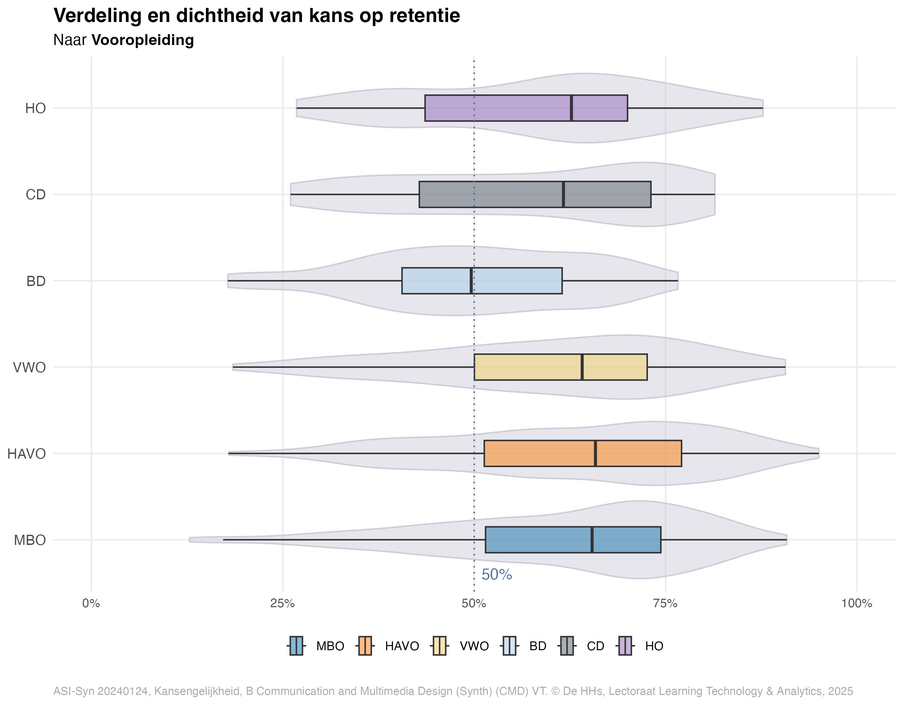
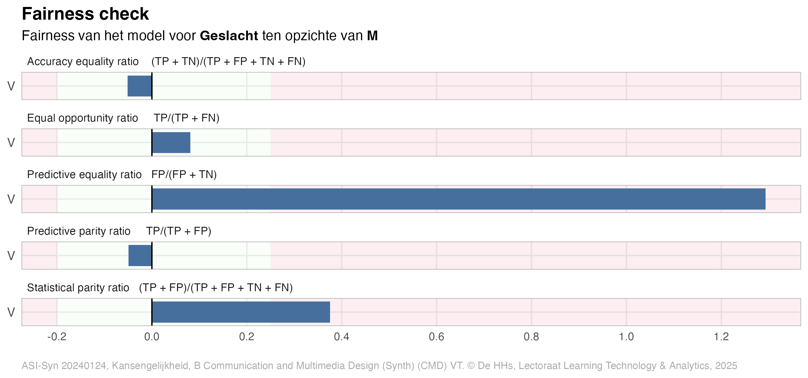
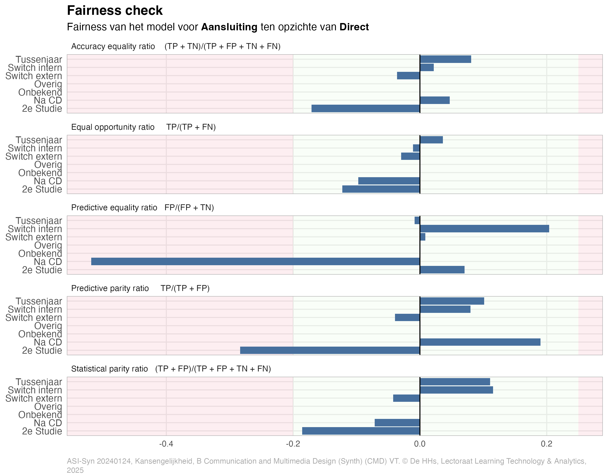
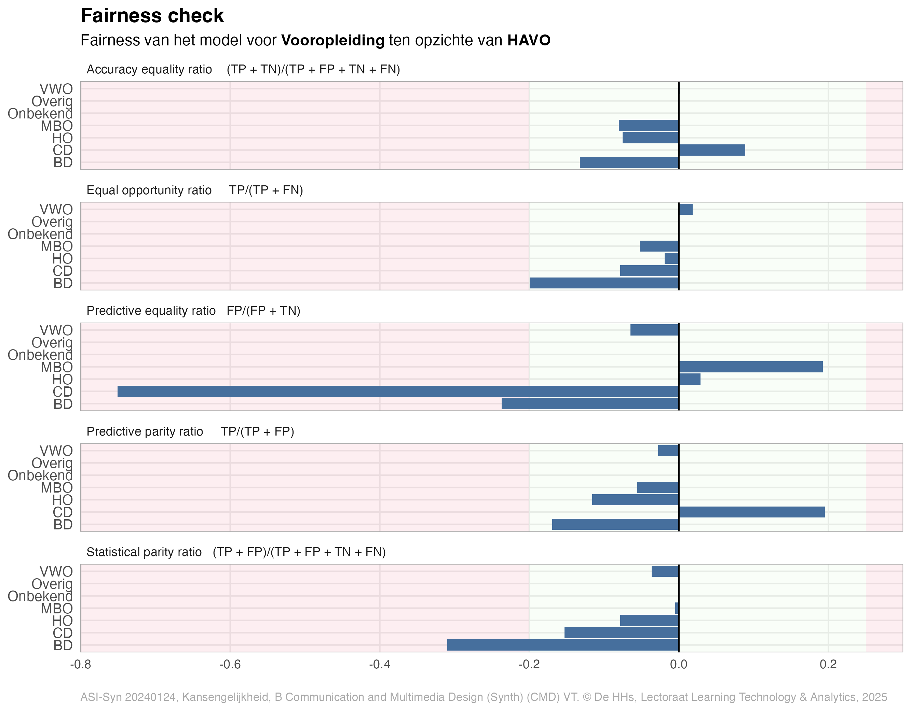

<!DOCTYPE html>
<html xmlns="http://www.w3.org/1999/xhtml" lang="nl" xml:lang="nl"><head>

<meta charset="utf-8">
<meta name="generator" content="quarto-1.6.39">

<meta name="viewport" content="width=device-width, initial-scale=1.0, user-scalable=yes">


<title>4&nbsp; Analyse van kansengelijkheid – No Fairness without Awareness - Advanced</title>
<style>
code{white-space: pre-wrap;}
span.smallcaps{font-variant: small-caps;}
div.columns{display: flex; gap: min(4vw, 1.5em);}
div.column{flex: auto; overflow-x: auto;}
div.hanging-indent{margin-left: 1.5em; text-indent: -1.5em;}
ul.task-list{list-style: none;}
ul.task-list li input[type="checkbox"] {
  width: 0.8em;
  margin: 0 0.8em 0.2em -1em; /* quarto-specific, see https://github.com/quarto-dev/quarto-cli/issues/4556 */ 
  vertical-align: middle;
}
/* CSS for syntax highlighting */
pre > code.sourceCode { white-space: pre; position: relative; }
pre > code.sourceCode > span { line-height: 1.25; }
pre > code.sourceCode > span:empty { height: 1.2em; }
.sourceCode { overflow: visible; }
code.sourceCode > span { color: inherit; text-decoration: inherit; }
div.sourceCode { margin: 1em 0; }
pre.sourceCode { margin: 0; }
@media screen {
div.sourceCode { overflow: auto; }
}
@media print {
pre > code.sourceCode { white-space: pre-wrap; }
pre > code.sourceCode > span { display: inline-block; text-indent: -5em; padding-left: 5em; }
}
pre.numberSource code
  { counter-reset: source-line 0; }
pre.numberSource code > span
  { position: relative; left: -4em; counter-increment: source-line; }
pre.numberSource code > span > a:first-child::before
  { content: counter(source-line);
    position: relative; left: -1em; text-align: right; vertical-align: baseline;
    border: none; display: inline-block;
    -webkit-touch-callout: none; -webkit-user-select: none;
    -khtml-user-select: none; -moz-user-select: none;
    -ms-user-select: none; user-select: none;
    padding: 0 4px; width: 4em;
  }
pre.numberSource { margin-left: 3em;  padding-left: 4px; }
div.sourceCode
  {   }
@media screen {
pre > code.sourceCode > span > a:first-child::before { text-decoration: underline; }
}
/* CSS for citations */
div.csl-bib-body { }
div.csl-entry {
  clear: both;
  margin-bottom: 0em;
}
.hanging-indent div.csl-entry {
  margin-left:2em;
  text-indent:-2em;
}
div.csl-left-margin {
  min-width:2em;
  float:left;
}
div.csl-right-inline {
  margin-left:2em;
  padding-left:1em;
}
div.csl-indent {
  margin-left: 2em;
}</style>


<script src="site_libs/quarto-nav/quarto-nav.js"></script>
<script src="site_libs/quarto-nav/headroom.min.js"></script>
<script src="site_libs/clipboard/clipboard.min.js"></script>
<script src="site_libs/quarto-search/autocomplete.umd.js"></script>
<script src="site_libs/quarto-search/fuse.min.js"></script>
<script src="site_libs/quarto-search/quarto-search.js"></script>
<meta name="quarto:offset" content="./">
<link href="./ch-references.html" rel="next">
<link href="./ch-factors.html" rel="prev">
<script src="site_libs/quarto-html/quarto.js"></script>
<script src="site_libs/quarto-html/popper.min.js"></script>
<script src="site_libs/quarto-html/tippy.umd.min.js"></script>
<script src="site_libs/quarto-html/anchor.min.js"></script>
<link href="site_libs/quarto-html/tippy.css" rel="stylesheet">
<link href="site_libs/quarto-html/quarto-syntax-highlighting-0626ff4d7a71b55c8707dcae1d04a9b6.css" rel="stylesheet" id="quarto-text-highlighting-styles">
<script src="site_libs/bootstrap/bootstrap.min.js"></script>
<link href="site_libs/bootstrap/bootstrap-icons.css" rel="stylesheet">
<link href="site_libs/bootstrap/bootstrap-2d8d5bf1ebe9b9250812659bbfb1ff2b.min.css" rel="stylesheet" append-hash="true" id="quarto-bootstrap" data-mode="light">
<script src="site_libs/quarto-contrib/glightbox/glightbox.min.js"></script>
<link href="site_libs/quarto-contrib/glightbox/glightbox.min.css" rel="stylesheet">
<link href="site_libs/quarto-contrib/glightbox/lightbox.css" rel="stylesheet">
<script id="quarto-search-options" type="application/json">{
  "location": "navbar",
  "copy-button": false,
  "collapse-after": 3,
  "panel-placement": "end",
  "type": "overlay",
  "limit": 50,
  "keyboard-shortcut": [
    "f",
    "/",
    "s"
  ],
  "show-item-context": false,
  "language": {
    "search-no-results-text": "Geen resultaten",
    "search-matching-documents-text": "Gevonden documenten",
    "search-copy-link-title": "Kopieer link om te zoeken",
    "search-hide-matches-text": "Extra overeenkomsten verbergen",
    "search-more-match-text": "meer overeenkomst in dit document",
    "search-more-matches-text": "meer overeenkomsten in dit document",
    "search-clear-button-title": "Wissen",
    "search-text-placeholder": "",
    "search-detached-cancel-button-title": "Annuleren",
    "search-submit-button-title": "Verzenden",
    "search-label": "Zoeken"
  }
}</script>
<style>html{ scroll-behavior: smooth; }</style>
<script async="" src="https://hypothes.is/embed.js"></script>
<script>
  window.document.addEventListener("DOMContentLoaded", function (_event) {
    document.body.classList.add('hypothesis-enabled');
  });
</script>
<link href="site_libs/tabwid-1.1.3/tabwid.css" rel="stylesheet">
<script src="site_libs/tabwid-1.1.3/tabwid.js"></script>
<link rel="shortcut icon" href="brand/favicon/favicon.svg">
<link rel="icon" type="image/x-icon" href="brand/favicon/favicon.ico">

  <script>window.backupDefine = window.define; window.define = undefined;</script><script src="https://cdn.jsdelivr.net/npm/katex@latest/dist/katex.min.js"></script>
  <script>document.addEventListener("DOMContentLoaded", function () {
 var mathElements = document.getElementsByClassName("math");
 var macros = [];
 for (var i = 0; i < mathElements.length; i++) {
  var texText = mathElements[i].firstChild;
  if (mathElements[i].tagName == "SPAN") {
   katex.render(texText.data, mathElements[i], {
    displayMode: mathElements[i].classList.contains('display'),
    throwOnError: false,
    macros: macros,
    fleqn: false
   });
}}});
  </script>
  <script>window.define = window.backupDefine; window.backupDefine = undefined;</script><link rel="stylesheet" href="https://cdn.jsdelivr.net/npm/katex@latest/dist/katex.min.css">

<script type="text/javascript">
const typesetMath = (el) => {
  if (window.MathJax) {
    // MathJax Typeset
    window.MathJax.typeset([el]);
  } else if (window.katex) {
    // KaTeX Render
    var mathElements = el.getElementsByClassName("math");
    var macros = [];
    for (var i = 0; i < mathElements.length; i++) {
      var texText = mathElements[i].firstChild;
      if (mathElements[i].tagName == "SPAN") {
        window.katex.render(texText.data, mathElements[i], {
          displayMode: mathElements[i].classList.contains('display'),
          throwOnError: false,
          macros: macros,
          fleqn: false
        });
      }
    }
  }
}
window.Quarto = {
  typesetMath
};
</script>

</head>

<body class="nav-sidebar floating nav-fixed">

<div id="quarto-search-results"></div>
  <header id="quarto-header" class="headroom fixed-top">
    <nav class="navbar navbar-expand-lg " data-bs-theme="dark">
      <div class="navbar-container container-fluid">
      <div class="navbar-brand-container mx-auto">
    <a class="navbar-brand" href="./index.html">
    <span class="navbar-title">No Fairness without Awareness - Advanced</span>
    </a>
  </div>
            <div id="quarto-search" class="" title="Zoeken"></div>
          <button class="navbar-toggler" type="button" data-bs-toggle="collapse" data-bs-target="#navbarCollapse" aria-controls="navbarCollapse" role="menu" aria-expanded="false" aria-label="Schakel navigatie" onclick="if (window.quartoToggleHeadroom) { window.quartoToggleHeadroom(); }">
  <span class="navbar-toggler-icon"></span>
</button>
          <div class="collapse navbar-collapse" id="navbarCollapse">
            <ul class="navbar-nav navbar-nav-scroll ms-auto">
  <li class="nav-item compact">
    <a class="nav-link" href="https://www.dehaagsehogeschool.nl/onderzoek/centres-expertise/no-fairness-without-awareness"> <i class="bi bi-info-square" role="img" aria-label="Over het onderzoek No Fairness without Awareness">
</i> 
<span class="menu-text"></span></a>
  </li>  
</ul>
          </div> <!-- /navcollapse -->
            <div class="quarto-navbar-tools">
    <a href="https://github.com/LTA-HHs/lta-hhs-tidymodels-studiesucces/" title="Broncode" class="quarto-navigation-tool px-1" aria-label="Broncode"><i class="bi bi-github"></i></a>
</div>
      </div> <!-- /container-fluid -->
    </nav>
  <nav class="quarto-secondary-nav">
    <div class="container-fluid d-flex">
      <button type="button" class="quarto-btn-toggle btn" data-bs-toggle="collapse" role="button" data-bs-target=".quarto-sidebar-collapse-item" aria-controls="quarto-sidebar" aria-expanded="false" aria-label="Schakel zijbalknavigatie" onclick="if (window.quartoToggleHeadroom) { window.quartoToggleHeadroom(); }">
        <i class="bi bi-layout-text-sidebar-reverse"></i>
      </button>
        <a class="flex-grow-1 no-decor" role="navigation" data-bs-toggle="collapse" data-bs-target=".quarto-sidebar-collapse-item" aria-controls="quarto-sidebar" aria-expanded="false" aria-label="Schakel zijbalknavigatie" onclick="if (window.quartoToggleHeadroom) { window.quartoToggleHeadroom(); }">      
          <h1 class="quarto-secondary-nav-title"><span id="sec-kansengelijkheid" class="quarto-section-identifier"><span class="chapter-number">4</span>&nbsp; <span class="chapter-title">Analyse van kansengelijkheid</span></span></h1>
        </a>     
    </div>
  </nav>
</header>
<!-- content -->
<div id="quarto-content" class="quarto-container page-columns page-rows-contents page-layout-article page-navbar">
<!-- sidebar -->
  <nav id="quarto-sidebar" class="sidebar collapse collapse-horizontal quarto-sidebar-collapse-item sidebar-navigation floating overflow-auto">
    <div class="sidebar-menu-container"> 
    <ul class="list-unstyled mt-1">
        <li class="sidebar-item">
  <div class="sidebar-item-container"> 
  <a href="./index.html" class="sidebar-item-text sidebar-link">
 <span class="menu-text">Samenvatting</span></a>
  </div>
</li>
        <li class="sidebar-item sidebar-item-section">
      <div class="sidebar-item-container"> 
            <a class="sidebar-item-text sidebar-link text-start" data-bs-toggle="collapse" data-bs-target="#quarto-sidebar-section-1" role="navigation" aria-expanded="true">
 <span class="menu-text">Analyse</span></a>
          <a class="sidebar-item-toggle text-start" data-bs-toggle="collapse" data-bs-target="#quarto-sidebar-section-1" role="navigation" aria-expanded="true" aria-label="Schakel sectie">
            <i class="bi bi-chevron-right ms-2"></i>
          </a> 
      </div>
      <ul id="quarto-sidebar-section-1" class="collapse list-unstyled sidebar-section depth1 show">  
          <li class="sidebar-item">
  <div class="sidebar-item-container"> 
  <a href="./ch-introduction.html" class="sidebar-item-text sidebar-link">
 <span class="menu-text"><span class="chapter-number">1</span>&nbsp; <span class="chapter-title">Inleiding</span></span></a>
  </div>
</li>
          <li class="sidebar-item">
  <div class="sidebar-item-container"> 
  <a href="./ch-models.html" class="sidebar-item-text sidebar-link">
 <span class="menu-text"><span class="chapter-number">2</span>&nbsp; <span class="chapter-title">Prognosemodel Retentie na 1 jaar</span></span></a>
  </div>
</li>
          <li class="sidebar-item">
  <div class="sidebar-item-container"> 
  <a href="./ch-factors.html" class="sidebar-item-text sidebar-link">
 <span class="menu-text"><span class="chapter-number">3</span>&nbsp; <span class="chapter-title">Analyse van factoren</span></span></a>
  </div>
</li>
          <li class="sidebar-item">
  <div class="sidebar-item-container"> 
  <a href="./ch-equity.html" class="sidebar-item-text sidebar-link active">
 <span class="menu-text"><span class="chapter-number">4</span>&nbsp; <span class="chapter-title">Analyse van kansengelijkheid</span></span></a>
  </div>
</li>
          <li class="sidebar-item">
  <div class="sidebar-item-container"> 
  <a href="./ch-references.html" class="sidebar-item-text sidebar-link">
 <span class="menu-text">Referenties</span></a>
  </div>
</li>
      </ul>
  </li>
        <li class="sidebar-item sidebar-item-section">
      <div class="sidebar-item-container"> 
            <a class="sidebar-item-text sidebar-link text-start" data-bs-toggle="collapse" data-bs-target="#quarto-sidebar-section-2" role="navigation" aria-expanded="true">
 <span class="menu-text">Bijlagen</span></a>
          <a class="sidebar-item-toggle text-start" data-bs-toggle="collapse" data-bs-target="#quarto-sidebar-section-2" role="navigation" aria-expanded="true" aria-label="Schakel sectie">
            <i class="bi bi-chevron-right ms-2"></i>
          </a> 
      </div>
      <ul id="quarto-sidebar-section-2" class="collapse list-unstyled sidebar-section depth1 show">  
          <li class="sidebar-item">
  <div class="sidebar-item-container"> 
  <a href="./x-a-appendix-abbreviations.html" class="sidebar-item-text sidebar-link">
 <span class="menu-text"><span class="chapter-number">A</span>&nbsp; <span class="chapter-title">Afkortingen</span></span></a>
  </div>
</li>
      </ul>
  </li>
    </ul>
    </div>
</nav>
<div id="quarto-sidebar-glass" class="quarto-sidebar-collapse-item" data-bs-toggle="collapse" data-bs-target=".quarto-sidebar-collapse-item"></div>
<!-- margin-sidebar -->
    <div id="quarto-margin-sidebar" class="sidebar margin-sidebar">
        <nav id="TOC" role="doc-toc" class="toc-active">
    <h2 id="toc-title">Inhoudsopgave</h2>
   
  <ul>
  <li><a href="#inleiding" id="toc-inleiding" class="nav-link active" data-scroll-target="#inleiding"><span class="header-section-number">4.1</span> Inleiding</a></li>
  <li><a href="#voorbereidingen" id="toc-voorbereidingen" class="nav-link" data-scroll-target="#voorbereidingen"><span class="header-section-number">4.2</span> Voorbereidingen</a>
  <ul class="collapse">
  <li><a href="#laad-de-data" id="toc-laad-de-data" class="nav-link" data-scroll-target="#laad-de-data"><span class="header-section-number">4.2.1</span> Laad de data</a></li>
  <li><a href="#maak-een-explainer" id="toc-maak-een-explainer" class="nav-link" data-scroll-target="#maak-een-explainer"><span class="header-section-number">4.2.2</span> Maak een explainer</a></li>
  </ul></li>
  <li><a href="#analyse-van-kansengelijkheid" id="toc-analyse-van-kansengelijkheid" class="nav-link" data-scroll-target="#analyse-van-kansengelijkheid"><span class="header-section-number">4.3</span> Analyse van kansengelijkheid</a>
  <ul class="collapse">
  <li><a href="#ratios-om-kansengelijkheid-te-beoordelen" id="toc-ratios-om-kansengelijkheid-te-beoordelen" class="nav-link" data-scroll-target="#ratios-om-kansengelijkheid-te-beoordelen"><span class="header-section-number">4.3.1</span> Ratio’s om kansengelijkheid te beoordelen</a></li>
  <li><a href="#aantallen-en-percentages-per-groep" id="toc-aantallen-en-percentages-per-groep" class="nav-link" data-scroll-target="#aantallen-en-percentages-per-groep"><span class="header-section-number">4.3.2</span> Aantallen en percentages per groep</a></li>
  <li><a href="#verdeling-van-kansen" id="toc-verdeling-van-kansen" class="nav-link" data-scroll-target="#verdeling-van-kansen"><span class="header-section-number">4.3.3</span> Verdeling van kansen</a></li>
  <li><a href="#fairness-checks" id="toc-fairness-checks" class="nav-link" data-scroll-target="#fairness-checks"><span class="header-section-number">4.3.4</span> Fairness checks</a></li>
  </ul></li>
  <li><a href="#conclusies" id="toc-conclusies" class="nav-link" data-scroll-target="#conclusies"><span class="header-section-number">4.4</span> Conclusies</a></li>
  </ul>
<div class="toc-actions"><ul><li><a href="https://github.com/LTA-HHs/lta-hhs-tidymodels-studiesucces/issues/new" class="toc-action"><i class="bi bi-github"></i>Een probleem melden</a></li></ul></div><div class="quarto-other-links"><h2>Meer informatie</h2><ul><li><a href="https://www.dehaagsehogeschool.nl/onderzoek/lectoraten/learning-technology-analytics"><i class="bi bi-link-45deg"></i>Over het lectoraat Learning Technology &amp; Analytics</a></li><li><a href="https://www.dehaagsehogeschool.nl/onderzoek/kenniscentra/no-fairness-without-awareness"><i class="bi bi-link-45deg"></i>Over het onderzoeksprogramma 'No Fairness without Awareness'</a></li></ul></div></nav>
    </div>
<!-- main -->
<main class="content" id="quarto-document-content">

<header id="title-block-header" class="quarto-title-block default">
<div class="quarto-title">
<h1 class="title d-none d-lg-block"><span id="sec-kansengelijkheid" class="quarto-section-identifier"><span class="chapter-number">4</span>&nbsp; <span class="chapter-title">Analyse van kansengelijkheid</span></span></h1>
<p class="subtitle lead">Een analyse van kansengelijkheid in studiesucces (Retentie na 1 jaar)</p>
</div>


<div class="quarto-title-meta">

    
  
    
  </div>
  


</header>


<!-- Title -->
<!-- HEADER -->
<!-- Studyprogram short -->
<p><strong>Communication and Multimedia Design</strong> (CMD), voltijd, eerstejaars, Faculteit IT &amp; Design (ITD).</p>
<p>&nbsp;</p>
<!-- Introduction -->
<section id="inleiding" class="level2" data-number="4.1">
<h2 data-number="4.1" class="anchored" data-anchor-id="inleiding"><span class="header-section-number">4.1</span> Inleiding</h2>
<p>In dit hoofdstuk gaan we in op de onderwerpen bias, fairness en kansengelijkheid. Het doel is beter te begrijpen of er studenten zijn met minder kans op succes en of dit disproportioneel is. Dit kan duiden op kansenongelijkheid.</p>
<p>De analyse van kansengelijkheid heeft de volgende stappen:</p>
<ol type="1">
<li>We lezen een bewerkte dataset in en prognosemodellen die we in een basis-analyse hebben gemaakt (zie hoofdstuk 3).</li>
<li>We maken een <em>explainer</em> om de modellen beter te begrijpen en te kunnen uitleggen.</li>
<li>Vervolgens berekenen we of er <em>bias</em> bestaat voor verschillende groepen studenten naar geslacht, aansluiting en vooropleiding. We analyseren daarvoor de verdeling van kansen en mate van fairness in het prognosemodel dat we hebben ontwikkeld.</li>
<li>We trekken er conclusies uit over de mate van bias binnen de opleiding voor retentie na 1 jaar.</li>
</ol>
<!-- Data -->
</section>
<section id="voorbereidingen" class="level2" data-number="4.2">
<h2 data-number="4.2" class="anchored" data-anchor-id="voorbereidingen"><span class="header-section-number">4.2</span> Voorbereidingen</h2>
<section id="laad-de-data" class="level3" data-number="4.2.1">
<h3 data-number="4.2.1" class="anchored" data-anchor-id="laad-de-data"><span class="header-section-number">4.2.1</span> Laad de data</h3>
<p>We laden de bewerkte data en het beste prognosemodel in voor:</p>
<p><strong>Opleiding</strong>: ITD | B Communication and Multimedia Design (Synth) (CMD), VT, eerstejaars - <strong>Retentie na 1 jaar</strong></p>
<!-- Include load-dfpersona -->
<div class="cell">
<details class="code-fold">
<summary>Toon code</summary>
<div class="sourceCode cell-code" id="cb1"><pre class="sourceCode r code-with-copy"><code class="sourceCode r"><span id="cb1-1"><a href="#cb1-1" aria-hidden="true" tabindex="-1"></a><span class="do">## Create a list of dfPersonas</span></span>
<span id="cb1-2"><a href="#cb1-2" aria-hidden="true" tabindex="-1"></a>df_persona_list <span class="ot">&lt;-</span> <span class="fu">list</span>()</span>
<span id="cb1-3"><a href="#cb1-3" aria-hidden="true" tabindex="-1"></a></span>
<span id="cb1-4"><a href="#cb1-4" aria-hidden="true" tabindex="-1"></a><span class="do">## Walk over the variables</span></span>
<span id="cb1-5"><a href="#cb1-5" aria-hidden="true" tabindex="-1"></a>df_persona_list <span class="ot">&lt;-</span> <span class="fu">map</span>(sensitive_labels,</span>
<span id="cb1-6"><a href="#cb1-6" aria-hidden="true" tabindex="-1"></a>                       <span class="sc">~</span> <span class="fu">get_df_persona_recursive</span>(.x)) <span class="sc">|&gt;</span></span>
<span id="cb1-7"><a href="#cb1-7" aria-hidden="true" tabindex="-1"></a>  <span class="fu">set_names</span>(sensitive_labels)</span>
<span id="cb1-8"><a href="#cb1-8" aria-hidden="true" tabindex="-1"></a></span>
<span id="cb1-9"><a href="#cb1-9" aria-hidden="true" tabindex="-1"></a>df_persona_per_group <span class="ot">&lt;-</span> <span class="fu">bind_rows</span>(df_persona_list) </span>
<span id="cb1-10"><a href="#cb1-10" aria-hidden="true" tabindex="-1"></a></span>
<span id="cb1-11"><a href="#cb1-11" aria-hidden="true" tabindex="-1"></a><span class="do">## Save this file as an Excel spreadsheet</span></span>
<span id="cb1-12"><a href="#cb1-12" aria-hidden="true" tabindex="-1"></a>output_path <span class="ot">&lt;-</span> <span class="fu">file.path</span>(<span class="st">"R/data"</span>, <span class="st">"df_persona_per_group.xlsx"</span>)</span>
<span id="cb1-13"><a href="#cb1-13" aria-hidden="true" tabindex="-1"></a>writexl<span class="sc">::</span><span class="fu">write_xlsx</span>(df_persona_per_group, output_path)</span>
<span id="cb1-14"><a href="#cb1-14" aria-hidden="true" tabindex="-1"></a></span>
<span id="cb1-15"><a href="#cb1-15" aria-hidden="true" tabindex="-1"></a><span class="do">## Load the personas</span></span>
<span id="cb1-16"><a href="#cb1-16" aria-hidden="true" tabindex="-1"></a>df_persona_all <span class="ot">&lt;-</span> <span class="fu">get_df_persona_recursive</span>()</span></code><button title="Kopieer naar klembord" class="code-copy-button"><i class="bi"></i></button></pre></div>
</details>
</div>
</section>
<section id="maak-een-explainer" class="level3" data-number="4.2.2">
<h3 data-number="4.2.2" class="anchored" data-anchor-id="maak-een-explainer"><span class="header-section-number">4.2.2</span> Maak een explainer</h3>
<p>Om het model beter te begrijpen en te kunnen uitleggen, maken we met behulp van het <a href="https://dalex.drwhy.ai"><code>DALEX</code> package</a> een <em>explainer</em>.</p>
<p>DALEX is onder andere ontwikkeld om uit te kunnen leggen welke verklarende variabelen van belang zijn en wat deze voor een effect hebben in een model. Een explainer is een model-onafhankelijke <em>wrapper</em>, die inzicht geeft in de voorspellingen van het model en de bijdrage van de variabelen aan de prognose. Een explainer maakt het verder mogelijk om modellen onderling te vergelijken en benchmarken.</p>
<!-- Include the fitted model -->
<div class="cell">
<details class="code-fold">
<summary>Toon code</summary>
<div class="sourceCode cell-code" id="cb2"><pre class="sourceCode r code-with-copy"><code class="sourceCode r"><span id="cb2-1"><a href="#cb2-1" aria-hidden="true" tabindex="-1"></a><span class="co"># Select the best model</span></span>
<span id="cb2-2"><a href="#cb2-2" aria-hidden="true" tabindex="-1"></a>best_model <span class="ot">&lt;-</span> df_model_results<span class="sc">$</span>model[df_model_results<span class="sc">$</span>best <span class="sc">==</span> <span class="cn">TRUE</span>]</span>
<span id="cb2-3"><a href="#cb2-3" aria-hidden="true" tabindex="-1"></a>last_fit    <span class="ot">&lt;-</span> last_fits[[best_model]]</span>
<span id="cb2-4"><a href="#cb2-4" aria-hidden="true" tabindex="-1"></a></span>
<span id="cb2-5"><a href="#cb2-5" aria-hidden="true" tabindex="-1"></a>fitted_model <span class="ot">&lt;-</span> last_fit <span class="sc">|&gt;</span></span>
<span id="cb2-6"><a href="#cb2-6" aria-hidden="true" tabindex="-1"></a>  <span class="fu">extract_fit_parsnip</span>()</span>
<span id="cb2-7"><a href="#cb2-7" aria-hidden="true" tabindex="-1"></a></span>
<span id="cb2-8"><a href="#cb2-8" aria-hidden="true" tabindex="-1"></a><span class="co"># If the model is logistic regression, check that the coefficients of the model are numerical</span></span>
<span id="cb2-9"><a href="#cb2-9" aria-hidden="true" tabindex="-1"></a><span class="cf">if</span> (best_model <span class="sc">==</span> <span class="st">"Logistic Regression"</span>) {</span>
<span id="cb2-10"><a href="#cb2-10" aria-hidden="true" tabindex="-1"></a>  </span>
<span id="cb2-11"><a href="#cb2-11" aria-hidden="true" tabindex="-1"></a>  coefs <span class="ot">&lt;-</span> <span class="fu">tidy</span>(fitted_model)<span class="sc">$</span>estimate</span>
<span id="cb2-12"><a href="#cb2-12" aria-hidden="true" tabindex="-1"></a>  </span>
<span id="cb2-13"><a href="#cb2-13" aria-hidden="true" tabindex="-1"></a>  <span class="co"># Check that the coefficients are numerical</span></span>
<span id="cb2-14"><a href="#cb2-14" aria-hidden="true" tabindex="-1"></a>  <span class="cf">if</span> (<span class="sc">!</span><span class="fu">is.numeric</span>(coefs)) {</span>
<span id="cb2-15"><a href="#cb2-15" aria-hidden="true" tabindex="-1"></a>    <span class="fu">stop</span>(<span class="st">"De geëxtraheerde coëfficiënten zijn niet numeriek."</span>)</span>
<span id="cb2-16"><a href="#cb2-16" aria-hidden="true" tabindex="-1"></a>  }</span>
<span id="cb2-17"><a href="#cb2-17" aria-hidden="true" tabindex="-1"></a>  </span>
<span id="cb2-18"><a href="#cb2-18" aria-hidden="true" tabindex="-1"></a>}</span></code><button title="Kopieer naar klembord" class="code-copy-button"><i class="bi"></i></button></pre></div>
</details>
</div>
<!-- Include the last fit explainer -->
<div class="cell">
<details class="code-fold">
<summary>Toon code</summary>
<div class="sourceCode cell-code" id="cb3"><pre class="sourceCode r code-with-copy"><code class="sourceCode r"><span id="cb3-1"><a href="#cb3-1" aria-hidden="true" tabindex="-1"></a><span class="co"># Extract the fitted model</span></span>
<span id="cb3-2"><a href="#cb3-2" aria-hidden="true" tabindex="-1"></a>fitted_model <span class="ot">&lt;-</span> last_fit <span class="sc">|&gt;</span></span>
<span id="cb3-3"><a href="#cb3-3" aria-hidden="true" tabindex="-1"></a>  <span class="fu">extract_fit_parsnip</span>()</span>
<span id="cb3-4"><a href="#cb3-4" aria-hidden="true" tabindex="-1"></a></span>
<span id="cb3-5"><a href="#cb3-5" aria-hidden="true" tabindex="-1"></a><span class="co"># Extract the workflow</span></span>
<span id="cb3-6"><a href="#cb3-6" aria-hidden="true" tabindex="-1"></a>workflow <span class="ot">&lt;-</span> last_fit <span class="sc">|&gt;</span></span>
<span id="cb3-7"><a href="#cb3-7" aria-hidden="true" tabindex="-1"></a>  <span class="fu">extract_workflow</span>()</span>
<span id="cb3-8"><a href="#cb3-8" aria-hidden="true" tabindex="-1"></a></span>
<span id="cb3-9"><a href="#cb3-9" aria-hidden="true" tabindex="-1"></a><span class="co"># Create an explainer</span></span>
<span id="cb3-10"><a href="#cb3-10" aria-hidden="true" tabindex="-1"></a>explain_lf <span class="ot">&lt;-</span> DALEX<span class="sc">::</span><span class="fu">explain</span>(<span class="at">model =</span> workflow,</span>
<span id="cb3-11"><a href="#cb3-11" aria-hidden="true" tabindex="-1"></a>                             <span class="at">data =</span> df_sp_enrollments <span class="sc">|&gt;</span> <span class="fu">select</span>(<span class="sc">-</span>Retentie),</span>
<span id="cb3-12"><a href="#cb3-12" aria-hidden="true" tabindex="-1"></a>                             <span class="at">y =</span> df_sp_enrollments<span class="sc">$</span>Retentie,</span>
<span id="cb3-13"><a href="#cb3-13" aria-hidden="true" tabindex="-1"></a>                             <span class="at">colorize =</span> <span class="cn">TRUE</span>,</span>
<span id="cb3-14"><a href="#cb3-14" aria-hidden="true" tabindex="-1"></a>                             <span class="at">verbose =</span> <span class="cn">TRUE</span>,</span>
<span id="cb3-15"><a href="#cb3-15" aria-hidden="true" tabindex="-1"></a>                             <span class="at">label =</span> best_model)</span></code><button title="Kopieer naar klembord" class="code-copy-button"><i class="bi"></i></button></pre></div>
</details>
<div class="cell-output cell-output-stdout">
<pre><code>Preparation of a new explainer is initiated
  -&gt; model label       :  Random Forest 
  -&gt; data              :  1613  rows  26  cols 
  -&gt; target variable   :  1613  values 
  -&gt; predict function  :  yhat.workflow  will be used (  default  )
  -&gt; predicted values  :  No value for predict function target column. (  default  )
  -&gt; model_info        :  package tidymodels , ver. 1.3.0 , task classification (  default  ) 
  -&gt; predicted values  :  numerical, min =  0.1282285 , mean =  0.6176005 , max =  0.9501541  
  -&gt; residual function :  difference between y and yhat (  default  )
  -&gt; residuals         :  numerical, min =  -0.8617417 , mean =  0.003602241 , max =  0.8065899  
  A new explainer has been created!  </code></pre>
</div>
<details class="code-fold">
<summary>Toon code</summary>
<div class="sourceCode cell-code" id="cb5"><pre class="sourceCode r code-with-copy"><code class="sourceCode r"><span id="cb5-1"><a href="#cb5-1" aria-hidden="true" tabindex="-1"></a><span class="cf">if</span> (<span class="fu">is.null</span>(explain_lf<span class="sc">$</span>y_hat) <span class="sc">||</span> <span class="fu">is.null</span>(explain_lf<span class="sc">$</span>residuals)) {</span>
<span id="cb5-2"><a href="#cb5-2" aria-hidden="true" tabindex="-1"></a>  cli<span class="sc">::</span><span class="fu">cli_alert_danger</span>(glue<span class="sc">::</span><span class="fu">glue</span>(</span>
<span id="cb5-3"><a href="#cb5-3" aria-hidden="true" tabindex="-1"></a>    <span class="st">"The explainer does not contain the correct results. "</span>,</span>
<span id="cb5-4"><a href="#cb5-4" aria-hidden="true" tabindex="-1"></a>    <span class="st">"Check the installation of model packages: "</span>,</span>
<span id="cb5-5"><a href="#cb5-5" aria-hidden="true" tabindex="-1"></a>    <span class="st">"{glue::glue_collapse(explain_lf$model_info$package, sep = ', ')}"</span></span>
<span id="cb5-6"><a href="#cb5-6" aria-hidden="true" tabindex="-1"></a>  ))</span>
<span id="cb5-7"><a href="#cb5-7" aria-hidden="true" tabindex="-1"></a>  <span class="fu">stop</span>(<span class="st">"Solve this problem first"</span>)</span>
<span id="cb5-8"><a href="#cb5-8" aria-hidden="true" tabindex="-1"></a>}</span></code><button title="Kopieer naar klembord" class="code-copy-button"><i class="bi"></i></button></pre></div>
</details>
</div>
<!-- Equity of opportunity -->
</section>
</section>
<section id="analyse-van-kansengelijkheid" class="level2" data-number="4.3">
<h2 data-number="4.3" class="anchored" data-anchor-id="analyse-van-kansengelijkheid"><span class="header-section-number">4.3</span> Analyse van kansengelijkheid</h2>
<p>We onderzoeken kansengelijkheid door bias in de data te onderzoeken. Dit wordt ook wel een <em>fairness analyse</em> genoemd. Bias voor verschillende groepen studenten kan een teken zijn van kansenongelijkheid.</p>
<p>Het leidende werk voor fairness analyses is <a href="https://fairmlbook.org/pdf/fairmlbook.pdf"><em>Fairness and Machine Learning: Limitations and Opportunities</em></a> <span class="citation" data-cites="Barocas.2023">(<a href="ch-references.html#ref-Barocas.2023" role="doc-biblioref">Barocas et al., 2023</a>)</span>. De methode die we in deze analyse hanteren hierop gebaseerd. We maken gebruik van de <code>DALEX</code> explainer en onderzoeken de invloed van de variabelen op de kans op retentie voor verschillende groepen studenten naar geslacht, aansluiting en vooropleiding.</p>
<p>De volgende <strong>definities</strong> zijn van belang:</p>
<ul>
<li><strong>Bevoorrechte groep</strong>: Een groep die als referentiegroep wordt beschouwd en mogelijk bevoordeeld wordt. Dit is in deze analyse altijd de meerderheidsgroep (bijv. vrouwen). Welke dit is per opleiding kan verschillen.</li>
<li><strong>Beschermde groep</strong>: Een groep waarvan wordt verwacht dat deze mogelijk benadeeld wordt (bijv. mannen). Dit zijn in deze analyse, afhankelijke van de variabele, altijd een of meer minderheidsgroepen.</li>
</ul>
<!-- Explanation of confusion matrix -->
<section id="ratios-om-kansengelijkheid-te-beoordelen" class="level3" data-number="4.3.1">
<h3 data-number="4.3.1" class="anchored" data-anchor-id="ratios-om-kansengelijkheid-te-beoordelen"><span class="header-section-number">4.3.1</span> Ratio’s om kansengelijkheid te beoordelen</h3>
<p>Voor elke groep onderzoeken we <strong>5 ratio’s</strong>, ook wel maatstaven of metrieken genoemd. Deze ratio’s zijn afgeleid van verhoudingen in de confusion matrix; ze geven inzicht in de mate van bias en kansengelijkheid vanuit verschillende perspectieven van een prognosemodel.</p>
<div class="cell">
<details class="code-fold">
<summary>Toon code</summary>
<div class="sourceCode cell-code" id="cb6"><pre class="sourceCode r code-with-copy"><code class="sourceCode r"><span id="cb6-1"><a href="#cb6-1" aria-hidden="true" tabindex="-1"></a>knitr<span class="sc">::</span><span class="fu">include_graphics</span>(here<span class="sc">::</span><span class="fu">here</span>(<span class="st">"R/images"</span>, <span class="st">"confusion-matrix-fairness-lta-hhs.png"</span>))</span></code><button title="Kopieer naar klembord" class="code-copy-button"><i class="bi"></i></button></pre></div>
</details>
<div class="cell-output-display">
<div id="fig-confusion-matrix-explanation" class="quarto-float quarto-figure quarto-figure-center anchored">
<figure class="quarto-float quarto-float-fig figure">
<div aria-describedby="fig-confusion-matrix-explanation-caption-0ceaefa1-69ba-4598-a22c-09a6ac19f8ca">
<a href="R/images/confusion-matrix-fairness-lta-hhs.png" class="lightbox" data-gallery="quarto-lightbox-gallery-1" title="Figuur&nbsp;4.1: Confusion matrix in relatie tot BSA"></a>
</div>
<figcaption class="quarto-float-caption-bottom quarto-float-caption quarto-float-fig" id="fig-confusion-matrix-explanation-caption-0ceaefa1-69ba-4598-a22c-09a6ac19f8ca">
Figuur&nbsp;4.1: Confusion matrix in relatie tot BSA
</figcaption>
</figure>
</div>
</div>
</div>
<div class="tabset-margin-container"></div><div class="panel-tabset">
<ul class="nav nav-tabs" role="tablist"><li class="nav-item" role="presentation"><a class="nav-link active" id="tabset-1-1-tab" data-bs-toggle="tab" data-bs-target="#tabset-1-1" role="tab" aria-controls="tabset-1-1" aria-selected="true" aria-current="page">1. Accuracy Equality</a></li><li class="nav-item" role="presentation"><a class="nav-link" id="tabset-1-2-tab" data-bs-toggle="tab" data-bs-target="#tabset-1-2" role="tab" aria-controls="tabset-1-2" aria-selected="false">2. Equal Opportunity</a></li><li class="nav-item" role="presentation"><a class="nav-link" id="tabset-1-3-tab" data-bs-toggle="tab" data-bs-target="#tabset-1-3" role="tab" aria-controls="tabset-1-3" aria-selected="false">3. Predictive Equality</a></li><li class="nav-item" role="presentation"><a class="nav-link" id="tabset-1-4-tab" data-bs-toggle="tab" data-bs-target="#tabset-1-4" role="tab" aria-controls="tabset-1-4" aria-selected="false">4. Predictive Parity</a></li><li class="nav-item" role="presentation"><a class="nav-link" id="tabset-1-5-tab" data-bs-toggle="tab" data-bs-target="#tabset-1-5" role="tab" aria-controls="tabset-1-5" aria-selected="false">5. Statistical Parity</a></li></ul>
<div class="tab-content">
<div id="tabset-1-1" class="tab-pane active" role="tabpanel" aria-labelledby="tabset-1-1-tab">
<p><span style="     color: rgba(0, 178, 205, 255) !important;"><strong>1. Accuracy Equality Ratio</strong></span></p>
<p><em>In welke mate voorspelt het model zowel de positieve als negatieve uitkomsten goed?</em></p>
<p>Deze maatstaf wordt gebruikt om te beoordelen of een model even accuraat is voor verschillende subgroepen binnen de dataset. Het vergelijkt de nauwkeurigheid van het model voor een beschermde groep (een minderheidsgroep) met de nauwkeurigheid voor een bevoorrechte groep (de meerderheidsgroep). Deze ratio wordt berekend als de verhouding tussen de nauwkeurigheid voor de beschermde groep en de nauwkeurigheid voor de bevoorrechte groep.</p>
<p><strong>Formule</strong></p>
<p><span class="math display"> \text{ACC} = \frac{TP + TN}{TP + FP + TN + FN} </span></p>
<p><strong>Definities</strong></p>
<ul>
<li><strong>Nauwkeurigheid (Accuracy)</strong>: Het percentage correcte voorspellingen van het model. Dit wordt berekend als het aantal juiste voorspellingen gedeeld door het totale aantal voorspellingen.</li>
</ul>
<p><strong>Interpretatie</strong></p>
<ul>
<li><strong>Ratio = 1</strong>: Het model is even accuraat voor beide groepen.</li>
<li><strong>Ratio &lt; 1</strong>: Het model is minder accuraat voor de beschermde groep dan voor de bevoorrechte groep, wat wijst op mogelijke bias tegen de beschermde groep.</li>
<li><strong>Ratio &gt; 1</strong>: Het model is meer accuraat voor de beschermde groep dan voor de bevoorrechte groep, wat ook op een vorm van bias kan wijzen, maar in het voordeel van de beschermde groep.</li>
</ul>
<div class="callout callout-style-simple callout-note no-icon callout-titled" title="Ter illustratie">
<div class="callout-header d-flex align-content-center">
<div class="callout-icon-container">
<i class="callout-icon no-icon"></i>
</div>
<div class="callout-title-container flex-fill">
Ter illustratie
</div>
</div>
<div class="callout-body-container callout-body">
<p>Stel dat we retentie voor havisten (bevoorrecht) en mbo-ers (beschermd) voorspellen en de nauwkeurigheid van het model voor havisten 80% is en voor mbo-ers 70%. De Accuracy Equality Ratio is dan 0,875 (70% / 80%). Dit betekent dat het model minder accuraat is voor de beschermde groep (mbo-ers) dan voor de bevoorrechte groep (havisten).</p>
</div>
</div>
</div>
<div id="tabset-1-2" class="tab-pane" role="tabpanel" aria-labelledby="tabset-1-2-tab">
<p><span style="     color: rgba(0, 178, 205, 255) !important;"><strong>2. Equal Opportunity Ratio</strong></span></p>
<p><em>In welke mate zijn de terecht positieve voorspellingen gelijk?</em></p>
<p>Deze maatstaf beoordeelt de gelijkheid van kansen die een model biedt aan verschillende subgroepen in termen van de ‘True Positive Rate’ (TPR). Het vergelijkt de kans dat een model correct een positieve uitkomst voorspelt voor een beschermde groep versus een bevoorrechte groep.</p>
<p>De True Positive Rate (TPR) is een andere term voor de <strong>sensitiviteit</strong> (ook wel recall) genoemd. De Equal Opportunity Ratio wordt berekend als het aantal true positives gedeeld door het totaal aantal werkelijke positives.</p>
<p><strong>Formule</strong></p>
<p><span class="math display"> \text{TPR} = \frac{TP}{TP + FN} </span></p>
<p><strong>Definities</strong></p>
<ul>
<li><strong>TP</strong>: True Positives (correcte voorspellingen van positieve uitkomsten)</li>
<li><strong>FN</strong>: False Negatives (werkelijke positieve uitkomsten die foutief als negatief zijn voorspeld)</li>
</ul>
<p><strong>Interpretatie</strong></p>
<ul>
<li><strong>Ratio = 1</strong>: Het model biedt gelijke kansen aan beide groepen in termen van het correct voorspellen van positieve uitkomsten.</li>
<li><strong>Ratio &lt; 1</strong>: Het model biedt minder kansen aan de beschermde groep in vergelijking met de bevoorrechte groep, wat wijst op mogelijke bias tegen de beschermde groep.</li>
<li><strong>Ratio &gt; 1</strong>: Het model biedt meer kansen aan de beschermde groep in vergelijking met de bevoorrechte groep, wat ook op een vorm van bias kan wijzen, maar in het voordeel van de beschermde groep.</li>
</ul>
<div class="callout callout-style-simple callout-note no-icon callout-titled" title="Ter illustratie">
<div class="callout-header d-flex align-content-center">
<div class="callout-icon-container">
<i class="callout-icon no-icon"></i>
</div>
<div class="callout-title-container flex-fill">
Ter illustratie
</div>
</div>
<div class="callout-body-container callout-body">
<p>Stel dat we retentie voor havisten (bevoorrecht) en mbo-ers (beschermd) voorspellen en de True Positive Rate voor havisten 70% is en voor mbo-ers 60%. De Equal Opportunity Ratio is dan 0,857 (60% / 70%). Dit betekent dat het model minder kans biedt aan de beschermde groep (mbo-ers) om correct positieve uitkomsten te voorspellen dan aan de bevoorrechte groep (havisten).</p>
</div>
</div>
</div>
<div id="tabset-1-3" class="tab-pane" role="tabpanel" aria-labelledby="tabset-1-3-tab">
<p><span style="     color: rgba(0, 178, 205, 255) !important;"><strong>3. Predictive Equality Ratio</strong></span></p>
<p><em>In welke mate zijn de vals positieve voorspellingen gelijk?</em></p>
<p>Deze maatstaf beoordeelt de gelijkheid van het aantal False Positives (vals-positieven) tussen verschillende subgroepen. Het vergelijkt de False Positive Rate (FPR) voor een beschermde groep met de FPR voor een bevoorrechte groep.</p>
<p>De FPR is de verhouding van het aantal vals-positieve voorspellingen (False Positives, FP) ten opzichte van het totaal aantal werkelijke negatieve gevallen (True Negatives, TN en False Positives, FP). De Predictive Equality Ratio wordt berekend als de verhouding tussen de FPR voor de beschermde groep en de FPR voor de bevoorrechte groep.</p>
<p><strong>Formule</strong></p>
<p><span class="math display"> \text{FPR} = \frac{FP}{FP + TN} </span></p>
<p><strong>Definities</strong></p>
<ul>
<li><strong>FP</strong>: False Positives (foutieve voorspellingen van positieve uitkomsten)</li>
<li><strong>TN</strong>: True Negatives (correcte voorspellingen van negatieve uitkomsten)</li>
</ul>
<p><strong>Interpretatie</strong></p>
<ul>
<li><strong>Ratio = 1</strong>: Het model heeft een gelijke kans om False Positives te maken voor beide groepen.</li>
<li><strong>Ratio &lt; 1</strong>: Het model heeft minder kans om False Positives te maken voor de beschermde groep dan voor de bevoorrechte groep, wat wijst op mogelijke bias ten nadele van de bevoorrechte groep.</li>
<li><strong>Ratio &gt; 1</strong>: Het model heeft meer kans om False Positives te maken voor de beschermde groep dan voor de bevoorrechte groep, wat wijst op mogelijke bias ten nadele van de beschermde groep.</li>
</ul>
<div class="callout callout-style-simple callout-note no-icon callout-titled" title="Ter illustratie">
<div class="callout-header d-flex align-content-center">
<div class="callout-icon-container">
<i class="callout-icon no-icon"></i>
</div>
<div class="callout-title-container flex-fill">
Ter illustratie
</div>
</div>
<div class="callout-body-container callout-body">
<p>Stel dat we retentie voor havisten (bevoorrecht) en mbo-ers (beschermd) voorspellen en de False Positive Rate voor havisten 20% is en voor mbo-ers 30%. De Predictive Equality Ratio is dan 1,5 (30% / 20%). Dit betekent dat het model meer kans heeft om vals-positieve voorspellingen te maken voor de beschermde groep (mbo-ers) dan voor de bevoorrechte groep (havisten).</p>
</div>
</div>
</div>
<div id="tabset-1-4" class="tab-pane" role="tabpanel" aria-labelledby="tabset-1-4-tab">
<p><span style="     color: rgba(0, 178, 205, 255) !important;"><strong>4. Predictive Parity Ratio</strong></span></p>
<p><em>In welke mate zijn de terecht positieve voorspellingen gelijk?</em></p>
<p>Deze maatstaf beoordeelt de gelijkheid van de nauwkeurigheid van de voorspelling tussen verschillende subgroepen door de positieve voorspellende waarde (Positive Predictive Value, PPV) van het model voor een beschermde groep te vergelijken met die voor een bevoorrechte groep. De PVV wordt ook wel de <strong>precisie</strong> genoemd en wordt berekend als het aantal true positives (TP) gedeeld door het totaal aantal voorspelde positives (TP en FP). Het is een maat voor de nauwkeurigheid van de positieve voorspellingen van het model.</p>
<p><strong>Formule</strong></p>
<p><span class="math display"> \text{PPV} = \frac{TP}{TP + FP} </span></p>
<p><strong>Definities</strong></p>
<ul>
<li><strong>TP</strong>: True Positives (correcte voorspellingen van positieve uitkomsten)</li>
<li><strong>FP</strong>: False Positives (foutieve voorspellingen van positieve uitkomsten)</li>
</ul>
<p><strong>Interpretatie</strong></p>
<ul>
<li><strong>Ratio = 1</strong>: Het model heeft een gelijke nauwkeurigheid in voorspellingen voor beide groepen.</li>
<li><strong>Ratio &lt; 1</strong>: Het model is minder nauwkeurig in het voorspellen van positieve uitkomsten voor de beschermde groep dan voor de bevoorrechte groep, wat wijst op mogelijke bias tegen de beschermde groep.</li>
<li><strong>Ratio &gt; 1</strong>: Het model is nauwkeuriger in het voorspellen van positieve uitkomsten voor de beschermde groep dan voor de bevoorrechte groep, wat ook op een vorm van bias kan wijzen, maar in het voordeel van de beschermde groep.</li>
</ul>
<div class="callout callout-style-simple callout-note no-icon callout-titled" title="Ter illustratie">
<div class="callout-header d-flex align-content-center">
<div class="callout-icon-container">
<i class="callout-icon no-icon"></i>
</div>
<div class="callout-title-container flex-fill">
Ter illustratie
</div>
</div>
<div class="callout-body-container callout-body">
<p>Stel dat we retentie voor havisten (bevoorrecht) en mbo-ers (beschermd) voorspellen en de Positive Predictive Value voor havisten 80% is en voor mbo-ers 70%. De Predictive Parity Ratio is dan 0,875 (70% / 80%). Dit betekent dat het model minder nauwkeurig is in het voorspellen van positieve uitkomsten voor de beschermde groep (mbo-ers) dan voor de bevoorrechte groep (havisten).</p>
</div>
</div>
</div>
<div id="tabset-1-5" class="tab-pane" role="tabpanel" aria-labelledby="tabset-1-5-tab">
<p><span style="     color: rgba(0, 178, 205, 255) !important;"><strong>5. Statistical Parity Ratio</strong></span></p>
<p><em>In welke mate zijn de positieve voorspellingen gelijk?</em></p>
<p>Deze maatstaf beoordeelt de gelijkheid van de positieve voorspellingen (ongeacht of ze correct zijn of niet) tussen verschillende subgroepen. Het vergelijkt de kans dat een model een positieve uitkomst voorspelt voor een beschermde groep met de kans dat het een positieve uitkomst voorspelt voor een bevoorrechte groep. De Statistical Parity Ratio wordt berekend als de verhouding tussen de kans op een positieve voorspelling voor de beschermde groep en de kans op een positieve voorspelling voor de bevoorrechte groep.</p>
<p><strong>Formule</strong></p>
<p><span class="math display"> \text{SPR} = \frac{TP + FP}{TP + FP + TN + FN} </span></p>
<p><strong>Definities</strong></p>
<ul>
<li><strong>Positieve Voorspelling</strong>: Een voorspelling waarin het model een positieve uitkomst voorspelt (bijv. aangenomen worden, krediet goedkeuring, etc.).</li>
</ul>
<p><strong>Interpretatie</strong></p>
<ul>
<li><strong>Ratio = 1</strong>: Het model voorspelt even vaak positieve uitkomsten voor beide groepen.</li>
<li><strong>Ratio &lt; 1</strong>: Het model voorspelt minder vaak positieve uitkomsten voor de beschermde groep dan voor de bevoorrechte groep, wat wijst op mogelijke bias tegen de beschermde groep.</li>
<li><strong>Ratio &gt; 1</strong>: Het model voorspelt vaker positieve uitkomsten voor de beschermde groep dan voor de bevoorrechte groep, wat kan wijzen op bias ten nadele van de bevoorrechte groep.</li>
</ul>
<div class="callout callout-style-simple callout-note no-icon callout-titled" title="Ter illustratie">
<div class="callout-header d-flex align-content-center">
<div class="callout-icon-container">
<i class="callout-icon no-icon"></i>
</div>
<div class="callout-title-container flex-fill">
Ter illustratie
</div>
</div>
<div class="callout-body-container callout-body">
<p>Stel dat we retentie voor havisten (bevoorrecht) en mbo-ers (beschermd) voorspellen en de kans op een positieve voorspelling voor havisten 80% is en voor mbo-ers 70%. De Statistical Parity Ratio is dan 0,875 (70% / 80%). Dit betekent dat het model minder vaak positieve uitkomsten voorspelt voor de beschermde groep (havisten) dan voor de bevoorrechte groep (mbo-ers).</p>
</div>
</div>
</div>
</div>
</div>
<p>Nu we deze begrippen hebben gedefinieerd, kunnen we de bias en kansengelijkheid van het model voor verschillende groepen studenten analyseren. Hiervoor gebruiken we het <code>fairmodels</code> package van <code>DALEX</code>.</p>
<!-- Numbers and percentages by group -->
</section>
<section id="aantallen-en-percentages-per-groep" class="level3" data-number="4.3.2">
<h3 data-number="4.3.2" class="anchored" data-anchor-id="aantallen-en-percentages-per-groep"><span class="header-section-number">4.3.2</span> Aantallen en percentages per groep</h3>
<p>Voor de variabelen <code>Geslacht</code>, <code>Aansluiting</code> en <code>Vooropleiding</code> is de verdeling binnen deze opleiding als volgt:</p>
<details class="code-fold">
<summary>Toon code</summary>
<div class="sourceCode cell-code" id="cb7"><pre class="sourceCode r code-with-copy"><code class="sourceCode r"><span id="cb7-1"><a href="#cb7-1" aria-hidden="true" tabindex="-1"></a><span class="co"># Create a table with numbers and percentages for the 3 sensitive </span></span>
<span id="cb7-2"><a href="#cb7-2" aria-hidden="true" tabindex="-1"></a></span>
<span id="cb7-3"><a href="#cb7-3" aria-hidden="true" tabindex="-1"></a>tbl_summary <span class="ot">&lt;-</span> df_sp_enrollments <span class="sc">|&gt;</span> </span>
<span id="cb7-4"><a href="#cb7-4" aria-hidden="true" tabindex="-1"></a>  <span class="fu">select</span>(Retentie, <span class="fu">all_of</span>(sensitive_labels)) <span class="sc">|&gt;</span> </span>
<span id="cb7-5"><a href="#cb7-5" aria-hidden="true" tabindex="-1"></a>  <span class="fu">mutate</span>(<span class="at">Retentie =</span> <span class="fu">ifelse</span>(Retentie <span class="sc">==</span> <span class="dv">1</span>, <span class="st">"Ja"</span>, <span class="st">"Nee"</span>)) <span class="sc">|&gt;</span></span>
<span id="cb7-6"><a href="#cb7-6" aria-hidden="true" tabindex="-1"></a>  <span class="fu">tbl_summary</span>(<span class="at">by =</span> Retentie) <span class="sc">|&gt;</span> </span>
<span id="cb7-7"><a href="#cb7-7" aria-hidden="true" tabindex="-1"></a>  <span class="fu">add_p</span>(<span class="at">pvalue_fun =</span> <span class="sc">~</span> <span class="fu">style_pvalue</span>(.x, <span class="at">digits =</span> <span class="dv">2</span>),</span>
<span id="cb7-8"><a href="#cb7-8" aria-hidden="true" tabindex="-1"></a>        <span class="at">test.args =</span> <span class="fu">list</span>(</span>
<span id="cb7-9"><a href="#cb7-9" aria-hidden="true" tabindex="-1"></a>          <span class="fu">all_tests</span>(<span class="st">"fisher.test"</span>) <span class="sc">~</span> <span class="fu">list</span>(<span class="at">simulate.p.value =</span> <span class="cn">TRUE</span>),</span>
<span id="cb7-10"><a href="#cb7-10" aria-hidden="true" tabindex="-1"></a>          <span class="fu">all_tests</span>(<span class="st">"wilcox.test"</span>) <span class="sc">~</span> <span class="fu">list</span>(<span class="at">exact =</span> <span class="cn">FALSE</span>)</span>
<span id="cb7-11"><a href="#cb7-11" aria-hidden="true" tabindex="-1"></a>        )) <span class="sc">|&gt;</span> </span>
<span id="cb7-12"><a href="#cb7-12" aria-hidden="true" tabindex="-1"></a>  <span class="fu">add_significance_stars</span>(</span>
<span id="cb7-13"><a href="#cb7-13" aria-hidden="true" tabindex="-1"></a>    <span class="at">hide_p =</span> <span class="cn">FALSE</span>,</span>
<span id="cb7-14"><a href="#cb7-14" aria-hidden="true" tabindex="-1"></a>    <span class="at">pattern =</span> <span class="st">"{p.value}{stars}"</span></span>
<span id="cb7-15"><a href="#cb7-15" aria-hidden="true" tabindex="-1"></a>  ) <span class="sc">|&gt;</span></span>
<span id="cb7-16"><a href="#cb7-16" aria-hidden="true" tabindex="-1"></a>  <span class="fu">add_overall</span>(<span class="at">col_label =</span> <span class="st">"**Totaal**  </span><span class="sc">\n</span><span class="st">N = {style_number(N)}"</span>) <span class="sc">|&gt;</span></span>
<span id="cb7-17"><a href="#cb7-17" aria-hidden="true" tabindex="-1"></a>  <span class="fu">add_n</span>() <span class="sc">|&gt;</span></span>
<span id="cb7-18"><a href="#cb7-18" aria-hidden="true" tabindex="-1"></a>  <span class="fu">modify_header</span>(label <span class="sc">~</span> <span class="st">"**Variabele**"</span>) <span class="sc">|&gt;</span> </span>
<span id="cb7-19"><a href="#cb7-19" aria-hidden="true" tabindex="-1"></a>  <span class="fu">modify_spanning_header</span>(<span class="fu">c</span>(<span class="st">"stat_1"</span>, <span class="st">"stat_2"</span>) <span class="sc">~</span> <span class="st">"**Retentie na 1 jaar**"</span>) <span class="sc">|&gt;</span></span>
<span id="cb7-20"><a href="#cb7-20" aria-hidden="true" tabindex="-1"></a>  <span class="fu">bold_labels</span>() <span class="sc">|&gt;</span> </span>
<span id="cb7-21"><a href="#cb7-21" aria-hidden="true" tabindex="-1"></a>  <span class="fu">as_flex_table</span>() <span class="sc">|&gt;</span> </span>
<span id="cb7-22"><a href="#cb7-22" aria-hidden="true" tabindex="-1"></a>  flextable<span class="sc">::</span><span class="fu">border</span>(<span class="at">border.top =</span> <span class="fu">fp_border</span>(<span class="at">color =</span> <span class="st">"grey"</span>)) <span class="sc">|&gt;</span> </span>
<span id="cb7-23"><a href="#cb7-23" aria-hidden="true" tabindex="-1"></a>  <span class="fu">set_table_properties</span>(<span class="at">width =</span> <span class="fl">0.8</span>, <span class="at">layout =</span> <span class="st">"autofit"</span>)</span>
<span id="cb7-24"><a href="#cb7-24" aria-hidden="true" tabindex="-1"></a></span>
<span id="cb7-25"><a href="#cb7-25" aria-hidden="true" tabindex="-1"></a></span>
<span id="cb7-26"><a href="#cb7-26" aria-hidden="true" tabindex="-1"></a><span class="co"># Print summary table</span></span>
<span id="cb7-27"><a href="#cb7-27" aria-hidden="true" tabindex="-1"></a>tbl_summary</span></code><button title="Kopieer naar klembord" class="code-copy-button"><i class="bi"></i></button></pre></div>
</details>
<div id="tbl-amount-and-percentages-per-group" class="cell quarto-float quarto-figure quarto-figure-center anchored">
<figure class="quarto-float quarto-float-tbl figure">
<figcaption class="quarto-float-caption-top quarto-float-caption quarto-float-tbl" id="tbl-amount-and-percentages-per-group-caption-0ceaefa1-69ba-4598-a22c-09a6ac19f8ca">
Tabel&nbsp;4.1: Aantallen en percentages naar geslacht, aansluiting en vooropleiding in relatie tot retentie
</figcaption>
<div aria-describedby="tbl-amount-and-percentages-per-group-caption-0ceaefa1-69ba-4598-a22c-09a6ac19f8ca">
<div class="tabwid"><style>.cl-0b4e9cbc{table-layout:auto;width:80%;}.cl-0b4b9cc4{font-family:'Helvetica';font-size:8pt;font-weight:normal;font-style:normal;text-decoration:none;color:rgba(0, 0, 0, 1.00);background-color:transparent;}.cl-0b4b9cd8{font-family:'Helvetica';font-size:8pt;font-weight:bold;font-style:normal;text-decoration:none;color:rgba(0, 0, 0, 1.00);background-color:transparent;}.cl-0b4b9cd9{font-family:'Helvetica';font-size:4.8pt;font-weight:normal;font-style:normal;text-decoration:none;color:rgba(0, 0, 0, 1.00);background-color:transparent;position: relative;bottom:2.4pt;}.cl-0b4cbcbc{margin:0;text-align:left;border-bottom: 0 solid rgba(0, 0, 0, 1.00);border-top: 0 solid rgba(0, 0, 0, 1.00);border-left: 0 solid rgba(0, 0, 0, 1.00);border-right: 0 solid rgba(0, 0, 0, 1.00);padding-bottom:0;padding-top:0;padding-left:5pt;padding-right:5pt;line-height: 1;background-color:transparent;}.cl-0b4cbcbd{margin:0;text-align:center;border-bottom: 0 solid rgba(0, 0, 0, 1.00);border-top: 0 solid rgba(0, 0, 0, 1.00);border-left: 0 solid rgba(0, 0, 0, 1.00);border-right: 0 solid rgba(0, 0, 0, 1.00);padding-bottom:0;padding-top:0;padding-left:5pt;padding-right:5pt;line-height: 1;background-color:transparent;}.cl-0b4cbcbe{margin:0;text-align:left;border-bottom: 0 solid rgba(0, 0, 0, 1.00);border-top: 0 solid rgba(0, 0, 0, 1.00);border-left: 0 solid rgba(0, 0, 0, 1.00);border-right: 0 solid rgba(0, 0, 0, 1.00);padding-bottom:0;padding-top:0;padding-left:5pt;padding-right:5pt;line-height: 1;background-color:transparent;}.cl-0b4cbcc6{margin:0;text-align:center;border-bottom: 0 solid rgba(0, 0, 0, 1.00);border-top: 0 solid rgba(0, 0, 0, 1.00);border-left: 0 solid rgba(0, 0, 0, 1.00);border-right: 0 solid rgba(0, 0, 0, 1.00);padding-bottom:0;padding-top:0;padding-left:5pt;padding-right:5pt;line-height: 1;background-color:transparent;}.cl-0b4cbcc7{margin:0;text-align:left;border-bottom: 0 solid rgba(0, 0, 0, 1.00);border-top: 0 solid rgba(0, 0, 0, 1.00);border-left: 0 solid rgba(0, 0, 0, 1.00);border-right: 0 solid rgba(0, 0, 0, 1.00);padding-bottom:0;padding-top:0;padding-left:15pt;padding-right:5pt;line-height: 1;background-color:transparent;}.cl-0b4cc9dc{background-color:transparent;vertical-align: middle;border-bottom: 1pt solid rgba(0, 0, 0, 1.00);border-top: 1pt solid rgba(0, 0, 0, 1.00);border-left: 0 solid rgba(0, 0, 0, 1.00);border-right: 0 solid rgba(0, 0, 0, 1.00);margin-bottom:0;margin-top:0;margin-left:0;margin-right:0;}.cl-0b4cc9e6{background-color:transparent;vertical-align: middle;border-bottom: 1pt solid rgba(0, 0, 0, 1.00);border-top: 1pt solid rgba(0, 0, 0, 1.00);border-left: 0 solid rgba(0, 0, 0, 1.00);border-right: 0 solid rgba(0, 0, 0, 1.00);margin-bottom:0;margin-top:0;margin-left:0;margin-right:0;}.cl-0b4cc9e7{background-color:transparent;vertical-align: middle;border-bottom: 1pt solid rgba(0, 0, 0, 1.00);border-top: 1pt solid rgba(0, 0, 0, 1.00);border-left: 0 solid rgba(0, 0, 0, 1.00);border-right: 0 solid rgba(0, 0, 0, 1.00);margin-bottom:0;margin-top:0;margin-left:0;margin-right:0;}.cl-0b4cc9e8{background-color:transparent;vertical-align: middle;border-bottom: 1pt solid rgba(0, 0, 0, 1.00);border-top: 1pt solid rgba(0, 0, 0, 1.00);border-left: 0 solid rgba(0, 0, 0, 1.00);border-right: 0 solid rgba(0, 0, 0, 1.00);margin-bottom:0;margin-top:0;margin-left:0;margin-right:0;}.cl-0b4cc9f0{background-color:transparent;vertical-align: middle;border-bottom: 1pt solid rgba(0, 0, 0, 1.00);border-top: 1pt solid rgba(0, 0, 0, 1.00);border-left: 0 solid rgba(0, 0, 0, 1.00);border-right: 0 solid rgba(0, 0, 0, 1.00);margin-bottom:0;margin-top:0;margin-left:0;margin-right:0;}.cl-0b4cc9f1{background-color:transparent;vertical-align: middle;border-bottom: 1pt solid rgba(0, 0, 0, 1.00);border-top: 1pt solid rgba(0, 0, 0, 1.00);border-left: 0 solid rgba(0, 0, 0, 1.00);border-right: 0 solid rgba(0, 0, 0, 1.00);margin-bottom:0;margin-top:0;margin-left:0;margin-right:0;}.cl-0b4cc9f2{background-color:transparent;vertical-align: middle;border-bottom: 1pt solid rgba(0, 0, 0, 1.00);border-top: 1pt solid rgba(0, 0, 0, 1.00);border-left: 0 solid rgba(0, 0, 0, 1.00);border-right: 0 solid rgba(0, 0, 0, 1.00);margin-bottom:0;margin-top:0;margin-left:0;margin-right:0;}.cl-0b4cc9fa{background-color:transparent;vertical-align: middle;border-bottom: 1pt solid rgba(0, 0, 0, 1.00);border-top: 1pt solid rgba(0, 0, 0, 1.00);border-left: 0 solid rgba(0, 0, 0, 1.00);border-right: 0 solid rgba(0, 0, 0, 1.00);margin-bottom:0;margin-top:0;margin-left:0;margin-right:0;}.cl-0b4cc9fb{background-color:transparent;vertical-align: top;border-bottom: 0 solid rgba(0, 0, 0, 1.00);border-top: 1pt solid rgba(190, 190, 190, 1.00);border-left: 0 solid rgba(0, 0, 0, 1.00);border-right: 0 solid rgba(0, 0, 0, 1.00);margin-bottom:0;margin-top:0;margin-left:0;margin-right:0;}.cl-0b4cca04{background-color:transparent;vertical-align: top;border-bottom: 0 solid rgba(0, 0, 0, 1.00);border-top: 1pt solid rgba(190, 190, 190, 1.00);border-left: 0 solid rgba(0, 0, 0, 1.00);border-right: 0 solid rgba(0, 0, 0, 1.00);margin-bottom:0;margin-top:0;margin-left:0;margin-right:0;}.cl-0b4cca05{background-color:transparent;vertical-align: top;border-bottom: 0 solid rgba(0, 0, 0, 1.00);border-top: 1pt solid rgba(190, 190, 190, 1.00);border-left: 0 solid rgba(0, 0, 0, 1.00);border-right: 0 solid rgba(0, 0, 0, 1.00);margin-bottom:0;margin-top:0;margin-left:0;margin-right:0;}.cl-0b4cca06{background-color:transparent;vertical-align: top;border-bottom: 0 solid rgba(0, 0, 0, 1.00);border-top: 1pt solid rgba(190, 190, 190, 1.00);border-left: 0 solid rgba(0, 0, 0, 1.00);border-right: 0 solid rgba(0, 0, 0, 1.00);margin-bottom:0;margin-top:0;margin-left:0;margin-right:0;}.cl-0b4cca0e{background-color:transparent;vertical-align: top;border-bottom: 0 solid rgba(0, 0, 0, 1.00);border-top: 1pt solid rgba(190, 190, 190, 1.00);border-left: 0 solid rgba(0, 0, 0, 1.00);border-right: 0 solid rgba(0, 0, 0, 1.00);margin-bottom:0;margin-top:0;margin-left:0;margin-right:0;}.cl-0b4cca18{background-color:transparent;vertical-align: top;border-bottom: 0 solid rgba(0, 0, 0, 1.00);border-top: 1pt solid rgba(190, 190, 190, 1.00);border-left: 0 solid rgba(0, 0, 0, 1.00);border-right: 0 solid rgba(0, 0, 0, 1.00);margin-bottom:0;margin-top:0;margin-left:0;margin-right:0;}.cl-0b4cca19{background-color:transparent;vertical-align: top;border-bottom: 0 solid rgba(0, 0, 0, 1.00);border-top: 1pt solid rgba(190, 190, 190, 1.00);border-left: 0 solid rgba(0, 0, 0, 1.00);border-right: 0 solid rgba(0, 0, 0, 1.00);margin-bottom:0;margin-top:0;margin-left:0;margin-right:0;}.cl-0b4cca22{background-color:transparent;vertical-align: top;border-bottom: 0 solid rgba(0, 0, 0, 1.00);border-top: 1pt solid rgba(190, 190, 190, 1.00);border-left: 0 solid rgba(0, 0, 0, 1.00);border-right: 0 solid rgba(0, 0, 0, 1.00);margin-bottom:0;margin-top:0;margin-left:0;margin-right:0;}.cl-0b4cca23{background-color:transparent;vertical-align: top;border-bottom: 0 solid rgba(0, 0, 0, 1.00);border-top: 1pt solid rgba(190, 190, 190, 1.00);border-left: 0 solid rgba(0, 0, 0, 1.00);border-right: 0 solid rgba(0, 0, 0, 1.00);margin-bottom:0;margin-top:0;margin-left:0;margin-right:0;}.cl-0b4cca24{background-color:transparent;vertical-align: top;border-bottom: 0 solid rgba(0, 0, 0, 1.00);border-top: 1pt solid rgba(190, 190, 190, 1.00);border-left: 0 solid rgba(0, 0, 0, 1.00);border-right: 0 solid rgba(0, 0, 0, 1.00);margin-bottom:0;margin-top:0;margin-left:0;margin-right:0;}.cl-0b4cca2c{background-color:transparent;vertical-align: top;border-bottom: 0 solid rgba(0, 0, 0, 1.00);border-top: 1pt solid rgba(190, 190, 190, 1.00);border-left: 0 solid rgba(0, 0, 0, 1.00);border-right: 0 solid rgba(0, 0, 0, 1.00);margin-bottom:0;margin-top:0;margin-left:0;margin-right:0;}.cl-0b4cca2d{background-color:transparent;vertical-align: top;border-bottom: 0 solid rgba(0, 0, 0, 1.00);border-top: 1pt solid rgba(190, 190, 190, 1.00);border-left: 0 solid rgba(0, 0, 0, 1.00);border-right: 0 solid rgba(0, 0, 0, 1.00);margin-bottom:0;margin-top:0;margin-left:0;margin-right:0;}.cl-0b4cca2e{background-color:transparent;vertical-align: top;border-bottom: 0 solid rgba(0, 0, 0, 1.00);border-top: 1pt solid rgba(190, 190, 190, 1.00);border-left: 0 solid rgba(0, 0, 0, 1.00);border-right: 0 solid rgba(0, 0, 0, 1.00);margin-bottom:0;margin-top:0;margin-left:0;margin-right:0;}.cl-0b4cca36{background-color:transparent;vertical-align: top;border-bottom: 0 solid rgba(0, 0, 0, 1.00);border-top: 1pt solid rgba(190, 190, 190, 1.00);border-left: 0 solid rgba(0, 0, 0, 1.00);border-right: 0 solid rgba(0, 0, 0, 1.00);margin-bottom:0;margin-top:0;margin-left:0;margin-right:0;}.cl-0b4cca37{background-color:transparent;vertical-align: top;border-bottom: 0 solid rgba(0, 0, 0, 1.00);border-top: 1pt solid rgba(190, 190, 190, 1.00);border-left: 0 solid rgba(0, 0, 0, 1.00);border-right: 0 solid rgba(0, 0, 0, 1.00);margin-bottom:0;margin-top:0;margin-left:0;margin-right:0;}.cl-0b4cca40{background-color:transparent;vertical-align: top;border-bottom: 0 solid rgba(0, 0, 0, 1.00);border-top: 1pt solid rgba(190, 190, 190, 1.00);border-left: 0 solid rgba(0, 0, 0, 1.00);border-right: 0 solid rgba(0, 0, 0, 1.00);margin-bottom:0;margin-top:0;margin-left:0;margin-right:0;}.cl-0b4cca41{background-color:transparent;vertical-align: top;border-bottom: 0 solid rgba(0, 0, 0, 1.00);border-top: 1pt solid rgba(190, 190, 190, 1.00);border-left: 0 solid rgba(0, 0, 0, 1.00);border-right: 0 solid rgba(0, 0, 0, 1.00);margin-bottom:0;margin-top:0;margin-left:0;margin-right:0;}.cl-0b4cca4a{background-color:transparent;vertical-align: top;border-bottom: 0 solid rgba(0, 0, 0, 1.00);border-top: 1pt solid rgba(190, 190, 190, 1.00);border-left: 0 solid rgba(0, 0, 0, 1.00);border-right: 0 solid rgba(0, 0, 0, 1.00);margin-bottom:0;margin-top:0;margin-left:0;margin-right:0;}.cl-0b4cca4b{background-color:transparent;vertical-align: top;border-bottom: 0 solid rgba(0, 0, 0, 1.00);border-top: 1pt solid rgba(190, 190, 190, 1.00);border-left: 0 solid rgba(0, 0, 0, 1.00);border-right: 0 solid rgba(0, 0, 0, 1.00);margin-bottom:0;margin-top:0;margin-left:0;margin-right:0;}.cl-0b4cca4c{background-color:transparent;vertical-align: top;border-bottom: 0 solid rgba(0, 0, 0, 1.00);border-top: 1pt solid rgba(190, 190, 190, 1.00);border-left: 0 solid rgba(0, 0, 0, 1.00);border-right: 0 solid rgba(0, 0, 0, 1.00);margin-bottom:0;margin-top:0;margin-left:0;margin-right:0;}.cl-0b4cca54{background-color:transparent;vertical-align: top;border-bottom: 1pt solid rgba(0, 0, 0, 1.00);border-top: 1pt solid rgba(190, 190, 190, 1.00);border-left: 0 solid rgba(0, 0, 0, 1.00);border-right: 0 solid rgba(0, 0, 0, 1.00);margin-bottom:0;margin-top:0;margin-left:0;margin-right:0;}.cl-0b4cca55{background-color:transparent;vertical-align: top;border-bottom: 1pt solid rgba(0, 0, 0, 1.00);border-top: 1pt solid rgba(190, 190, 190, 1.00);border-left: 0 solid rgba(0, 0, 0, 1.00);border-right: 0 solid rgba(0, 0, 0, 1.00);margin-bottom:0;margin-top:0;margin-left:0;margin-right:0;}.cl-0b4cca56{background-color:transparent;vertical-align: top;border-bottom: 1pt solid rgba(0, 0, 0, 1.00);border-top: 1pt solid rgba(190, 190, 190, 1.00);border-left: 0 solid rgba(0, 0, 0, 1.00);border-right: 0 solid rgba(0, 0, 0, 1.00);margin-bottom:0;margin-top:0;margin-left:0;margin-right:0;}.cl-0b4cca5e{background-color:transparent;vertical-align: top;border-bottom: 1pt solid rgba(0, 0, 0, 1.00);border-top: 1pt solid rgba(190, 190, 190, 1.00);border-left: 0 solid rgba(0, 0, 0, 1.00);border-right: 0 solid rgba(0, 0, 0, 1.00);margin-bottom:0;margin-top:0;margin-left:0;margin-right:0;}.cl-0b4cca5f{background-color:transparent;vertical-align: middle;border-bottom: 0 solid rgba(255, 255, 255, 0.00);border-top: 0 solid rgba(255, 255, 255, 0.00);border-left: 0 solid rgba(255, 255, 255, 0.00);border-right: 0 solid rgba(255, 255, 255, 0.00);margin-bottom:0;margin-top:0;margin-left:0;margin-right:0;}.cl-0b4cca60{background-color:transparent;vertical-align: middle;border-bottom: 0 solid rgba(255, 255, 255, 0.00);border-top: 0 solid rgba(255, 255, 255, 0.00);border-left: 0 solid rgba(255, 255, 255, 0.00);border-right: 0 solid rgba(255, 255, 255, 0.00);margin-bottom:0;margin-top:0;margin-left:0;margin-right:0;}.cl-0b4cca68{background-color:transparent;vertical-align: middle;border-bottom: 0 solid rgba(255, 255, 255, 0.00);border-top: 0 solid rgba(255, 255, 255, 0.00);border-left: 0 solid rgba(255, 255, 255, 0.00);border-right: 0 solid rgba(255, 255, 255, 0.00);margin-bottom:0;margin-top:0;margin-left:0;margin-right:0;}.cl-0b4cca69{background-color:transparent;vertical-align: middle;border-bottom: 0 solid rgba(255, 255, 255, 0.00);border-top: 0 solid rgba(255, 255, 255, 0.00);border-left: 0 solid rgba(255, 255, 255, 0.00);border-right: 0 solid rgba(255, 255, 255, 0.00);margin-bottom:0;margin-top:0;margin-left:0;margin-right:0;}</style><table data-quarto-disable-processing="true" class="cl-0b4e9cbc"><thead><tr style="overflow-wrap:break-word;"><th colspan="3" class="cl-0b4cc9dc"><p class="cl-0b4cbcbc"><span class="cl-0b4b9cc4"> </span></p></th><th colspan="2" class="cl-0b4cc9e7"><p class="cl-0b4cbcbd"><span class="cl-0b4b9cd8">Retentie na 1 jaar</span></p></th><th class="cl-0b4cc9e8"><p class="cl-0b4cbcbd"><span class="cl-0b4b9cc4"> </span></p></th></tr><tr style="overflow-wrap:break-word;"><th class="cl-0b4cc9f0"><p class="cl-0b4cbcbc"><span class="cl-0b4b9cd8">Variabele</span></p></th><th class="cl-0b4cc9f1"><p class="cl-0b4cbcbd"><span class="cl-0b4b9cd8">N</span></p></th><th class="cl-0b4cc9f2"><p class="cl-0b4cbcbd"><span class="cl-0b4b9cd8">Totaal</span><span class="cl-0b4b9cc4">  </span><br><span class="cl-0b4b9cc4">N = 1.613</span><span class="cl-0b4b9cd9">1</span></p></th><th class="cl-0b4cc9f2"><p class="cl-0b4cbcbd"><span class="cl-0b4b9cd8">Ja</span><span class="cl-0b4b9cc4">  </span><br><span class="cl-0b4b9cc4">N = 1.002</span><span class="cl-0b4b9cd9">1</span></p></th><th class="cl-0b4cc9f2"><p class="cl-0b4cbcbd"><span class="cl-0b4b9cd8">Nee</span><span class="cl-0b4b9cc4">  </span><br><span class="cl-0b4b9cc4">N = 611</span><span class="cl-0b4b9cd9">1</span></p></th><th class="cl-0b4cc9fa"><p class="cl-0b4cbcbd"><span class="cl-0b4b9cd8">p-value</span><span class="cl-0b4b9cd9">2</span></p></th></tr></thead><tbody><tr style="overflow-wrap:break-word;"><td class="cl-0b4cc9fb"><p class="cl-0b4cbcbe"><span class="cl-0b4b9cd8">Geslacht</span></p></td><td class="cl-0b4cca04"><p class="cl-0b4cbcc6"><span class="cl-0b4b9cc4">1.613</span></p></td><td class="cl-0b4cca05"><p class="cl-0b4cbcc6"><span class="cl-0b4b9cc4"></span></p></td><td class="cl-0b4cca05"><p class="cl-0b4cbcc6"><span class="cl-0b4b9cc4"></span></p></td><td class="cl-0b4cca05"><p class="cl-0b4cbcc6"><span class="cl-0b4b9cc4"></span></p></td><td class="cl-0b4cca06"><p class="cl-0b4cbcc6"><span class="cl-0b4b9cc4">&lt;0,001***</span></p></td></tr><tr style="overflow-wrap:break-word;"><td class="cl-0b4cca0e"><p class="cl-0b4cbcc7"><span class="cl-0b4b9cc4">M</span></p></td><td class="cl-0b4cca18"><p class="cl-0b4cbcc6"><span class="cl-0b4b9cc4"></span></p></td><td class="cl-0b4cca19"><p class="cl-0b4cbcc6"><span class="cl-0b4b9cc4">915 (57%)</span></p></td><td class="cl-0b4cca19"><p class="cl-0b4cbcc6"><span class="cl-0b4b9cc4">521 (52%)</span></p></td><td class="cl-0b4cca19"><p class="cl-0b4cbcc6"><span class="cl-0b4b9cc4">394 (64%)</span></p></td><td class="cl-0b4cca22"><p class="cl-0b4cbcc6"><span class="cl-0b4b9cc4"></span></p></td></tr><tr style="overflow-wrap:break-word;"><td class="cl-0b4cca0e"><p class="cl-0b4cbcc7"><span class="cl-0b4b9cc4">V</span></p></td><td class="cl-0b4cca18"><p class="cl-0b4cbcc6"><span class="cl-0b4b9cc4"></span></p></td><td class="cl-0b4cca19"><p class="cl-0b4cbcc6"><span class="cl-0b4b9cc4">698 (43%)</span></p></td><td class="cl-0b4cca19"><p class="cl-0b4cbcc6"><span class="cl-0b4b9cc4">481 (48%)</span></p></td><td class="cl-0b4cca19"><p class="cl-0b4cbcc6"><span class="cl-0b4b9cc4">217 (36%)</span></p></td><td class="cl-0b4cca22"><p class="cl-0b4cbcc6"><span class="cl-0b4b9cc4"></span></p></td></tr><tr style="overflow-wrap:break-word;"><td class="cl-0b4cca23"><p class="cl-0b4cbcbe"><span class="cl-0b4b9cd8">Aansluiting</span></p></td><td class="cl-0b4cca24"><p class="cl-0b4cbcc6"><span class="cl-0b4b9cc4">1.613</span></p></td><td class="cl-0b4cca2c"><p class="cl-0b4cbcc6"><span class="cl-0b4b9cc4"></span></p></td><td class="cl-0b4cca2c"><p class="cl-0b4cbcc6"><span class="cl-0b4b9cc4"></span></p></td><td class="cl-0b4cca2c"><p class="cl-0b4cbcc6"><span class="cl-0b4b9cc4"></span></p></td><td class="cl-0b4cca2d"><p class="cl-0b4cbcc6"><span class="cl-0b4b9cc4">&lt;0,001***</span></p></td></tr><tr style="overflow-wrap:break-word;"><td class="cl-0b4cca0e"><p class="cl-0b4cbcc7"><span class="cl-0b4b9cc4">Direct</span></p></td><td class="cl-0b4cca18"><p class="cl-0b4cbcc6"><span class="cl-0b4b9cc4"></span></p></td><td class="cl-0b4cca19"><p class="cl-0b4cbcc6"><span class="cl-0b4b9cc4">756 (47%)</span></p></td><td class="cl-0b4cca19"><p class="cl-0b4cbcc6"><span class="cl-0b4b9cc4">455 (45%)</span></p></td><td class="cl-0b4cca19"><p class="cl-0b4cbcc6"><span class="cl-0b4b9cc4">301 (49%)</span></p></td><td class="cl-0b4cca22"><p class="cl-0b4cbcc6"><span class="cl-0b4b9cc4"></span></p></td></tr><tr style="overflow-wrap:break-word;"><td class="cl-0b4cca0e"><p class="cl-0b4cbcc7"><span class="cl-0b4b9cc4">Tussenjaar</span></p></td><td class="cl-0b4cca18"><p class="cl-0b4cbcc6"><span class="cl-0b4b9cc4"></span></p></td><td class="cl-0b4cca19"><p class="cl-0b4cbcc6"><span class="cl-0b4b9cc4">176 (11%)</span></p></td><td class="cl-0b4cca19"><p class="cl-0b4cbcc6"><span class="cl-0b4b9cc4">125 (12%)</span></p></td><td class="cl-0b4cca19"><p class="cl-0b4cbcc6"><span class="cl-0b4b9cc4">51 (8,3%)</span></p></td><td class="cl-0b4cca22"><p class="cl-0b4cbcc6"><span class="cl-0b4b9cc4"></span></p></td></tr><tr style="overflow-wrap:break-word;"><td class="cl-0b4cca0e"><p class="cl-0b4cbcc7"><span class="cl-0b4b9cc4">Switch intern</span></p></td><td class="cl-0b4cca18"><p class="cl-0b4cbcc6"><span class="cl-0b4b9cc4"></span></p></td><td class="cl-0b4cca19"><p class="cl-0b4cbcc6"><span class="cl-0b4b9cc4">202 (13%)</span></p></td><td class="cl-0b4cca19"><p class="cl-0b4cbcc6"><span class="cl-0b4b9cc4">148 (15%)</span></p></td><td class="cl-0b4cca19"><p class="cl-0b4cbcc6"><span class="cl-0b4b9cc4">54 (8,8%)</span></p></td><td class="cl-0b4cca22"><p class="cl-0b4cbcc6"><span class="cl-0b4b9cc4"></span></p></td></tr><tr style="overflow-wrap:break-word;"><td class="cl-0b4cca0e"><p class="cl-0b4cbcc7"><span class="cl-0b4b9cc4">Switch extern</span></p></td><td class="cl-0b4cca18"><p class="cl-0b4cbcc6"><span class="cl-0b4b9cc4"></span></p></td><td class="cl-0b4cca19"><p class="cl-0b4cbcc6"><span class="cl-0b4b9cc4">445 (28%)</span></p></td><td class="cl-0b4cca19"><p class="cl-0b4cbcc6"><span class="cl-0b4b9cc4">254 (25%)</span></p></td><td class="cl-0b4cca19"><p class="cl-0b4cbcc6"><span class="cl-0b4b9cc4">191 (31%)</span></p></td><td class="cl-0b4cca22"><p class="cl-0b4cbcc6"><span class="cl-0b4b9cc4"></span></p></td></tr><tr style="overflow-wrap:break-word;"><td class="cl-0b4cca0e"><p class="cl-0b4cbcc7"><span class="cl-0b4b9cc4">2e Studie</span></p></td><td class="cl-0b4cca18"><p class="cl-0b4cbcc6"><span class="cl-0b4b9cc4"></span></p></td><td class="cl-0b4cca19"><p class="cl-0b4cbcc6"><span class="cl-0b4b9cc4">15 (0,9%)</span></p></td><td class="cl-0b4cca19"><p class="cl-0b4cbcc6"><span class="cl-0b4b9cc4">6 (0,6%)</span></p></td><td class="cl-0b4cca19"><p class="cl-0b4cbcc6"><span class="cl-0b4b9cc4">9 (1,5%)</span></p></td><td class="cl-0b4cca22"><p class="cl-0b4cbcc6"><span class="cl-0b4b9cc4"></span></p></td></tr><tr style="overflow-wrap:break-word;"><td class="cl-0b4cca0e"><p class="cl-0b4cbcc7"><span class="cl-0b4b9cc4">Na CD</span></p></td><td class="cl-0b4cca18"><p class="cl-0b4cbcc6"><span class="cl-0b4b9cc4"></span></p></td><td class="cl-0b4cca19"><p class="cl-0b4cbcc6"><span class="cl-0b4b9cc4">19 (1,2%)</span></p></td><td class="cl-0b4cca19"><p class="cl-0b4cbcc6"><span class="cl-0b4b9cc4">14 (1,4%)</span></p></td><td class="cl-0b4cca19"><p class="cl-0b4cbcc6"><span class="cl-0b4b9cc4">5 (0,8%)</span></p></td><td class="cl-0b4cca22"><p class="cl-0b4cbcc6"><span class="cl-0b4b9cc4"></span></p></td></tr><tr style="overflow-wrap:break-word;"><td class="cl-0b4cca2e"><p class="cl-0b4cbcc7"><span class="cl-0b4b9cc4">Overig</span></p></td><td class="cl-0b4cca36"><p class="cl-0b4cbcc6"><span class="cl-0b4b9cc4"></span></p></td><td class="cl-0b4cca37"><p class="cl-0b4cbcc6"><span class="cl-0b4b9cc4">0 (0%)</span></p></td><td class="cl-0b4cca37"><p class="cl-0b4cbcc6"><span class="cl-0b4b9cc4">0 (0%)</span></p></td><td class="cl-0b4cca37"><p class="cl-0b4cbcc6"><span class="cl-0b4b9cc4">0 (0%)</span></p></td><td class="cl-0b4cca40"><p class="cl-0b4cbcc6"><span class="cl-0b4b9cc4"></span></p></td></tr><tr style="overflow-wrap:break-word;"><td class="cl-0b4cca0e"><p class="cl-0b4cbcc7"><span class="cl-0b4b9cc4">Onbekend</span></p></td><td class="cl-0b4cca18"><p class="cl-0b4cbcc6"><span class="cl-0b4b9cc4"></span></p></td><td class="cl-0b4cca19"><p class="cl-0b4cbcc6"><span class="cl-0b4b9cc4">0 (0%)</span></p></td><td class="cl-0b4cca19"><p class="cl-0b4cbcc6"><span class="cl-0b4b9cc4">0 (0%)</span></p></td><td class="cl-0b4cca19"><p class="cl-0b4cbcc6"><span class="cl-0b4b9cc4">0 (0%)</span></p></td><td class="cl-0b4cca22"><p class="cl-0b4cbcc6"><span class="cl-0b4b9cc4"></span></p></td></tr><tr style="overflow-wrap:break-word;"><td class="cl-0b4cca41"><p class="cl-0b4cbcbe"><span class="cl-0b4b9cd8">Vooropleiding</span></p></td><td class="cl-0b4cca4a"><p class="cl-0b4cbcc6"><span class="cl-0b4b9cc4">1.613</span></p></td><td class="cl-0b4cca4b"><p class="cl-0b4cbcc6"><span class="cl-0b4b9cc4"></span></p></td><td class="cl-0b4cca4b"><p class="cl-0b4cbcc6"><span class="cl-0b4b9cc4"></span></p></td><td class="cl-0b4cca4b"><p class="cl-0b4cbcc6"><span class="cl-0b4b9cc4"></span></p></td><td class="cl-0b4cca4c"><p class="cl-0b4cbcc6"><span class="cl-0b4b9cc4">0,012*</span></p></td></tr><tr style="overflow-wrap:break-word;"><td class="cl-0b4cca0e"><p class="cl-0b4cbcc7"><span class="cl-0b4b9cc4">MBO</span></p></td><td class="cl-0b4cca18"><p class="cl-0b4cbcc6"><span class="cl-0b4b9cc4"></span></p></td><td class="cl-0b4cca19"><p class="cl-0b4cbcc6"><span class="cl-0b4b9cc4">522 (32%)</span></p></td><td class="cl-0b4cca19"><p class="cl-0b4cbcc6"><span class="cl-0b4b9cc4">330 (33%)</span></p></td><td class="cl-0b4cca19"><p class="cl-0b4cbcc6"><span class="cl-0b4b9cc4">192 (31%)</span></p></td><td class="cl-0b4cca22"><p class="cl-0b4cbcc6"><span class="cl-0b4b9cc4"></span></p></td></tr><tr style="overflow-wrap:break-word;"><td class="cl-0b4cca0e"><p class="cl-0b4cbcc7"><span class="cl-0b4b9cc4">HAVO</span></p></td><td class="cl-0b4cca18"><p class="cl-0b4cbcc6"><span class="cl-0b4b9cc4"></span></p></td><td class="cl-0b4cca19"><p class="cl-0b4cbcc6"><span class="cl-0b4b9cc4">860 (53%)</span></p></td><td class="cl-0b4cca19"><p class="cl-0b4cbcc6"><span class="cl-0b4b9cc4">548 (55%)</span></p></td><td class="cl-0b4cca19"><p class="cl-0b4cbcc6"><span class="cl-0b4b9cc4">312 (51%)</span></p></td><td class="cl-0b4cca22"><p class="cl-0b4cbcc6"><span class="cl-0b4b9cc4"></span></p></td></tr><tr style="overflow-wrap:break-word;"><td class="cl-0b4cca0e"><p class="cl-0b4cbcc7"><span class="cl-0b4b9cc4">VWO</span></p></td><td class="cl-0b4cca18"><p class="cl-0b4cbcc6"><span class="cl-0b4b9cc4"></span></p></td><td class="cl-0b4cca19"><p class="cl-0b4cbcc6"><span class="cl-0b4b9cc4">58 (3,6%)</span></p></td><td class="cl-0b4cca19"><p class="cl-0b4cbcc6"><span class="cl-0b4b9cc4">34 (3,4%)</span></p></td><td class="cl-0b4cca19"><p class="cl-0b4cbcc6"><span class="cl-0b4b9cc4">24 (3,9%)</span></p></td><td class="cl-0b4cca22"><p class="cl-0b4cbcc6"><span class="cl-0b4b9cc4"></span></p></td></tr><tr style="overflow-wrap:break-word;"><td class="cl-0b4cca0e"><p class="cl-0b4cbcc7"><span class="cl-0b4b9cc4">BD</span></p></td><td class="cl-0b4cca18"><p class="cl-0b4cbcc6"><span class="cl-0b4b9cc4"></span></p></td><td class="cl-0b4cca19"><p class="cl-0b4cbcc6"><span class="cl-0b4b9cc4">92 (5,7%)</span></p></td><td class="cl-0b4cca19"><p class="cl-0b4cbcc6"><span class="cl-0b4b9cc4">42 (4,2%)</span></p></td><td class="cl-0b4cca19"><p class="cl-0b4cbcc6"><span class="cl-0b4b9cc4">50 (8,2%)</span></p></td><td class="cl-0b4cca22"><p class="cl-0b4cbcc6"><span class="cl-0b4b9cc4"></span></p></td></tr><tr style="overflow-wrap:break-word;"><td class="cl-0b4cca0e"><p class="cl-0b4cbcc7"><span class="cl-0b4b9cc4">CD</span></p></td><td class="cl-0b4cca18"><p class="cl-0b4cbcc6"><span class="cl-0b4b9cc4"></span></p></td><td class="cl-0b4cca19"><p class="cl-0b4cbcc6"><span class="cl-0b4b9cc4">30 (1,9%)</span></p></td><td class="cl-0b4cca19"><p class="cl-0b4cbcc6"><span class="cl-0b4b9cc4">21 (2,1%)</span></p></td><td class="cl-0b4cca19"><p class="cl-0b4cbcc6"><span class="cl-0b4b9cc4">9 (1,5%)</span></p></td><td class="cl-0b4cca22"><p class="cl-0b4cbcc6"><span class="cl-0b4b9cc4"></span></p></td></tr><tr style="overflow-wrap:break-word;"><td class="cl-0b4cca0e"><p class="cl-0b4cbcc7"><span class="cl-0b4b9cc4">HO</span></p></td><td class="cl-0b4cca18"><p class="cl-0b4cbcc6"><span class="cl-0b4b9cc4"></span></p></td><td class="cl-0b4cca19"><p class="cl-0b4cbcc6"><span class="cl-0b4b9cc4">51 (3,2%)</span></p></td><td class="cl-0b4cca19"><p class="cl-0b4cbcc6"><span class="cl-0b4b9cc4">27 (2,7%)</span></p></td><td class="cl-0b4cca19"><p class="cl-0b4cbcc6"><span class="cl-0b4b9cc4">24 (3,9%)</span></p></td><td class="cl-0b4cca22"><p class="cl-0b4cbcc6"><span class="cl-0b4b9cc4"></span></p></td></tr><tr style="overflow-wrap:break-word;"><td class="cl-0b4cca2e"><p class="cl-0b4cbcc7"><span class="cl-0b4b9cc4">Overig</span></p></td><td class="cl-0b4cca36"><p class="cl-0b4cbcc6"><span class="cl-0b4b9cc4"></span></p></td><td class="cl-0b4cca37"><p class="cl-0b4cbcc6"><span class="cl-0b4b9cc4">0 (0%)</span></p></td><td class="cl-0b4cca37"><p class="cl-0b4cbcc6"><span class="cl-0b4b9cc4">0 (0%)</span></p></td><td class="cl-0b4cca37"><p class="cl-0b4cbcc6"><span class="cl-0b4b9cc4">0 (0%)</span></p></td><td class="cl-0b4cca40"><p class="cl-0b4cbcc6"><span class="cl-0b4b9cc4"></span></p></td></tr><tr style="overflow-wrap:break-word;"><td class="cl-0b4cca54"><p class="cl-0b4cbcc7"><span class="cl-0b4b9cc4">Onbekend</span></p></td><td class="cl-0b4cca55"><p class="cl-0b4cbcc6"><span class="cl-0b4b9cc4"></span></p></td><td class="cl-0b4cca56"><p class="cl-0b4cbcc6"><span class="cl-0b4b9cc4">0 (0%)</span></p></td><td class="cl-0b4cca56"><p class="cl-0b4cbcc6"><span class="cl-0b4b9cc4">0 (0%)</span></p></td><td class="cl-0b4cca56"><p class="cl-0b4cbcc6"><span class="cl-0b4b9cc4">0 (0%)</span></p></td><td class="cl-0b4cca5e"><p class="cl-0b4cbcc6"><span class="cl-0b4b9cc4"></span></p></td></tr></tbody><tfoot><tr style="overflow-wrap:break-word;"><td colspan="6" class="cl-0b4cca5f"><p class="cl-0b4cbcbc"><span class="cl-0b4b9cd9">1</span><span class="cl-0b4b9cc4">n (%)</span></p></td></tr><tr style="overflow-wrap:break-word;"><td colspan="6" class="cl-0b4cca5f"><p class="cl-0b4cbcbc"><span class="cl-0b4b9cd9">2</span><span class="cl-0b4b9cc4">*p&lt;0.05; **p&lt;0.01; ***p&lt;0.001</span></p></td></tr></tfoot></table></div>
</div>
</figure>
</div>
<!-- Distribution of opportunities by group -->
</section>
<section id="verdeling-van-kansen" class="level3" data-number="4.3.3">
<h3 data-number="4.3.3" class="anchored" data-anchor-id="verdeling-van-kansen"><span class="header-section-number">4.3.3</span> Verdeling van kansen</h3>
<p>Voordat we in meer detail kansengelijkheid gaan analyseren, onderzoeken we de <em>verdeling van de kansen</em> op retentie voor verschillende groepen studenten voor Geslacht, Aansluiting en Vooropleiding. De verdeling van deze kansen is uniek per opleiding.</p>
<p><strong>Toelichting</strong></p>
<ul>
<li>De verdeling van de kansen is te zien door de <em>boxplot</em> en de <em>violin plot</em>.</li>
<li>De boxplot geeft de vier quartielen aan van de data: de box staat voor de middelste 50% van de data, met een streep die de mediaan aangeeft (de middelste waarde van de data). De lijnen (<em>whiskers</em>) geven de 1e 25% en laatste 25% van de data.</li>
<li>De boxplot wordt gecombineerd met de violin plot, waarbij de breedte van de violin de dichtheid van de data aangeeft. Het kan zijn dat het lijkt alsof er geen violin is; in dat geval is de verdeling van het aantal studenten zeer breed en de violin vorm daardoor heel smal.</li>
<li>Samen geven deze twee visualisaties een goed beeld van de verdeling van de voorspelde kansen van het model.</li>
<li>De blauwe gestippelde lijn geeft de 50% kans aan; alle waarden die boven deze lijn vallen hebben een kans van 50% of meer op retentie. Hiervan voorspelt het model dat zij zeker doorstuderen. Deze grenslijn kan door de verdeling van groepen heen lopen. Bedenk in zo’n situatie dat voor een deel van de studenten het model voorspelt dat zij juist wel doorstromen (50% of meer) of juist niet (minder dan 50%).</li>
</ul>
<details class="code-fold">
<summary>Toon code</summary>
<div class="sourceCode cell-code" id="cb8"><pre class="sourceCode r code-with-copy"><code class="sourceCode r"><span id="cb8-1"><a href="#cb8-1" aria-hidden="true" tabindex="-1"></a><span class="co"># Make a fairness analysis</span></span>
<span id="cb8-2"><a href="#cb8-2" aria-hidden="true" tabindex="-1"></a><span class="cf">for</span> (group <span class="cf">in</span> <span class="fu">c</span>(sensitive_labels)) {</span>
<span id="cb8-3"><a href="#cb8-3" aria-hidden="true" tabindex="-1"></a></span>
<span id="cb8-4"><a href="#cb8-4" aria-hidden="true" tabindex="-1"></a>  <span class="co"># Group</span></span>
<span id="cb8-5"><a href="#cb8-5" aria-hidden="true" tabindex="-1"></a>  <span class="fu">knit_header</span>(group, <span class="dv">4</span>)</span>
<span id="cb8-6"><a href="#cb8-6" aria-hidden="true" tabindex="-1"></a>  </span>
<span id="cb8-7"><a href="#cb8-7" aria-hidden="true" tabindex="-1"></a>  <span class="co"># Determine the most common subgroup = Privileged</span></span>
<span id="cb8-8"><a href="#cb8-8" aria-hidden="true" tabindex="-1"></a>  privileged <span class="ot">&lt;-</span> <span class="fu">get_privileged</span>(df_sp_enrollments, group)</span>
<span id="cb8-9"><a href="#cb8-9" aria-hidden="true" tabindex="-1"></a></span>
<span id="cb8-10"><a href="#cb8-10" aria-hidden="true" tabindex="-1"></a>  <span class="co"># Create a fairness object</span></span>
<span id="cb8-11"><a href="#cb8-11" aria-hidden="true" tabindex="-1"></a>  fairness_object <span class="ot">&lt;-</span> <span class="fu">get_obj_fairness</span>(explain_lf, group, privileged)</span>
<span id="cb8-12"><a href="#cb8-12" aria-hidden="true" tabindex="-1"></a>  </span>
<span id="cb8-13"><a href="#cb8-13" aria-hidden="true" tabindex="-1"></a>  <span class="co"># Create a table from the fairness analysis</span></span>
<span id="cb8-14"><a href="#cb8-14" aria-hidden="true" tabindex="-1"></a>  df_fairness_total <span class="ot">&lt;-</span> <span class="fu">get_df_fairness_total</span>(fairness_object)</span>
<span id="cb8-15"><a href="#cb8-15" aria-hidden="true" tabindex="-1"></a>  </span>
<span id="cb8-16"><a href="#cb8-16" aria-hidden="true" tabindex="-1"></a>  <span class="co"># Create a plot of the fairness analysis</span></span>
<span id="cb8-17"><a href="#cb8-17" aria-hidden="true" tabindex="-1"></a>  density_plot <span class="ot">&lt;-</span> <span class="fu">suppressWarnings</span>(</span>
<span id="cb8-18"><a href="#cb8-18" aria-hidden="true" tabindex="-1"></a>    <span class="fu">get_density_plot</span>(fairness_object, <span class="at">group =</span> group) </span>
<span id="cb8-19"><a href="#cb8-19" aria-hidden="true" tabindex="-1"></a>  ) </span>
<span id="cb8-20"><a href="#cb8-20" aria-hidden="true" tabindex="-1"></a></span>
<span id="cb8-21"><a href="#cb8-21" aria-hidden="true" tabindex="-1"></a>  <span class="co"># Save the plot</span></span>
<span id="cb8-22"><a href="#cb8-22" aria-hidden="true" tabindex="-1"></a>  plot_name <span class="ot">&lt;-</span> <span class="fu">glue</span>(<span class="st">"density_plot_{tolower(group)}"</span>)</span>
<span id="cb8-23"><a href="#cb8-23" aria-hidden="true" tabindex="-1"></a>  plot_path <span class="ot">&lt;-</span> <span class="fu">get_plot_outputpath</span>(plot_name, <span class="at">mode =</span> <span class="st">"plot"</span>, </span>
<span id="cb8-24"><a href="#cb8-24" aria-hidden="true" tabindex="-1"></a>                                   <span class="at">best_model =</span> best_model)</span>
<span id="cb8-25"><a href="#cb8-25" aria-hidden="true" tabindex="-1"></a></span>
<span id="cb8-26"><a href="#cb8-26" aria-hidden="true" tabindex="-1"></a>  <span class="fu">suppressWarnings</span>(<span class="fu">finalize_plot</span>(</span>
<span id="cb8-27"><a href="#cb8-27" aria-hidden="true" tabindex="-1"></a>    <span class="at">plot_name =</span> density_plot,</span>
<span id="cb8-28"><a href="#cb8-28" aria-hidden="true" tabindex="-1"></a>    <span class="at">save_filepath =</span> plot_path,</span>
<span id="cb8-29"><a href="#cb8-29" aria-hidden="true" tabindex="-1"></a>    <span class="at">height_pixels =</span> <span class="dv">250</span> <span class="sc">+</span> (<span class="dv">50</span> <span class="sc">*</span> <span class="fu">length</span>(<span class="fu">unique</span>(df_fairness_total<span class="sc">$</span>Categorie)))</span>
<span id="cb8-30"><a href="#cb8-30" aria-hidden="true" tabindex="-1"></a>  ))</span>
<span id="cb8-31"><a href="#cb8-31" aria-hidden="true" tabindex="-1"></a></span>
<span id="cb8-32"><a href="#cb8-32" aria-hidden="true" tabindex="-1"></a>  <span class="co"># Show the existing plot</span></span>
<span id="cb8-33"><a href="#cb8-33" aria-hidden="true" tabindex="-1"></a>  plot <span class="ot">&lt;-</span> <span class="fu">glue</span>(<span class="st">"![Verdeling en dichtheid van {tolower(research_settings[['succes_label']])} "</span>,</span>
<span id="cb8-34"><a href="#cb8-34" aria-hidden="true" tabindex="-1"></a>               <span class="st">"naar {tolower(group)}]({plot_path})"</span>,</span>
<span id="cb8-35"><a href="#cb8-35" aria-hidden="true" tabindex="-1"></a>               <span class="st">"{{#fig-fairness-check-{tolower(group)}}"</span>,</span>
<span id="cb8-36"><a href="#cb8-36" aria-hidden="true" tabindex="-1"></a>               <span class="st">"}"</span>)</span>
<span id="cb8-37"><a href="#cb8-37" aria-hidden="true" tabindex="-1"></a>  <span class="fu">knit_print_rule</span>(plot)</span>
<span id="cb8-38"><a href="#cb8-38" aria-hidden="true" tabindex="-1"></a></span>
<span id="cb8-39"><a href="#cb8-39" aria-hidden="true" tabindex="-1"></a>}</span></code><button title="Kopieer naar klembord" class="code-copy-button"><i class="bi"></i></button></pre></div>
</details>
<section id="geslacht" class="level4" data-number="4.3.3.1">
<h4 data-number="4.3.3.1" class="anchored" data-anchor-id="geslacht"><span class="header-section-number">4.3.3.1</span> Geslacht</h4>
<div id="fig-fairness-check-geslacht" class="quarto-float quarto-figure quarto-figure-center anchored">
<figure class="quarto-float quarto-float-fig figure">
<div aria-describedby="fig-fairness-check-geslacht-caption-0ceaefa1-69ba-4598-a22c-09a6ac19f8ca">
<a href="_output/itd/b-cmd-vt-synth/plots/density_plot_geslacht_random_forest.png" class="lightbox" data-gallery="quarto-lightbox-gallery-2" title="Figuur&nbsp;4.2: Verdeling en dichtheid van kans op retentie naar geslacht"></a>
</div>
<figcaption class="quarto-float-caption-bottom quarto-float-caption quarto-float-fig" id="fig-fairness-check-geslacht-caption-0ceaefa1-69ba-4598-a22c-09a6ac19f8ca">
Figuur&nbsp;4.2: Verdeling en dichtheid van kans op retentie naar geslacht
</figcaption>
</figure>
</div>
</section>
<section id="aansluiting" class="level4" data-number="4.3.3.2">
<h4 data-number="4.3.3.2" class="anchored" data-anchor-id="aansluiting"><span class="header-section-number">4.3.3.2</span> Aansluiting</h4>
<div id="fig-fairness-check-aansluiting" class="quarto-float quarto-figure quarto-figure-center anchored">
<figure class="quarto-float quarto-float-fig figure">
<div aria-describedby="fig-fairness-check-aansluiting-caption-0ceaefa1-69ba-4598-a22c-09a6ac19f8ca">
<a href="_output/itd/b-cmd-vt-synth/plots/density_plot_aansluiting_random_forest.png" class="lightbox" data-gallery="quarto-lightbox-gallery-3" title="Figuur&nbsp;4.3: Verdeling en dichtheid van kans op retentie naar aansluiting"></a>
</div>
<figcaption class="quarto-float-caption-bottom quarto-float-caption quarto-float-fig" id="fig-fairness-check-aansluiting-caption-0ceaefa1-69ba-4598-a22c-09a6ac19f8ca">
Figuur&nbsp;4.3: Verdeling en dichtheid van kans op retentie naar aansluiting
</figcaption>
</figure>
</div>
</section>
<section id="vooropleiding" class="level4" data-number="4.3.3.3">
<h4 data-number="4.3.3.3" class="anchored" data-anchor-id="vooropleiding"><span class="header-section-number">4.3.3.3</span> Vooropleiding</h4>
<div id="fig-fairness-check-vooropleiding" class="quarto-float quarto-figure quarto-figure-center anchored">
<figure class="quarto-float quarto-float-fig figure">
<div aria-describedby="fig-fairness-check-vooropleiding-caption-0ceaefa1-69ba-4598-a22c-09a6ac19f8ca">
<a href="_output/itd/b-cmd-vt-synth/plots/density_plot_vooropleiding_random_forest.png" class="lightbox" data-gallery="quarto-lightbox-gallery-4" title="Figuur&nbsp;4.4: Verdeling en dichtheid van kans op retentie naar vooropleiding"></a>
</div>
<figcaption class="quarto-float-caption-bottom quarto-float-caption quarto-float-fig" id="fig-fairness-check-vooropleiding-caption-0ceaefa1-69ba-4598-a22c-09a6ac19f8ca">
Figuur&nbsp;4.4: Verdeling en dichtheid van kans op retentie naar vooropleiding
</figcaption>
</figure>
</div>
</section>
</section>
<section id="fairness-checks" class="level3" data-number="4.3.4">
<h3 data-number="4.3.4" class="anchored" data-anchor-id="fairness-checks"><span class="header-section-number">4.3.4</span> Fairness checks</h3>
<p>Nu we de verdeling van de kansen kennen, maken we een fairness analyse voor Geslacht, Aansluiting en Vooropleiding. Voor elke groep berekenen we de maatstaven die we eerder hebben behandeld.</p>
<p>We maken een plot van de fairness analyse, waarbij we per variabele één categorie nemen als de bevoorrechte groep; hiervoor hanteren we – zoals al aangegeven – per variabele de meest frequente groep. Het is waarschijnlijk dat in een opleiding de voorlichting, begeleiding en onderwijs het meest heeft afgestemd op deze groep.</p>
<p>Als binnen een variabele een groep een ratio heeft die naar links of naar rechts afwijkt, kan dit duiden op een verschil in kansengelijkheid. Let erop dat de bevoorrechte groep zelf hier niet in is opgenomen (!). Mochten alle overige groepen naar links of rechts afwijken, dan is er sprake van een bias naar de bevoorrechte groep.</p>
<p>Het wijkt af als de balken verder buiten het groene vlak komen en in het rode vlak; dit is gebaseerd op een marge, <em>epsilon</em>, van 0,8. Deze marge is gebaseerd op het 4/5 principe: er is sprake van een te groot verschil als de maat voor een beschermde groep 4/5 of meer afwijkt van de bevoorrechte groep. Een epsilon van 0,8 leidt tot marges van -0,2 (epsilon/1) en +0,25 (1/espilon). Als er twee ratio’s of meer buiten deze marges vallen, is er volgens dit criterium sprake van bias. Als een maatstaf naar links afwijkt is er sprake van bias naar de beschermde groep (ten nadele), als deze naar rechts afwijkt is er sprake van bias naar de bevoorrechte groep (ten voordele).</p>
<p>Alle afwijkingen samen worden opgeteld als absolute waarden en uitgedrukt in de maat ‘Totaal verlies’. Hoe hoger de waarde hiervan is, des te groter de verschillen zijn tussen groepen.</p>
<div class="callout callout-style-default callout-warning callout-titled">
<div class="callout-header d-flex align-content-center">
<div class="callout-icon-container">
<i class="callout-icon"></i>
</div>
<div class="callout-title-container flex-fill">
Nota Bene
</div>
</div>
<div class="callout-body-container callout-body">
<p>Als de uitkomstmaat van een model negatief is (zoals uitval), dan moet de interpretatie precies andersom gemaakt worden. Dit geldt voor alle maatstaven van bias en fairness in dit hoofdstuk.</p>
</div>
</div>
<p>Om de robuustheid en betrouwbaarheid in de detectie van bias te waarborgen, moeten er minstens twee metrieke waarden buiten de epsilon-marges vallen voordat er sprake is van bias <span class="citation" data-cites="Barocas.2023">(<a href="ch-references.html#ref-Barocas.2023" role="doc-biblioref">Barocas et al., 2023</a>)</span>.</p>
<!-- Reasons for the use of two metrics to confirm bias -->
<p>Hiervoor is een aantal redenen:</p>
<p><strong>1. Meerdere indicatoren</strong>: Het gebruik van meerdere maatstaven zorgt ervoor dat we de detectie van bias niet baseren op slechts een, mogelijk ruisgevoelige, indicator. Als slechts één metriek buiten de marges valt, kan dit toeval zijn of te wijten zijn aan andere niet-systematische fouten in de data. We spreken dan nog niet over bias. Meerdere metrieke afwijkingen geven een sterkere indicatie van een systematisch probleem.</p>
<p><strong>2. Differentie van bias types</strong>: Bias kan zich op verschillende manieren manifesteren, bijvoorbeeld in termen van ongelijksoortige impact, ongelijke kansen in voorspellingen of ongelijke behandeling. Door meerdere maatstaven te evalueren, onderzoeken we een breder spectrum van potentiële bias en zien we geen aspecten over het hoofd.</p>
<p><strong>3. Normatieve overwegingen</strong>: Vaak is er een normatieve basis voor het definiëren van wat eerlijk is. Het vergelijken van meerdere maatstaven kan helpen om genuanceerder en vollediger beeld te krijgen van hoe een model presteert ten opzichte van verschillende fairness criteria.</p>
<p>De keuze voor twee maatstaven als minimum baseren we op een combinatie van statistische overwegingen en praktische normen binnen het machine learning vakgebied om een goed evenwicht te vinden tussen sensitiviteit (het detecteren van daadwerkelijke bias) en specificiteit (het vermijden van vals positieven) <span class="citation" data-cites="Barocas.2023">(<a href="ch-references.html#ref-Barocas.2023" role="doc-biblioref">Barocas et al., 2023</a>)</span>.</p>
<details class="code-fold">
<summary>Toon code</summary>
<div class="sourceCode cell-code" id="cb9"><pre class="sourceCode r code-with-copy"><code class="sourceCode r"><span id="cb9-1"><a href="#cb9-1" aria-hidden="true" tabindex="-1"></a><span class="co"># Make a fairness analysis</span></span>
<span id="cb9-2"><a href="#cb9-2" aria-hidden="true" tabindex="-1"></a><span class="cf">for</span> (group <span class="cf">in</span> <span class="fu">c</span>(sensitive_labels)) {</span>
<span id="cb9-3"><a href="#cb9-3" aria-hidden="true" tabindex="-1"></a></span>
<span id="cb9-4"><a href="#cb9-4" aria-hidden="true" tabindex="-1"></a>  <span class="co"># Group</span></span>
<span id="cb9-5"><a href="#cb9-5" aria-hidden="true" tabindex="-1"></a>  <span class="fu">knit_header</span>(group, <span class="dv">4</span>)</span>
<span id="cb9-6"><a href="#cb9-6" aria-hidden="true" tabindex="-1"></a>  </span>
<span id="cb9-7"><a href="#cb9-7" aria-hidden="true" tabindex="-1"></a>  <span class="co"># Determine the most common subgroup = Privileged</span></span>
<span id="cb9-8"><a href="#cb9-8" aria-hidden="true" tabindex="-1"></a>  privileged <span class="ot">&lt;-</span> <span class="fu">get_privileged</span>(df_sp_enrollments, group)</span>
<span id="cb9-9"><a href="#cb9-9" aria-hidden="true" tabindex="-1"></a></span>
<span id="cb9-10"><a href="#cb9-10" aria-hidden="true" tabindex="-1"></a>  <span class="co"># Create a fairness object</span></span>
<span id="cb9-11"><a href="#cb9-11" aria-hidden="true" tabindex="-1"></a>  fairness_object <span class="ot">&lt;-</span> <span class="fu">get_obj_fairness</span>(explain_lf, group, privileged)</span>
<span id="cb9-12"><a href="#cb9-12" aria-hidden="true" tabindex="-1"></a></span>
<span id="cb9-13"><a href="#cb9-13" aria-hidden="true" tabindex="-1"></a>  <span class="co"># Create a table from the fairness analysis</span></span>
<span id="cb9-14"><a href="#cb9-14" aria-hidden="true" tabindex="-1"></a>  df_fairness_total <span class="ot">&lt;-</span> <span class="fu">get_df_fairness_total</span>(fairness_object)</span>
<span id="cb9-15"><a href="#cb9-15" aria-hidden="true" tabindex="-1"></a>  </span>
<span id="cb9-16"><a href="#cb9-16" aria-hidden="true" tabindex="-1"></a>  <span class="co"># Check for bias</span></span>
<span id="cb9-17"><a href="#cb9-17" aria-hidden="true" tabindex="-1"></a>  <span class="fu">print_fairness_object_lta</span>(fairness_object)</span>
<span id="cb9-18"><a href="#cb9-18" aria-hidden="true" tabindex="-1"></a></span>
<span id="cb9-19"><a href="#cb9-19" aria-hidden="true" tabindex="-1"></a>  <span class="co"># Create a plot of the fairness analysis</span></span>
<span id="cb9-20"><a href="#cb9-20" aria-hidden="true" tabindex="-1"></a>  fairness_plot <span class="ot">&lt;-</span> <span class="fu">suppressWarnings</span>(</span>
<span id="cb9-21"><a href="#cb9-21" aria-hidden="true" tabindex="-1"></a>    <span class="fu">get_fairness_plot</span>(fairness_object, <span class="at">group =</span> group, <span class="at">privileged =</span> privileged) <span class="sc">+</span></span>
<span id="cb9-22"><a href="#cb9-22" aria-hidden="true" tabindex="-1"></a>      <span class="fu">theme</span>(<span class="at">panel.border =</span> <span class="fu">element_rect</span>(</span>
<span id="cb9-23"><a href="#cb9-23" aria-hidden="true" tabindex="-1"></a>        <span class="at">colour =</span> <span class="st">"darkgrey"</span>,</span>
<span id="cb9-24"><a href="#cb9-24" aria-hidden="true" tabindex="-1"></a>        <span class="at">fill =</span> <span class="cn">NA</span>,</span>
<span id="cb9-25"><a href="#cb9-25" aria-hidden="true" tabindex="-1"></a>        <span class="at">size =</span> <span class="fl">0.4</span></span>
<span id="cb9-26"><a href="#cb9-26" aria-hidden="true" tabindex="-1"></a>      ))</span>
<span id="cb9-27"><a href="#cb9-27" aria-hidden="true" tabindex="-1"></a>  )</span>
<span id="cb9-28"><a href="#cb9-28" aria-hidden="true" tabindex="-1"></a></span>
<span id="cb9-29"><a href="#cb9-29" aria-hidden="true" tabindex="-1"></a>  <span class="co"># Save the plot</span></span>
<span id="cb9-30"><a href="#cb9-30" aria-hidden="true" tabindex="-1"></a>  plot_name <span class="ot">&lt;-</span> <span class="fu">glue</span>(<span class="st">"fairness_plot_{tolower(group)}"</span>)</span>
<span id="cb9-31"><a href="#cb9-31" aria-hidden="true" tabindex="-1"></a>  plot_path <span class="ot">&lt;-</span> <span class="fu">get_plot_outputpath</span>(plot_name, <span class="at">mode =</span> <span class="st">"plot"</span>, <span class="at">best_model =</span> best_model)</span>
<span id="cb9-32"><a href="#cb9-32" aria-hidden="true" tabindex="-1"></a></span>
<span id="cb9-33"><a href="#cb9-33" aria-hidden="true" tabindex="-1"></a>  <span class="fu">suppressWarnings</span>(<span class="fu">finalize_plot</span>(</span>
<span id="cb9-34"><a href="#cb9-34" aria-hidden="true" tabindex="-1"></a>    <span class="at">plot_name =</span> fairness_plot,</span>
<span id="cb9-35"><a href="#cb9-35" aria-hidden="true" tabindex="-1"></a>    <span class="at">save_filepath =</span> plot_path,</span>
<span id="cb9-36"><a href="#cb9-36" aria-hidden="true" tabindex="-1"></a>    <span class="at">height_pixels =</span> <span class="dv">250</span> <span class="sc">+</span> (<span class="dv">50</span> <span class="sc">*</span> <span class="fu">length</span>(<span class="fu">unique</span>(df_fairness_total<span class="sc">$</span>Categorie)))</span>
<span id="cb9-37"><a href="#cb9-37" aria-hidden="true" tabindex="-1"></a>  ))</span>
<span id="cb9-38"><a href="#cb9-38" aria-hidden="true" tabindex="-1"></a></span>
<span id="cb9-39"><a href="#cb9-39" aria-hidden="true" tabindex="-1"></a>  <span class="co"># Show the existing plot</span></span>
<span id="cb9-40"><a href="#cb9-40" aria-hidden="true" tabindex="-1"></a>  plot <span class="ot">&lt;-</span> <span class="fu">glue</span>(<span class="st">""</span>,</span>
<span id="cb9-41"><a href="#cb9-41" aria-hidden="true" tabindex="-1"></a>               <span class="st">"{{#fig-fairness-check-{tolower(group)}}}"</span>)</span>
<span id="cb9-42"><a href="#cb9-42" aria-hidden="true" tabindex="-1"></a>  <span class="fu">knit_print_rule</span>(plot)</span>
<span id="cb9-43"><a href="#cb9-43" aria-hidden="true" tabindex="-1"></a>  </span>
<span id="cb9-44"><a href="#cb9-44" aria-hidden="true" tabindex="-1"></a>  <span class="co"># Keep the fairness check data</span></span>
<span id="cb9-45"><a href="#cb9-45" aria-hidden="true" tabindex="-1"></a>  fairness_output_path  <span class="ot">&lt;-</span> <span class="fu">get_model_outputpath</span>(<span class="at">mode =</span> <span class="st">"fairness"</span>, <span class="at">group =</span> group)</span>
<span id="cb9-46"><a href="#cb9-46" aria-hidden="true" tabindex="-1"></a>  df_fairness_check_data <span class="ot">&lt;-</span> <span class="fu">get_df_fairness_check_data</span>(fairness_object[[<span class="st">"fairness_check_data"</span>]],</span>
<span id="cb9-47"><a href="#cb9-47" aria-hidden="true" tabindex="-1"></a>                                                       <span class="at">group =</span> group)</span>
<span id="cb9-48"><a href="#cb9-48" aria-hidden="true" tabindex="-1"></a>  <span class="fu">saveRDS</span>(df_fairness_check_data, <span class="at">file =</span> fairness_output_path)</span>
<span id="cb9-49"><a href="#cb9-49" aria-hidden="true" tabindex="-1"></a>  </span>
<span id="cb9-50"><a href="#cb9-50" aria-hidden="true" tabindex="-1"></a>}</span></code><button title="Kopieer naar klembord" class="code-copy-button"><i class="bi"></i></button></pre></div>
</details>
<section id="geslacht-1" class="level4" data-number="4.3.4.1">
<h4 data-number="4.3.4.1" class="anchored" data-anchor-id="geslacht-1"><span class="header-section-number">4.3.4.1</span> Geslacht</h4>
<p><span class="metrics-red">Prognosemodel (Random Forest) niet geslaagd: 3 van 5 maatstaven </span><br><strong>Totaal verlies</strong> : 1.85</p>
<div id="fig-fairness-check-geslacht" class="quarto-float quarto-figure quarto-figure-center anchored">
<figure class="quarto-float quarto-float-fig figure">
<div aria-describedby="fig-fairness-check-geslacht-caption-0ceaefa1-69ba-4598-a22c-09a6ac19f8ca">
<a href="_output/itd/b-cmd-vt-synth/plots/fairness_plot_geslacht_random_forest.png" class="lightbox" data-gallery="quarto-lightbox-gallery-5" title="Figuur&nbsp;4.5: Fairness check naar geslacht"></a>
</div>
<figcaption class="quarto-float-caption-bottom quarto-float-caption quarto-float-fig" id="fig-fairness-check-geslacht-caption-0ceaefa1-69ba-4598-a22c-09a6ac19f8ca">
Figuur&nbsp;4.5: Fairness check naar geslacht
</figcaption>
</figure>
</div>
</section>
<section id="aansluiting-1" class="level4" data-number="4.3.4.2">
<h4 data-number="4.3.4.2" class="anchored" data-anchor-id="aansluiting-1"><span class="header-section-number">4.3.4.2</span> Aansluiting</h4>
<p><span class="metrics-red">Prognosemodel (Random Forest) niet geslaagd: 2 van 5 maatstaven </span><br><strong>Totaal verlies</strong> : 2.68</p>
<div id="fig-fairness-check-aansluiting" class="quarto-float quarto-figure quarto-figure-center anchored">
<figure class="quarto-float quarto-float-fig figure">
<div aria-describedby="fig-fairness-check-aansluiting-caption-0ceaefa1-69ba-4598-a22c-09a6ac19f8ca">
<a href="_output/itd/b-cmd-vt-synth/plots/fairness_plot_aansluiting_random_forest.png" class="lightbox" data-gallery="quarto-lightbox-gallery-6" title="Figuur&nbsp;4.6: Fairness check naar aansluiting"></a>
</div>
<figcaption class="quarto-float-caption-bottom quarto-float-caption quarto-float-fig" id="fig-fairness-check-aansluiting-caption-0ceaefa1-69ba-4598-a22c-09a6ac19f8ca">
Figuur&nbsp;4.6: Fairness check naar aansluiting
</figcaption>
</figure>
</div>
</section>
<section id="vooropleiding-1" class="level4" data-number="4.3.4.3">
<h4 data-number="4.3.4.3" class="anchored" data-anchor-id="vooropleiding-1"><span class="header-section-number">4.3.4.3</span> Vooropleiding</h4>
<p><span class="metrics-red">Prognosemodel (Random Forest) niet geslaagd: 2 van 5 maatstaven </span><br><strong>Totaal verlies</strong> : 3.54</p>
<div id="fig-fairness-check-vooropleiding" class="quarto-float quarto-figure quarto-figure-center anchored">
<figure class="quarto-float quarto-float-fig figure">
<div aria-describedby="fig-fairness-check-vooropleiding-caption-0ceaefa1-69ba-4598-a22c-09a6ac19f8ca">
<a href="_output/itd/b-cmd-vt-synth/plots/fairness_plot_vooropleiding_random_forest.png" class="lightbox" data-gallery="quarto-lightbox-gallery-7" title="Figuur&nbsp;4.7: Fairness check naar vooropleiding"></a>
</div>
<figcaption class="quarto-float-caption-bottom quarto-float-caption quarto-float-fig" id="fig-fairness-check-vooropleiding-caption-0ceaefa1-69ba-4598-a22c-09a6ac19f8ca">
Figuur&nbsp;4.7: Fairness check naar vooropleiding
</figcaption>
</figure>
</div>
<!-- Equity conclusions -->
</section>
</section>
</section>
<section id="conclusies" class="level2" data-number="4.4">
<h2 data-number="4.4" class="anchored" data-anchor-id="conclusies"><span class="header-section-number">4.4</span> Conclusies</h2>
<details class="code-fold">
<summary>Toon code</summary>
<div class="sourceCode cell-code" id="cb10"><pre class="sourceCode r code-with-copy"><code class="sourceCode r"><span id="cb10-1"><a href="#cb10-1" aria-hidden="true" tabindex="-1"></a>df_fairness_list <span class="ot">&lt;-</span> <span class="fu">list</span>()</span>
<span id="cb10-2"><a href="#cb10-2" aria-hidden="true" tabindex="-1"></a></span>
<span id="cb10-3"><a href="#cb10-3" aria-hidden="true" tabindex="-1"></a><span class="co"># Walk over the variables</span></span>
<span id="cb10-4"><a href="#cb10-4" aria-hidden="true" tabindex="-1"></a><span class="cf">for</span> (i <span class="cf">in</span> <span class="fu">c</span>(sensitive_labels)) {</span>
<span id="cb10-5"><a href="#cb10-5" aria-hidden="true" tabindex="-1"></a>  fairness_output_path       <span class="ot">&lt;-</span> <span class="fu">get_model_outputpath</span>(<span class="at">mode =</span> <span class="st">"fairness"</span>, <span class="at">group =</span> i)</span>
<span id="cb10-6"><a href="#cb10-6" aria-hidden="true" tabindex="-1"></a>  df_fairness_list[[i]]      <span class="ot">&lt;-</span> <span class="fu">readRDS</span>(fairness_output_path) <span class="sc">|&gt;</span></span>
<span id="cb10-7"><a href="#cb10-7" aria-hidden="true" tabindex="-1"></a>    <span class="fu">mutate</span>(<span class="at">FRN_Bias =</span> <span class="fu">case_when</span>(FRN_Score <span class="sc">&lt;</span> <span class="fl">0.8</span> <span class="sc">~</span> <span class="st">"Negatieve Bias"</span>,</span>
<span id="cb10-8"><a href="#cb10-8" aria-hidden="true" tabindex="-1"></a>                                FRN_Score <span class="sc">&gt;</span> <span class="fl">1.25</span> <span class="sc">~</span> <span class="st">"Positieve Bias"</span>,</span>
<span id="cb10-9"><a href="#cb10-9" aria-hidden="true" tabindex="-1"></a>                                <span class="at">.default =</span> <span class="st">"Geen Bias"</span>))</span>
<span id="cb10-10"><a href="#cb10-10" aria-hidden="true" tabindex="-1"></a>}</span>
<span id="cb10-11"><a href="#cb10-11" aria-hidden="true" tabindex="-1"></a></span>
<span id="cb10-12"><a href="#cb10-12" aria-hidden="true" tabindex="-1"></a><span class="co"># Create a table from the fairness analysis</span></span>
<span id="cb10-13"><a href="#cb10-13" aria-hidden="true" tabindex="-1"></a>df_fairness_wide  <span class="ot">&lt;-</span> <span class="fu">get_df_fairness_wide</span>(df_fairness_list)</span></code><button title="Kopieer naar klembord" class="code-copy-button"><i class="bi"></i></button></pre></div>
</details>
<p>De uitkomsten van de kansengelijkheidanalysis is:</p>
<!-- Tekstuele samenvatting -->
<details class="code-fold">
<summary>Toon code</summary>
<div class="sourceCode cell-code" id="cb11"><pre class="sourceCode r code-with-copy"><code class="sourceCode r"><span id="cb11-1"><a href="#cb11-1" aria-hidden="true" tabindex="-1"></a><span class="co"># Now create a text per variable from the table</span></span>
<span id="cb11-2"><a href="#cb11-2" aria-hidden="true" tabindex="-1"></a>conclusions_list <span class="ot">&lt;-</span> <span class="fu">list</span>()</span>
<span id="cb11-3"><a href="#cb11-3" aria-hidden="true" tabindex="-1"></a><span class="cf">for</span> (i <span class="cf">in</span> sensitive_labels) {</span>
<span id="cb11-4"><a href="#cb11-4" aria-hidden="true" tabindex="-1"></a>  conclusions_list[[i]] <span class="ot">&lt;-</span> <span class="fu">get_fairness_conclusions</span>(df_fairness_wide, i)</span>
<span id="cb11-5"><a href="#cb11-5" aria-hidden="true" tabindex="-1"></a>}</span>
<span id="cb11-6"><a href="#cb11-6" aria-hidden="true" tabindex="-1"></a></span>
<span id="cb11-7"><a href="#cb11-7" aria-hidden="true" tabindex="-1"></a><span class="co"># Dynamically generate the conclusions in text</span></span>
<span id="cb11-8"><a href="#cb11-8" aria-hidden="true" tabindex="-1"></a>j <span class="ot">&lt;-</span> <span class="dv">1</span></span>
<span id="cb11-9"><a href="#cb11-9" aria-hidden="true" tabindex="-1"></a><span class="cf">for</span> (i <span class="cf">in</span> sensitive_labels) {</span>
<span id="cb11-10"><a href="#cb11-10" aria-hidden="true" tabindex="-1"></a>  <span class="fu">cat</span>(<span class="fu">glue</span>(<span class="st">"{j}.  **{i}**: {conclusions_list[[i]]} </span><span class="sc">\n\n</span><span class="st">"</span>))</span>
<span id="cb11-11"><a href="#cb11-11" aria-hidden="true" tabindex="-1"></a>  j <span class="ot">&lt;-</span> j <span class="sc">+</span> <span class="dv">1</span></span>
<span id="cb11-12"><a href="#cb11-12" aria-hidden="true" tabindex="-1"></a>}</span></code><button title="Kopieer naar klembord" class="code-copy-button"><i class="bi"></i></button></pre></div>
</details>
<ol type="1">
<li><strong>Geslacht</strong>: Er is sprake van bias in Retentie na 1 jaar op basis van geslacht. Er is een positieve bias voor vrouwen (V: N = 698, 43,3%).</li>
<li><strong>Aansluiting</strong>: Er is geen sprake van bias in Retentie na 1 jaar op basis van aansluiting.<br>
</li>
<li><strong>Vooropleiding</strong>: Er is sprake van bias in Retentie na 1 jaar op basis van vooropleiding. Er is een negatieve bias voor studenten met een buitenlands diploma (BD: N = 92, 5,7%).</li>
</ol>
<!-- Tabel samenvatting -->
<details class="code-fold">
<summary>Toon code</summary>
<div class="sourceCode cell-code" id="cb12"><pre class="sourceCode r code-with-copy"><code class="sourceCode r"><span id="cb12-1"><a href="#cb12-1" aria-hidden="true" tabindex="-1"></a><span class="co"># Create a flextable</span></span>
<span id="cb12-2"><a href="#cb12-2" aria-hidden="true" tabindex="-1"></a>ft_fairness <span class="ot">&lt;-</span> <span class="fu">get_ft_fairness</span>(<span class="fu">flextable</span>(df_fairness_wide <span class="sc">|&gt;</span></span>
<span id="cb12-3"><a href="#cb12-3" aria-hidden="true" tabindex="-1"></a>                                           <span class="fu">select</span>(<span class="sc">-</span><span class="fu">c</span>(Groep_label, Text))))</span>
<span id="cb12-4"><a href="#cb12-4" aria-hidden="true" tabindex="-1"></a></span>
<span id="cb12-5"><a href="#cb12-5" aria-hidden="true" tabindex="-1"></a><span class="co"># Print the flextable</span></span>
<span id="cb12-6"><a href="#cb12-6" aria-hidden="true" tabindex="-1"></a>ft_fairness</span></code><button title="Kopieer naar klembord" class="code-copy-button"><i class="bi"></i></button></pre></div>
</details>
<div id="tbl-fairness-conclusions" class="cell quarto-float quarto-figure quarto-figure-center anchored">
<figure class="quarto-float quarto-float-tbl figure">
<figcaption class="quarto-float-caption-top quarto-float-caption quarto-float-tbl" id="tbl-fairness-conclusions-caption-0ceaefa1-69ba-4598-a22c-09a6ac19f8ca">
Tabel&nbsp;4.2: Fairness conclusies per groep
</figcaption>
<div aria-describedby="tbl-fairness-conclusions-caption-0ceaefa1-69ba-4598-a22c-09a6ac19f8ca">
<div class="tabwid"><style>.cl-0c9c42d6{}.cl-0c99a56c{font-family:'Helvetica';font-size:11pt;font-weight:bold;font-style:normal;text-decoration:none;color:rgba(0, 0, 0, 1.00);background-color:transparent;}.cl-0c99a56d{font-family:'Helvetica';font-size:11pt;font-weight:normal;font-style:italic;text-decoration:none;color:rgba(0, 0, 0, 1.00);background-color:transparent;}.cl-0c99a56e{font-family:'Helvetica';font-size:11pt;font-weight:normal;font-style:normal;text-decoration:none;color:rgba(0, 0, 0, 1.00);background-color:transparent;}.cl-0c99a576{font-family:'Helvetica';font-size:11pt;font-weight:bold;font-style:normal;text-decoration:none;color:rgba(255, 255, 255, 1.00);background-color:transparent;}.cl-0c9a98aa{margin:0;text-align:left;border-bottom: 0 solid rgba(0, 0, 0, 1.00);border-top: 0 solid rgba(0, 0, 0, 1.00);border-left: 0 solid rgba(0, 0, 0, 1.00);border-right: 0 solid rgba(0, 0, 0, 1.00);padding-bottom:5pt;padding-top:5pt;padding-left:5pt;padding-right:5pt;line-height: 1;background-color:transparent;}.cl-0c9a98b4{margin:0;text-align:left;border-bottom: 0 solid rgba(0, 0, 0, 1.00);border-top: 0 solid rgba(0, 0, 0, 1.00);border-left: 0 solid rgba(0, 0, 0, 1.00);border-right: 0 solid rgba(0, 0, 0, 1.00);padding-bottom:5pt;padding-top:5pt;padding-left:5pt;padding-right:5pt;line-height: 1;background-color:transparent;}.cl-0c9a98b5{margin:0;text-align:center;border-bottom: 0 solid rgba(0, 0, 0, 1.00);border-top: 0 solid rgba(0, 0, 0, 1.00);border-left: 0 solid rgba(0, 0, 0, 1.00);border-right: 0 solid rgba(0, 0, 0, 1.00);padding-bottom:5pt;padding-top:5pt;padding-left:5pt;padding-right:5pt;line-height: 1;background-color:transparent;}.cl-0c9aa412{width:1.22in;background-color:transparent;vertical-align: top;border-bottom: 1.5pt solid rgba(102, 102, 102, 1.00);border-top: 1.5pt solid rgba(102, 102, 102, 1.00);border-left: 0 solid rgba(0, 0, 0, 1.00);border-right: 0 solid rgba(0, 0, 0, 1.00);margin-bottom:0;margin-top:0;margin-left:0;margin-right:0;}.cl-0c9aa413{width:1.202in;background-color:transparent;vertical-align: middle;border-bottom: 1.5pt solid rgba(102, 102, 102, 1.00);border-top: 1.5pt solid rgba(102, 102, 102, 1.00);border-left: 0 solid rgba(0, 0, 0, 1.00);border-right: 0 solid rgba(0, 0, 0, 1.00);margin-bottom:0;margin-top:0;margin-left:0;margin-right:0;}.cl-0c9aa414{width:0.54in;background-color:transparent;vertical-align: middle;border-bottom: 1.5pt solid rgba(102, 102, 102, 1.00);border-top: 1.5pt solid rgba(102, 102, 102, 1.00);border-left: 0 solid rgba(0, 0, 0, 1.00);border-right: 0 solid rgba(0, 0, 0, 1.00);margin-bottom:0;margin-top:0;margin-left:0;margin-right:0;}.cl-0c9aa41c{width:0.583in;background-color:transparent;vertical-align: middle;border-bottom: 1.5pt solid rgba(102, 102, 102, 1.00);border-top: 1.5pt solid rgba(102, 102, 102, 1.00);border-left: 0 solid rgba(0, 0, 0, 1.00);border-right: 0 solid rgba(0, 0, 0, 1.00);margin-bottom:0;margin-top:0;margin-left:0;margin-right:0;}.cl-0c9aa41d{width:0.608in;background-color:transparent;vertical-align: middle;border-bottom: 1.5pt solid rgba(102, 102, 102, 1.00);border-top: 1.5pt solid rgba(102, 102, 102, 1.00);border-left: 0 solid rgba(0, 0, 0, 1.00);border-right: 0 solid rgba(0, 0, 0, 1.00);margin-bottom:0;margin-top:0;margin-left:0;margin-right:0;}.cl-0c9aa426{width:1.032in;background-color:transparent;vertical-align: middle;border-bottom: 1.5pt solid rgba(102, 102, 102, 1.00);border-top: 1.5pt solid rgba(102, 102, 102, 1.00);border-left: 0 solid rgba(0, 0, 0, 1.00);border-right: 0 solid rgba(0, 0, 0, 1.00);margin-bottom:0;margin-top:0;margin-left:0;margin-right:0;}.cl-0c9aa427{width:1.372in;background-color:transparent;vertical-align: middle;border-bottom: 1.5pt solid rgba(102, 102, 102, 1.00);border-top: 1.5pt solid rgba(102, 102, 102, 1.00);border-left: 0 solid rgba(0, 0, 0, 1.00);border-right: 0 solid rgba(0, 0, 0, 1.00);margin-bottom:0;margin-top:0;margin-left:0;margin-right:0;}.cl-0c9aa428{width:1.321in;background-color:transparent;vertical-align: middle;border-bottom: 1.5pt solid rgba(102, 102, 102, 1.00);border-top: 1.5pt solid rgba(102, 102, 102, 1.00);border-left: 0 solid rgba(0, 0, 0, 1.00);border-right: 0 solid rgba(0, 0, 0, 1.00);margin-bottom:0;margin-top:0;margin-left:0;margin-right:0;}.cl-0c9aa430{width:1.22in;background-color:transparent;vertical-align: top;border-bottom: 0.75pt solid rgba(102, 102, 102, 1.00);border-top: 0 solid rgba(0, 0, 0, 1.00);border-left: 0 solid rgba(0, 0, 0, 1.00);border-right: 0 solid rgba(0, 0, 0, 1.00);margin-bottom:0;margin-top:0;margin-left:0;margin-right:0;}.cl-0c9aa431{width:1.202in;background-color:rgba(229, 229, 229, 1.00);vertical-align: middle;border-bottom: 0.75pt solid rgba(102, 102, 102, 1.00);border-top: 0 solid rgba(0, 0, 0, 1.00);border-left: 0 solid rgba(0, 0, 0, 1.00);border-right: 0 solid rgba(0, 0, 0, 1.00);margin-bottom:0;margin-top:0;margin-left:0;margin-right:0;}.cl-0c9aa43a{width:0.54in;background-color:rgba(229, 229, 229, 1.00);vertical-align: middle;border-bottom: 0.75pt solid rgba(102, 102, 102, 1.00);border-top: 0 solid rgba(0, 0, 0, 1.00);border-left: 0 solid rgba(0, 0, 0, 1.00);border-right: 0 solid rgba(0, 0, 0, 1.00);margin-bottom:0;margin-top:0;margin-left:0;margin-right:0;}.cl-0c9aa43b{width:0.583in;background-color:rgba(229, 229, 229, 1.00);vertical-align: middle;border-bottom: 0.75pt solid rgba(102, 102, 102, 1.00);border-top: 0 solid rgba(0, 0, 0, 1.00);border-left: 0 solid rgba(0, 0, 0, 1.00);border-right: 0 solid rgba(0, 0, 0, 1.00);margin-bottom:0;margin-top:0;margin-left:0;margin-right:0;}.cl-0c9aa43c{width:0.608in;background-color:rgba(229, 229, 229, 1.00);vertical-align: middle;border-bottom: 0.75pt solid rgba(102, 102, 102, 1.00);border-top: 0 solid rgba(0, 0, 0, 1.00);border-left: 0 solid rgba(0, 0, 0, 1.00);border-right: 0 solid rgba(0, 0, 0, 1.00);margin-bottom:0;margin-top:0;margin-left:0;margin-right:0;}.cl-0c9aa43d{width:1.032in;background-color:rgba(229, 229, 229, 1.00);vertical-align: middle;border-bottom: 0.75pt solid rgba(102, 102, 102, 1.00);border-top: 0 solid rgba(0, 0, 0, 1.00);border-left: 0 solid rgba(0, 0, 0, 1.00);border-right: 0 solid rgba(0, 0, 0, 1.00);margin-bottom:0;margin-top:0;margin-left:0;margin-right:0;}.cl-0c9aa43e{width:1.372in;background-color:rgba(229, 229, 229, 1.00);vertical-align: middle;border-bottom: 0.75pt solid rgba(102, 102, 102, 1.00);border-top: 0 solid rgba(0, 0, 0, 1.00);border-left: 0 solid rgba(0, 0, 0, 1.00);border-right: 0 solid rgba(0, 0, 0, 1.00);margin-bottom:0;margin-top:0;margin-left:0;margin-right:0;}.cl-0c9aa444{width:1.321in;background-color:rgba(229, 229, 229, 1.00);vertical-align: middle;border-bottom: 0.75pt solid rgba(102, 102, 102, 1.00);border-top: 0 solid rgba(0, 0, 0, 1.00);border-left: 0 solid rgba(0, 0, 0, 1.00);border-right: 0 solid rgba(0, 0, 0, 1.00);margin-bottom:0;margin-top:0;margin-left:0;margin-right:0;}.cl-0c9aa445{width:1.22in;background-color:transparent;vertical-align: top;border-bottom: 0.75pt solid rgba(102, 102, 102, 1.00);border-top: 0.75pt solid rgba(102, 102, 102, 1.00);border-left: 0 solid rgba(0, 0, 0, 1.00);border-right: 0 solid rgba(0, 0, 0, 1.00);margin-bottom:0;margin-top:0;margin-left:0;margin-right:0;}.cl-0c9aa446{width:1.202in;background-color:rgba(157, 191, 158, 1.00);vertical-align: middle;border-bottom: 0.75pt solid rgba(102, 102, 102, 1.00);border-top: 0.75pt solid rgba(102, 102, 102, 1.00);border-left: 0 solid rgba(0, 0, 0, 1.00);border-right: 0 solid rgba(0, 0, 0, 1.00);margin-bottom:0;margin-top:0;margin-left:0;margin-right:0;}.cl-0c9aa44e{width:0.54in;background-color:transparent;vertical-align: middle;border-bottom: 0.75pt solid rgba(102, 102, 102, 1.00);border-top: 0.75pt solid rgba(102, 102, 102, 1.00);border-left: 0 solid rgba(0, 0, 0, 1.00);border-right: 0 solid rgba(0, 0, 0, 1.00);margin-bottom:0;margin-top:0;margin-left:0;margin-right:0;}.cl-0c9aa44f{width:0.583in;background-color:transparent;vertical-align: middle;border-bottom: 0.75pt solid rgba(102, 102, 102, 1.00);border-top: 0.75pt solid rgba(102, 102, 102, 1.00);border-left: 0 solid rgba(0, 0, 0, 1.00);border-right: 0 solid rgba(0, 0, 0, 1.00);margin-bottom:0;margin-top:0;margin-left:0;margin-right:0;}.cl-0c9aa458{width:0.608in;background-color:rgba(157, 191, 158, 1.00);vertical-align: middle;border-bottom: 0.75pt solid rgba(102, 102, 102, 1.00);border-top: 0.75pt solid rgba(102, 102, 102, 1.00);border-left: 0 solid rgba(0, 0, 0, 1.00);border-right: 0 solid rgba(0, 0, 0, 1.00);margin-bottom:0;margin-top:0;margin-left:0;margin-right:0;}.cl-0c9aa459{width:1.032in;background-color:transparent;vertical-align: middle;border-bottom: 0.75pt solid rgba(102, 102, 102, 1.00);border-top: 0.75pt solid rgba(102, 102, 102, 1.00);border-left: 0 solid rgba(0, 0, 0, 1.00);border-right: 0 solid rgba(0, 0, 0, 1.00);margin-bottom:0;margin-top:0;margin-left:0;margin-right:0;}.cl-0c9aa45a{width:1.372in;background-color:transparent;vertical-align: middle;border-bottom: 0.75pt solid rgba(102, 102, 102, 1.00);border-top: 0.75pt solid rgba(102, 102, 102, 1.00);border-left: 0 solid rgba(0, 0, 0, 1.00);border-right: 0 solid rgba(0, 0, 0, 1.00);margin-bottom:0;margin-top:0;margin-left:0;margin-right:0;}.cl-0c9aa462{width:1.321in;background-color:rgba(157, 191, 158, 1.00);vertical-align: middle;border-bottom: 0.75pt solid rgba(102, 102, 102, 1.00);border-top: 0.75pt solid rgba(102, 102, 102, 1.00);border-left: 0 solid rgba(0, 0, 0, 1.00);border-right: 0 solid rgba(0, 0, 0, 1.00);margin-bottom:0;margin-top:0;margin-left:0;margin-right:0;}.cl-0c9aa463{width:1.22in;background-color:transparent;vertical-align: top;border-bottom: 0.75pt solid rgba(102, 102, 102, 1.00);border-top: 0.75pt solid rgba(102, 102, 102, 1.00);border-left: 0 solid rgba(0, 0, 0, 1.00);border-right: 0 solid rgba(0, 0, 0, 1.00);margin-bottom:0;margin-top:0;margin-left:0;margin-right:0;}.cl-0c9aa464{width:1.202in;background-color:rgba(229, 229, 229, 1.00);vertical-align: middle;border-bottom: 0.75pt solid rgba(102, 102, 102, 1.00);border-top: 0.75pt solid rgba(102, 102, 102, 1.00);border-left: 0 solid rgba(0, 0, 0, 1.00);border-right: 0 solid rgba(0, 0, 0, 1.00);margin-bottom:0;margin-top:0;margin-left:0;margin-right:0;}.cl-0c9aa46c{width:0.54in;background-color:rgba(229, 229, 229, 1.00);vertical-align: middle;border-bottom: 0.75pt solid rgba(102, 102, 102, 1.00);border-top: 0.75pt solid rgba(102, 102, 102, 1.00);border-left: 0 solid rgba(0, 0, 0, 1.00);border-right: 0 solid rgba(0, 0, 0, 1.00);margin-bottom:0;margin-top:0;margin-left:0;margin-right:0;}.cl-0c9aa46d{width:0.583in;background-color:rgba(229, 229, 229, 1.00);vertical-align: middle;border-bottom: 0.75pt solid rgba(102, 102, 102, 1.00);border-top: 0.75pt solid rgba(102, 102, 102, 1.00);border-left: 0 solid rgba(0, 0, 0, 1.00);border-right: 0 solid rgba(0, 0, 0, 1.00);margin-bottom:0;margin-top:0;margin-left:0;margin-right:0;}.cl-0c9aa46e{width:0.608in;background-color:rgba(229, 229, 229, 1.00);vertical-align: middle;border-bottom: 0.75pt solid rgba(102, 102, 102, 1.00);border-top: 0.75pt solid rgba(102, 102, 102, 1.00);border-left: 0 solid rgba(0, 0, 0, 1.00);border-right: 0 solid rgba(0, 0, 0, 1.00);margin-bottom:0;margin-top:0;margin-left:0;margin-right:0;}.cl-0c9aa46f{width:1.032in;background-color:rgba(229, 229, 229, 1.00);vertical-align: middle;border-bottom: 0.75pt solid rgba(102, 102, 102, 1.00);border-top: 0.75pt solid rgba(102, 102, 102, 1.00);border-left: 0 solid rgba(0, 0, 0, 1.00);border-right: 0 solid rgba(0, 0, 0, 1.00);margin-bottom:0;margin-top:0;margin-left:0;margin-right:0;}.cl-0c9aa476{width:1.372in;background-color:rgba(229, 229, 229, 1.00);vertical-align: middle;border-bottom: 0.75pt solid rgba(102, 102, 102, 1.00);border-top: 0.75pt solid rgba(102, 102, 102, 1.00);border-left: 0 solid rgba(0, 0, 0, 1.00);border-right: 0 solid rgba(0, 0, 0, 1.00);margin-bottom:0;margin-top:0;margin-left:0;margin-right:0;}.cl-0c9aa477{width:1.321in;background-color:rgba(229, 229, 229, 1.00);vertical-align: middle;border-bottom: 0.75pt solid rgba(102, 102, 102, 1.00);border-top: 0.75pt solid rgba(102, 102, 102, 1.00);border-left: 0 solid rgba(0, 0, 0, 1.00);border-right: 0 solid rgba(0, 0, 0, 1.00);margin-bottom:0;margin-top:0;margin-left:0;margin-right:0;}.cl-0c9aa478{width:1.202in;background-color:transparent;vertical-align: middle;border-bottom: 0.75pt solid rgba(102, 102, 102, 1.00);border-top: 0.75pt solid rgba(102, 102, 102, 1.00);border-left: 0 solid rgba(0, 0, 0, 1.00);border-right: 0 solid rgba(0, 0, 0, 1.00);margin-bottom:0;margin-top:0;margin-left:0;margin-right:0;}.cl-0c9aa479{width:0.54in;background-color:transparent;vertical-align: middle;border-bottom: 0.75pt solid rgba(102, 102, 102, 1.00);border-top: 0.75pt solid rgba(102, 102, 102, 1.00);border-left: 0 solid rgba(0, 0, 0, 1.00);border-right: 0 solid rgba(0, 0, 0, 1.00);margin-bottom:0;margin-top:0;margin-left:0;margin-right:0;}.cl-0c9aa480{width:0.583in;background-color:transparent;vertical-align: middle;border-bottom: 0.75pt solid rgba(102, 102, 102, 1.00);border-top: 0.75pt solid rgba(102, 102, 102, 1.00);border-left: 0 solid rgba(0, 0, 0, 1.00);border-right: 0 solid rgba(0, 0, 0, 1.00);margin-bottom:0;margin-top:0;margin-left:0;margin-right:0;}.cl-0c9aa481{width:0.608in;background-color:transparent;vertical-align: middle;border-bottom: 0.75pt solid rgba(102, 102, 102, 1.00);border-top: 0.75pt solid rgba(102, 102, 102, 1.00);border-left: 0 solid rgba(0, 0, 0, 1.00);border-right: 0 solid rgba(0, 0, 0, 1.00);margin-bottom:0;margin-top:0;margin-left:0;margin-right:0;}.cl-0c9aa482{width:1.032in;background-color:transparent;vertical-align: middle;border-bottom: 0.75pt solid rgba(102, 102, 102, 1.00);border-top: 0.75pt solid rgba(102, 102, 102, 1.00);border-left: 0 solid rgba(0, 0, 0, 1.00);border-right: 0 solid rgba(0, 0, 0, 1.00);margin-bottom:0;margin-top:0;margin-left:0;margin-right:0;}.cl-0c9aa48a{width:1.372in;background-color:transparent;vertical-align: middle;border-bottom: 0.75pt solid rgba(102, 102, 102, 1.00);border-top: 0.75pt solid rgba(102, 102, 102, 1.00);border-left: 0 solid rgba(0, 0, 0, 1.00);border-right: 0 solid rgba(0, 0, 0, 1.00);margin-bottom:0;margin-top:0;margin-left:0;margin-right:0;}.cl-0c9aa48b{width:1.321in;background-color:transparent;vertical-align: middle;border-bottom: 0.75pt solid rgba(102, 102, 102, 1.00);border-top: 0.75pt solid rgba(102, 102, 102, 1.00);border-left: 0 solid rgba(0, 0, 0, 1.00);border-right: 0 solid rgba(0, 0, 0, 1.00);margin-bottom:0;margin-top:0;margin-left:0;margin-right:0;}.cl-0c9aa48c{width:1.22in;background-color:transparent;vertical-align: top;border-bottom: 1.5pt solid rgba(102, 102, 102, 1.00);border-top: 0.75pt solid rgba(102, 102, 102, 1.00);border-left: 0 solid rgba(0, 0, 0, 1.00);border-right: 0 solid rgba(0, 0, 0, 1.00);margin-bottom:0;margin-top:0;margin-left:0;margin-right:0;}.cl-0c9aa494{width:1.202in;background-color:transparent;vertical-align: middle;border-bottom: 0.75pt solid rgba(102, 102, 102, 1.00);border-top: 0.75pt solid rgba(102, 102, 102, 1.00);border-left: 0 solid rgba(0, 0, 0, 1.00);border-right: 0 solid rgba(0, 0, 0, 1.00);margin-bottom:0;margin-top:0;margin-left:0;margin-right:0;}.cl-0c9aa495{width:0.54in;background-color:transparent;vertical-align: middle;border-bottom: 0.75pt solid rgba(102, 102, 102, 1.00);border-top: 0.75pt solid rgba(102, 102, 102, 1.00);border-left: 0 solid rgba(0, 0, 0, 1.00);border-right: 0 solid rgba(0, 0, 0, 1.00);margin-bottom:0;margin-top:0;margin-left:0;margin-right:0;}.cl-0c9aa496{width:0.583in;background-color:transparent;vertical-align: middle;border-bottom: 0.75pt solid rgba(102, 102, 102, 1.00);border-top: 0.75pt solid rgba(102, 102, 102, 1.00);border-left: 0 solid rgba(0, 0, 0, 1.00);border-right: 0 solid rgba(0, 0, 0, 1.00);margin-bottom:0;margin-top:0;margin-left:0;margin-right:0;}.cl-0c9aa497{width:0.608in;background-color:transparent;vertical-align: middle;border-bottom: 0.75pt solid rgba(102, 102, 102, 1.00);border-top: 0.75pt solid rgba(102, 102, 102, 1.00);border-left: 0 solid rgba(0, 0, 0, 1.00);border-right: 0 solid rgba(0, 0, 0, 1.00);margin-bottom:0;margin-top:0;margin-left:0;margin-right:0;}.cl-0c9aa49e{width:1.032in;background-color:transparent;vertical-align: middle;border-bottom: 0.75pt solid rgba(102, 102, 102, 1.00);border-top: 0.75pt solid rgba(102, 102, 102, 1.00);border-left: 0 solid rgba(0, 0, 0, 1.00);border-right: 0 solid rgba(0, 0, 0, 1.00);margin-bottom:0;margin-top:0;margin-left:0;margin-right:0;}.cl-0c9aa49f{width:1.372in;background-color:transparent;vertical-align: middle;border-bottom: 0.75pt solid rgba(102, 102, 102, 1.00);border-top: 0.75pt solid rgba(102, 102, 102, 1.00);border-left: 0 solid rgba(0, 0, 0, 1.00);border-right: 0 solid rgba(0, 0, 0, 1.00);margin-bottom:0;margin-top:0;margin-left:0;margin-right:0;}.cl-0c9aa4a0{width:1.321in;background-color:transparent;vertical-align: middle;border-bottom: 0.75pt solid rgba(102, 102, 102, 1.00);border-top: 0.75pt solid rgba(102, 102, 102, 1.00);border-left: 0 solid rgba(0, 0, 0, 1.00);border-right: 0 solid rgba(0, 0, 0, 1.00);margin-bottom:0;margin-top:0;margin-left:0;margin-right:0;}.cl-0c9aa4a8{width:1.22in;background-color:transparent;vertical-align: top;border-bottom: 0.75pt solid rgba(102, 102, 102, 1.00);border-top: 0.75pt solid rgba(102, 102, 102, 1.00);border-left: 0 solid rgba(0, 0, 0, 1.00);border-right: 0 solid rgba(0, 0, 0, 1.00);margin-bottom:0;margin-top:0;margin-left:0;margin-right:0;}.cl-0c9aa4a9{width:1.202in;background-color:rgba(229, 229, 229, 1.00);vertical-align: middle;border-bottom: 0.75pt solid rgba(102, 102, 102, 1.00);border-top: 0.75pt solid rgba(102, 102, 102, 1.00);border-left: 0 solid rgba(0, 0, 0, 1.00);border-right: 0 solid rgba(0, 0, 0, 1.00);margin-bottom:0;margin-top:0;margin-left:0;margin-right:0;}.cl-0c9aa4aa{width:0.54in;background-color:rgba(229, 229, 229, 1.00);vertical-align: middle;border-bottom: 0.75pt solid rgba(102, 102, 102, 1.00);border-top: 0.75pt solid rgba(102, 102, 102, 1.00);border-left: 0 solid rgba(0, 0, 0, 1.00);border-right: 0 solid rgba(0, 0, 0, 1.00);margin-bottom:0;margin-top:0;margin-left:0;margin-right:0;}.cl-0c9aa4ab{width:0.583in;background-color:rgba(229, 229, 229, 1.00);vertical-align: middle;border-bottom: 0.75pt solid rgba(102, 102, 102, 1.00);border-top: 0.75pt solid rgba(102, 102, 102, 1.00);border-left: 0 solid rgba(0, 0, 0, 1.00);border-right: 0 solid rgba(0, 0, 0, 1.00);margin-bottom:0;margin-top:0;margin-left:0;margin-right:0;}.cl-0c9aa4b2{width:0.608in;background-color:rgba(229, 229, 229, 1.00);vertical-align: middle;border-bottom: 0.75pt solid rgba(102, 102, 102, 1.00);border-top: 0.75pt solid rgba(102, 102, 102, 1.00);border-left: 0 solid rgba(0, 0, 0, 1.00);border-right: 0 solid rgba(0, 0, 0, 1.00);margin-bottom:0;margin-top:0;margin-left:0;margin-right:0;}.cl-0c9aa4b3{width:1.032in;background-color:rgba(229, 229, 229, 1.00);vertical-align: middle;border-bottom: 0.75pt solid rgba(102, 102, 102, 1.00);border-top: 0.75pt solid rgba(102, 102, 102, 1.00);border-left: 0 solid rgba(0, 0, 0, 1.00);border-right: 0 solid rgba(0, 0, 0, 1.00);margin-bottom:0;margin-top:0;margin-left:0;margin-right:0;}.cl-0c9aa4b4{width:1.372in;background-color:rgba(229, 229, 229, 1.00);vertical-align: middle;border-bottom: 0.75pt solid rgba(102, 102, 102, 1.00);border-top: 0.75pt solid rgba(102, 102, 102, 1.00);border-left: 0 solid rgba(0, 0, 0, 1.00);border-right: 0 solid rgba(0, 0, 0, 1.00);margin-bottom:0;margin-top:0;margin-left:0;margin-right:0;}.cl-0c9aa4bc{width:1.321in;background-color:rgba(229, 229, 229, 1.00);vertical-align: middle;border-bottom: 0.75pt solid rgba(102, 102, 102, 1.00);border-top: 0.75pt solid rgba(102, 102, 102, 1.00);border-left: 0 solid rgba(0, 0, 0, 1.00);border-right: 0 solid rgba(0, 0, 0, 1.00);margin-bottom:0;margin-top:0;margin-left:0;margin-right:0;}.cl-0c9aa4bd{width:1.202in;background-color:rgba(168, 66, 104, 1.00);vertical-align: middle;border-bottom: 0.75pt solid rgba(102, 102, 102, 1.00);border-top: 0.75pt solid rgba(102, 102, 102, 1.00);border-left: 0 solid rgba(0, 0, 0, 1.00);border-right: 0 solid rgba(0, 0, 0, 1.00);margin-bottom:0;margin-top:0;margin-left:0;margin-right:0;}.cl-0c9aa4be{width:0.608in;background-color:rgba(168, 66, 104, 1.00);vertical-align: middle;border-bottom: 0.75pt solid rgba(102, 102, 102, 1.00);border-top: 0.75pt solid rgba(102, 102, 102, 1.00);border-left: 0 solid rgba(0, 0, 0, 1.00);border-right: 0 solid rgba(0, 0, 0, 1.00);margin-bottom:0;margin-top:0;margin-left:0;margin-right:0;}.cl-0c9aa4c6{width:1.372in;background-color:rgba(168, 66, 104, 1.00);vertical-align: middle;border-bottom: 0.75pt solid rgba(102, 102, 102, 1.00);border-top: 0.75pt solid rgba(102, 102, 102, 1.00);border-left: 0 solid rgba(0, 0, 0, 1.00);border-right: 0 solid rgba(0, 0, 0, 1.00);margin-bottom:0;margin-top:0;margin-left:0;margin-right:0;}.cl-0c9aa4c7{width:1.202in;background-color:transparent;vertical-align: middle;border-bottom: 1.5pt solid rgba(102, 102, 102, 1.00);border-top: 0.75pt solid rgba(102, 102, 102, 1.00);border-left: 0 solid rgba(0, 0, 0, 1.00);border-right: 0 solid rgba(0, 0, 0, 1.00);margin-bottom:0;margin-top:0;margin-left:0;margin-right:0;}.cl-0c9aa4c8{width:0.54in;background-color:transparent;vertical-align: middle;border-bottom: 1.5pt solid rgba(102, 102, 102, 1.00);border-top: 0.75pt solid rgba(102, 102, 102, 1.00);border-left: 0 solid rgba(0, 0, 0, 1.00);border-right: 0 solid rgba(0, 0, 0, 1.00);margin-bottom:0;margin-top:0;margin-left:0;margin-right:0;}.cl-0c9aa4c9{width:0.583in;background-color:transparent;vertical-align: middle;border-bottom: 1.5pt solid rgba(102, 102, 102, 1.00);border-top: 0.75pt solid rgba(102, 102, 102, 1.00);border-left: 0 solid rgba(0, 0, 0, 1.00);border-right: 0 solid rgba(0, 0, 0, 1.00);margin-bottom:0;margin-top:0;margin-left:0;margin-right:0;}.cl-0c9aa4d0{width:0.608in;background-color:transparent;vertical-align: middle;border-bottom: 1.5pt solid rgba(102, 102, 102, 1.00);border-top: 0.75pt solid rgba(102, 102, 102, 1.00);border-left: 0 solid rgba(0, 0, 0, 1.00);border-right: 0 solid rgba(0, 0, 0, 1.00);margin-bottom:0;margin-top:0;margin-left:0;margin-right:0;}.cl-0c9aa4d1{width:1.032in;background-color:transparent;vertical-align: middle;border-bottom: 1.5pt solid rgba(102, 102, 102, 1.00);border-top: 0.75pt solid rgba(102, 102, 102, 1.00);border-left: 0 solid rgba(0, 0, 0, 1.00);border-right: 0 solid rgba(0, 0, 0, 1.00);margin-bottom:0;margin-top:0;margin-left:0;margin-right:0;}.cl-0c9aa4d2{width:1.372in;background-color:transparent;vertical-align: middle;border-bottom: 1.5pt solid rgba(102, 102, 102, 1.00);border-top: 0.75pt solid rgba(102, 102, 102, 1.00);border-left: 0 solid rgba(0, 0, 0, 1.00);border-right: 0 solid rgba(0, 0, 0, 1.00);margin-bottom:0;margin-top:0;margin-left:0;margin-right:0;}.cl-0c9aa4d3{width:1.321in;background-color:transparent;vertical-align: middle;border-bottom: 1.5pt solid rgba(102, 102, 102, 1.00);border-top: 0.75pt solid rgba(102, 102, 102, 1.00);border-left: 0 solid rgba(0, 0, 0, 1.00);border-right: 0 solid rgba(0, 0, 0, 1.00);margin-bottom:0;margin-top:0;margin-left:0;margin-right:0;}</style><table data-quarto-disable-processing="true" class="cl-0c9c42d6"><thead><tr style="overflow-wrap:break-word;"><th class="cl-0c9aa412"><p class="cl-0c9a98aa"><span class="cl-0c99a56c">Variabele</span></p></th><th class="cl-0c9aa413"><p class="cl-0c9a98b4"><span class="cl-0c99a56c">Groep</span></p></th><th class="cl-0c9aa414"><p class="cl-0c9a98b5"><span class="cl-0c99a56c">N</span></p></th><th class="cl-0c9aa41c"><p class="cl-0c9a98b5"><span class="cl-0c99a56c">%</span></p></th><th class="cl-0c9aa41d"><p class="cl-0c9a98b5"><span class="cl-0c99a56c">Bias</span></p></th><th class="cl-0c9aa426"><p class="cl-0c9a98b5"><span class="cl-0c99a56c">Geen Bias</span></p></th><th class="cl-0c9aa427"><p class="cl-0c9a98b5"><span class="cl-0c99a56c">Negatieve Bias</span></p></th><th class="cl-0c9aa428"><p class="cl-0c9a98b5"><span class="cl-0c99a56c">Positieve Bias</span></p></th></tr></thead><tbody><tr style="overflow-wrap:break-word;"><td rowspan="2" class="cl-0c9aa430"><p class="cl-0c9a98aa"><span class="cl-0c99a56d">Geslacht</span></p></td><td class="cl-0c9aa431"><p class="cl-0c9a98b4"><span class="cl-0c99a56e">M</span></p></td><td class="cl-0c9aa43a"><p class="cl-0c9a98b5"><span class="cl-0c99a56e">915</span></p></td><td class="cl-0c9aa43b"><p class="cl-0c9a98b5"><span class="cl-0c99a56e">56,7</span></p></td><td class="cl-0c9aa43c"><p class="cl-0c9a98b5"><span class="cl-0c99a56e">NTB</span></p></td><td class="cl-0c9aa43d"><p class="cl-0c9a98b5"><span class="cl-0c99a56e">0</span></p></td><td class="cl-0c9aa43e"><p class="cl-0c9a98b5"><span class="cl-0c99a56e">0</span></p></td><td class="cl-0c9aa444"><p class="cl-0c9a98b5"><span class="cl-0c99a56e">0</span></p></td></tr><tr style="overflow-wrap:break-word;"><td class="cl-0c9aa446"><p class="cl-0c9a98b4"><span class="cl-0c99a576">V</span></p></td><td class="cl-0c9aa44e"><p class="cl-0c9a98b5"><span class="cl-0c99a56e">698</span></p></td><td class="cl-0c9aa44f"><p class="cl-0c9a98b5"><span class="cl-0c99a56e">43,3</span></p></td><td class="cl-0c9aa458"><p class="cl-0c9a98b5"><span class="cl-0c99a576">Ja</span></p></td><td class="cl-0c9aa459"><p class="cl-0c9a98b5"><span class="cl-0c99a56e">3</span></p></td><td class="cl-0c9aa45a"><p class="cl-0c9a98b5"><span class="cl-0c99a56e">0</span></p></td><td class="cl-0c9aa462"><p class="cl-0c9a98b5"><span class="cl-0c99a576">2</span></p></td></tr><tr style="overflow-wrap:break-word;"><td rowspan="6" class="cl-0c9aa463"><p class="cl-0c9a98aa"><span class="cl-0c99a56d">Aansluiting</span></p></td><td class="cl-0c9aa464"><p class="cl-0c9a98b4"><span class="cl-0c99a56e">Direct</span></p></td><td class="cl-0c9aa46c"><p class="cl-0c9a98b5"><span class="cl-0c99a56e">756</span></p></td><td class="cl-0c9aa46d"><p class="cl-0c9a98b5"><span class="cl-0c99a56e">46,9</span></p></td><td class="cl-0c9aa46e"><p class="cl-0c9a98b5"><span class="cl-0c99a56e">NTB</span></p></td><td class="cl-0c9aa46f"><p class="cl-0c9a98b5"><span class="cl-0c99a56e">0</span></p></td><td class="cl-0c9aa476"><p class="cl-0c9a98b5"><span class="cl-0c99a56e">0</span></p></td><td class="cl-0c9aa477"><p class="cl-0c9a98b5"><span class="cl-0c99a56e">0</span></p></td></tr><tr style="overflow-wrap:break-word;"><td class="cl-0c9aa478"><p class="cl-0c9a98b4"><span class="cl-0c99a56e">Tussenjaar</span></p></td><td class="cl-0c9aa479"><p class="cl-0c9a98b5"><span class="cl-0c99a56e">176</span></p></td><td class="cl-0c9aa480"><p class="cl-0c9a98b5"><span class="cl-0c99a56e">10,9</span></p></td><td class="cl-0c9aa481"><p class="cl-0c9a98b5"><span class="cl-0c99a56e">Nee</span></p></td><td class="cl-0c9aa482"><p class="cl-0c9a98b5"><span class="cl-0c99a56e">5</span></p></td><td class="cl-0c9aa48a"><p class="cl-0c9a98b5"><span class="cl-0c99a56e">0</span></p></td><td class="cl-0c9aa48b"><p class="cl-0c9a98b5"><span class="cl-0c99a56e">0</span></p></td></tr><tr style="overflow-wrap:break-word;"><td class="cl-0c9aa478"><p class="cl-0c9a98b4"><span class="cl-0c99a56e">Switch intern</span></p></td><td class="cl-0c9aa479"><p class="cl-0c9a98b5"><span class="cl-0c99a56e">202</span></p></td><td class="cl-0c9aa480"><p class="cl-0c9a98b5"><span class="cl-0c99a56e">12,5</span></p></td><td class="cl-0c9aa481"><p class="cl-0c9a98b5"><span class="cl-0c99a56e">Nee</span></p></td><td class="cl-0c9aa482"><p class="cl-0c9a98b5"><span class="cl-0c99a56e">5</span></p></td><td class="cl-0c9aa48a"><p class="cl-0c9a98b5"><span class="cl-0c99a56e">0</span></p></td><td class="cl-0c9aa48b"><p class="cl-0c9a98b5"><span class="cl-0c99a56e">0</span></p></td></tr><tr style="overflow-wrap:break-word;"><td class="cl-0c9aa478"><p class="cl-0c9a98b4"><span class="cl-0c99a56e">Switch extern</span></p></td><td class="cl-0c9aa479"><p class="cl-0c9a98b5"><span class="cl-0c99a56e">445</span></p></td><td class="cl-0c9aa480"><p class="cl-0c9a98b5"><span class="cl-0c99a56e">27,6</span></p></td><td class="cl-0c9aa481"><p class="cl-0c9a98b5"><span class="cl-0c99a56e">Nee</span></p></td><td class="cl-0c9aa482"><p class="cl-0c9a98b5"><span class="cl-0c99a56e">5</span></p></td><td class="cl-0c9aa48a"><p class="cl-0c9a98b5"><span class="cl-0c99a56e">0</span></p></td><td class="cl-0c9aa48b"><p class="cl-0c9a98b5"><span class="cl-0c99a56e">0</span></p></td></tr><tr style="overflow-wrap:break-word;"><td class="cl-0c9aa478"><p class="cl-0c9a98b4"><span class="cl-0c99a56e">2e Studie</span></p></td><td class="cl-0c9aa479"><p class="cl-0c9a98b5"><span class="cl-0c99a56e">15</span></p></td><td class="cl-0c9aa480"><p class="cl-0c9a98b5"><span class="cl-0c99a56e"> 0,9</span></p></td><td class="cl-0c9aa481"><p class="cl-0c9a98b5"><span class="cl-0c99a56e">Nee</span></p></td><td class="cl-0c9aa482"><p class="cl-0c9a98b5"><span class="cl-0c99a56e">4</span></p></td><td class="cl-0c9aa48a"><p class="cl-0c9a98b5"><span class="cl-0c99a56e">1</span></p></td><td class="cl-0c9aa48b"><p class="cl-0c9a98b5"><span class="cl-0c99a56e">0</span></p></td></tr><tr style="overflow-wrap:break-word;"><td class="cl-0c9aa478"><p class="cl-0c9a98b4"><span class="cl-0c99a56e">Na CD</span></p></td><td class="cl-0c9aa479"><p class="cl-0c9a98b5"><span class="cl-0c99a56e">19</span></p></td><td class="cl-0c9aa480"><p class="cl-0c9a98b5"><span class="cl-0c99a56e"> 1,2</span></p></td><td class="cl-0c9aa481"><p class="cl-0c9a98b5"><span class="cl-0c99a56e">Nee</span></p></td><td class="cl-0c9aa482"><p class="cl-0c9a98b5"><span class="cl-0c99a56e">4</span></p></td><td class="cl-0c9aa48a"><p class="cl-0c9a98b5"><span class="cl-0c99a56e">1</span></p></td><td class="cl-0c9aa48b"><p class="cl-0c9a98b5"><span class="cl-0c99a56e">0</span></p></td></tr><tr style="overflow-wrap:break-word;"><td rowspan="6" class="cl-0c9aa48c"><p class="cl-0c9a98aa"><span class="cl-0c99a56d">Vooropleiding</span></p></td><td class="cl-0c9aa494"><p class="cl-0c9a98b4"><span class="cl-0c99a56e">MBO</span></p></td><td class="cl-0c9aa495"><p class="cl-0c9a98b5"><span class="cl-0c99a56e">522</span></p></td><td class="cl-0c9aa496"><p class="cl-0c9a98b5"><span class="cl-0c99a56e">32,4</span></p></td><td class="cl-0c9aa497"><p class="cl-0c9a98b5"><span class="cl-0c99a56e">Nee</span></p></td><td class="cl-0c9aa49e"><p class="cl-0c9a98b5"><span class="cl-0c99a56e">4</span></p></td><td class="cl-0c9aa49f"><p class="cl-0c9a98b5"><span class="cl-0c99a56e">0</span></p></td><td class="cl-0c9aa4a0"><p class="cl-0c9a98b5"><span class="cl-0c99a56e">1</span></p></td></tr><tr style="overflow-wrap:break-word;"><td class="cl-0c9aa4a9"><p class="cl-0c9a98b4"><span class="cl-0c99a56e">HAVO</span></p></td><td class="cl-0c9aa4aa"><p class="cl-0c9a98b5"><span class="cl-0c99a56e">860</span></p></td><td class="cl-0c9aa4ab"><p class="cl-0c9a98b5"><span class="cl-0c99a56e">53,3</span></p></td><td class="cl-0c9aa4b2"><p class="cl-0c9a98b5"><span class="cl-0c99a56e">NTB</span></p></td><td class="cl-0c9aa4b3"><p class="cl-0c9a98b5"><span class="cl-0c99a56e">0</span></p></td><td class="cl-0c9aa4b4"><p class="cl-0c9a98b5"><span class="cl-0c99a56e">0</span></p></td><td class="cl-0c9aa4bc"><p class="cl-0c9a98b5"><span class="cl-0c99a56e">0</span></p></td></tr><tr style="overflow-wrap:break-word;"><td class="cl-0c9aa494"><p class="cl-0c9a98b4"><span class="cl-0c99a56e">VWO</span></p></td><td class="cl-0c9aa495"><p class="cl-0c9a98b5"><span class="cl-0c99a56e">58</span></p></td><td class="cl-0c9aa496"><p class="cl-0c9a98b5"><span class="cl-0c99a56e"> 3,6</span></p></td><td class="cl-0c9aa497"><p class="cl-0c9a98b5"><span class="cl-0c99a56e">Nee</span></p></td><td class="cl-0c9aa49e"><p class="cl-0c9a98b5"><span class="cl-0c99a56e">5</span></p></td><td class="cl-0c9aa49f"><p class="cl-0c9a98b5"><span class="cl-0c99a56e">0</span></p></td><td class="cl-0c9aa4a0"><p class="cl-0c9a98b5"><span class="cl-0c99a56e">0</span></p></td></tr><tr style="overflow-wrap:break-word;"><td class="cl-0c9aa4bd"><p class="cl-0c9a98b4"><span class="cl-0c99a576">BD</span></p></td><td class="cl-0c9aa495"><p class="cl-0c9a98b5"><span class="cl-0c99a56e">92</span></p></td><td class="cl-0c9aa496"><p class="cl-0c9a98b5"><span class="cl-0c99a56e"> 5,7</span></p></td><td class="cl-0c9aa4be"><p class="cl-0c9a98b5"><span class="cl-0c99a576">Ja</span></p></td><td class="cl-0c9aa49e"><p class="cl-0c9a98b5"><span class="cl-0c99a56e">2</span></p></td><td class="cl-0c9aa4c6"><p class="cl-0c9a98b5"><span class="cl-0c99a576">3</span></p></td><td class="cl-0c9aa4a0"><p class="cl-0c9a98b5"><span class="cl-0c99a56e">0</span></p></td></tr><tr style="overflow-wrap:break-word;"><td class="cl-0c9aa494"><p class="cl-0c9a98b4"><span class="cl-0c99a56e">CD</span></p></td><td class="cl-0c9aa495"><p class="cl-0c9a98b5"><span class="cl-0c99a56e">30</span></p></td><td class="cl-0c9aa496"><p class="cl-0c9a98b5"><span class="cl-0c99a56e"> 1,9</span></p></td><td class="cl-0c9aa497"><p class="cl-0c9a98b5"><span class="cl-0c99a56e">Nee</span></p></td><td class="cl-0c9aa49e"><p class="cl-0c9a98b5"><span class="cl-0c99a56e">4</span></p></td><td class="cl-0c9aa49f"><p class="cl-0c9a98b5"><span class="cl-0c99a56e">1</span></p></td><td class="cl-0c9aa4a0"><p class="cl-0c9a98b5"><span class="cl-0c99a56e">0</span></p></td></tr><tr style="overflow-wrap:break-word;"><td class="cl-0c9aa4c7"><p class="cl-0c9a98b4"><span class="cl-0c99a56e">HO</span></p></td><td class="cl-0c9aa4c8"><p class="cl-0c9a98b5"><span class="cl-0c99a56e">51</span></p></td><td class="cl-0c9aa4c9"><p class="cl-0c9a98b5"><span class="cl-0c99a56e"> 3,2</span></p></td><td class="cl-0c9aa4d0"><p class="cl-0c9a98b5"><span class="cl-0c99a56e">Nee</span></p></td><td class="cl-0c9aa4d1"><p class="cl-0c9a98b5"><span class="cl-0c99a56e">5</span></p></td><td class="cl-0c9aa4d2"><p class="cl-0c9a98b5"><span class="cl-0c99a56e">0</span></p></td><td class="cl-0c9aa4d3"><p class="cl-0c9a98b5"><span class="cl-0c99a56e">0</span></p></td></tr></tbody></table></div>
</div>
</figure>
</div>
<p><strong>Toelichting:</strong></p>
<ul>
<li><span style="display:inline-block; width:12px; height:12px; background-color:#A84268; border:1px solid darkgrey;"></span> Negatieve bias.</li>
<li><span style="display:inline-block; width:12px; height:12px; background-color:#9DBF9E; border:1px solid darkgrey;"></span> Positieve bias.</li>
<li><span style="display:inline-block; width:12px; height:12px; background-color:#FCB97D; border:1px solid darkgrey;"></span> Bias, maar de aantallen studenten zijn te laag om conclusies over een negatieve of positieve bias aan te verbinden.</li>
<li><span style="display:inline-block; width:12px; height:12px; background-color:#E5E5E5; border:1px solid darkgrey;"></span> De bevoorrechte groep. Hiervan dient een eventuele bias nader bepaald te worden (NTB = Nader te bepalen). Dit is het geval als alle overige groepen binnen een variabelen een bias hebben.</li>
<li>Er zijn vijf aspecten op basis waarvan de mate van bias gescoord wordt; het aantal in de kolommen geeft aan op hoeveel aspecten het oordeel over bias is gebaseerd. Voor een oordeel moet er minimaal op twee aspecten sprake zijn van bias.</li>
<li>We hanteren een minimum van 15 studenten per categorie binnen een variabele om een oordeel te geven.</li>
</ul>
<!-- FOOTER -->
<!-- Justification -->
<p>&nbsp;</p>
<p><strong>Verantwoording</strong></p>
<p>Deze analyse maakt deel uit van het onderzoek naar kansengelijkheid van het lectoraat Learning Technology &amp; Analytics van De Haagse Hogeschool: <a href="https://www.dehaagsehogeschool.nl/onderzoek/kenniscentra/no-fairness-without-awareness">No Fairness without Awareness</a> | Het rapport is door het lectoraat ontwikkeld in <a href="https://quarto.org/">Quarto</a> 1.6.39.</p>
<!-- Copyright -->
<p><strong>Creative Commons Licentie</strong></p>
<p>De licentie voor dit template is de <a href="https://creativecommons.org/licenses/by-sa/4.0/">Creative Commons Attribution Share Alike 4.0 Internationaal</a>.</p>
<!-- Cleaning up -->


<div id="refs" class="references csl-bib-body hanging-indent" data-entry-spacing="0" data-line-spacing="2" role="list" style="display: none">
<div id="ref-Barocas.2023" class="csl-entry" role="listitem">
Barocas, S., Hardt, M., &amp; Narayanan, A. (2023). <em><span>Fairness and Machine Learning: Limitations and Opportunities</span></em>. fairmlbook.org. <a href="http://www.fairmlbook.org">http://www.fairmlbook.org</a>
</div>
</div>
</section>

</main> <!-- /main -->
<script id="quarto-html-after-body" type="application/javascript">
window.document.addEventListener("DOMContentLoaded", function (event) {
  const toggleBodyColorMode = (bsSheetEl) => {
    const mode = bsSheetEl.getAttribute("data-mode");
    const bodyEl = window.document.querySelector("body");
    if (mode === "dark") {
      bodyEl.classList.add("quarto-dark");
      bodyEl.classList.remove("quarto-light");
    } else {
      bodyEl.classList.add("quarto-light");
      bodyEl.classList.remove("quarto-dark");
    }
  }
  const toggleBodyColorPrimary = () => {
    const bsSheetEl = window.document.querySelector("link#quarto-bootstrap");
    if (bsSheetEl) {
      toggleBodyColorMode(bsSheetEl);
    }
  }
  toggleBodyColorPrimary();  
  const icon = "";
  const anchorJS = new window.AnchorJS();
  anchorJS.options = {
    placement: 'right',
    icon: icon
  };
  anchorJS.add('.anchored');
  const isCodeAnnotation = (el) => {
    for (const clz of el.classList) {
      if (clz.startsWith('code-annotation-')) {                     
        return true;
      }
    }
    return false;
  }
  const onCopySuccess = function(e) {
    // button target
    const button = e.trigger;
    // don't keep focus
    button.blur();
    // flash "checked"
    button.classList.add('code-copy-button-checked');
    var currentTitle = button.getAttribute("title");
    button.setAttribute("title", "Gekopieerd!");
    let tooltip;
    if (window.bootstrap) {
      button.setAttribute("data-bs-toggle", "tooltip");
      button.setAttribute("data-bs-placement", "left");
      button.setAttribute("data-bs-title", "Gekopieerd!");
      tooltip = new bootstrap.Tooltip(button, 
        { trigger: "manual", 
          customClass: "code-copy-button-tooltip",
          offset: [0, -8]});
      tooltip.show();    
    }
    setTimeout(function() {
      if (tooltip) {
        tooltip.hide();
        button.removeAttribute("data-bs-title");
        button.removeAttribute("data-bs-toggle");
        button.removeAttribute("data-bs-placement");
      }
      button.setAttribute("title", currentTitle);
      button.classList.remove('code-copy-button-checked');
    }, 1000);
    // clear code selection
    e.clearSelection();
  }
  const getTextToCopy = function(trigger) {
      const codeEl = trigger.previousElementSibling.cloneNode(true);
      for (const childEl of codeEl.children) {
        if (isCodeAnnotation(childEl)) {
          childEl.remove();
        }
      }
      return codeEl.innerText;
  }
  const clipboard = new window.ClipboardJS('.code-copy-button:not([data-in-quarto-modal])', {
    text: getTextToCopy
  });
  clipboard.on('success', onCopySuccess);
  if (window.document.getElementById('quarto-embedded-source-code-modal')) {
    const clipboardModal = new window.ClipboardJS('.code-copy-button[data-in-quarto-modal]', {
      text: getTextToCopy,
      container: window.document.getElementById('quarto-embedded-source-code-modal')
    });
    clipboardModal.on('success', onCopySuccess);
  }
    var localhostRegex = new RegExp(/^(?:http|https):\/\/localhost\:?[0-9]*\//);
    var mailtoRegex = new RegExp(/^mailto:/);
      var filterRegex = new RegExp('/' + window.location.host + '/');
    var isInternal = (href) => {
        return filterRegex.test(href) || localhostRegex.test(href) || mailtoRegex.test(href);
    }
    // Inspect non-navigation links and adorn them if external
 	var links = window.document.querySelectorAll('a[href]:not(.nav-link):not(.navbar-brand):not(.toc-action):not(.sidebar-link):not(.sidebar-item-toggle):not(.pagination-link):not(.no-external):not([aria-hidden]):not(.dropdown-item):not(.quarto-navigation-tool):not(.about-link)');
    for (var i=0; i<links.length; i++) {
      const link = links[i];
      if (!isInternal(link.href)) {
        // undo the damage that might have been done by quarto-nav.js in the case of
        // links that we want to consider external
        if (link.dataset.originalHref !== undefined) {
          link.href = link.dataset.originalHref;
        }
          // default icon
          link.classList.add("external");
      }
    }
  function tippyHover(el, contentFn, onTriggerFn, onUntriggerFn) {
    const config = {
      allowHTML: true,
      maxWidth: 500,
      delay: 100,
      arrow: false,
      appendTo: function(el) {
          return el.parentElement;
      },
      interactive: true,
      interactiveBorder: 10,
      theme: 'quarto',
      placement: 'bottom-start',
    };
    if (contentFn) {
      config.content = contentFn;
    }
    if (onTriggerFn) {
      config.onTrigger = onTriggerFn;
    }
    if (onUntriggerFn) {
      config.onUntrigger = onUntriggerFn;
    }
    window.tippy(el, config); 
  }
  const noterefs = window.document.querySelectorAll('a[role="doc-noteref"]');
  for (var i=0; i<noterefs.length; i++) {
    const ref = noterefs[i];
    tippyHover(ref, function() {
      // use id or data attribute instead here
      let href = ref.getAttribute('data-footnote-href') || ref.getAttribute('href');
      try { href = new URL(href).hash; } catch {}
      const id = href.replace(/^#\/?/, "");
      const note = window.document.getElementById(id);
      if (note) {
        return note.innerHTML;
      } else {
        return "";
      }
    });
  }
  const xrefs = window.document.querySelectorAll('a.quarto-xref');
  const processXRef = (id, note) => {
    // Strip column container classes
    const stripColumnClz = (el) => {
      el.classList.remove("page-full", "page-columns");
      if (el.children) {
        for (const child of el.children) {
          stripColumnClz(child);
        }
      }
    }
    stripColumnClz(note)
    if (id === null || id.startsWith('sec-')) {
      // Special case sections, only their first couple elements
      const container = document.createElement("div");
      if (note.children && note.children.length > 2) {
        container.appendChild(note.children[0].cloneNode(true));
        for (let i = 1; i < note.children.length; i++) {
          const child = note.children[i];
          if (child.tagName === "P" && child.innerText === "") {
            continue;
          } else {
            container.appendChild(child.cloneNode(true));
            break;
          }
        }
        if (window.Quarto?.typesetMath) {
          window.Quarto.typesetMath(container);
        }
        return container.innerHTML
      } else {
        if (window.Quarto?.typesetMath) {
          window.Quarto.typesetMath(note);
        }
        return note.innerHTML;
      }
    } else {
      // Remove any anchor links if they are present
      const anchorLink = note.querySelector('a.anchorjs-link');
      if (anchorLink) {
        anchorLink.remove();
      }
      if (window.Quarto?.typesetMath) {
        window.Quarto.typesetMath(note);
      }
      if (note.classList.contains("callout")) {
        return note.outerHTML;
      } else {
        return note.innerHTML;
      }
    }
  }
  for (var i=0; i<xrefs.length; i++) {
    const xref = xrefs[i];
    tippyHover(xref, undefined, function(instance) {
      instance.disable();
      let url = xref.getAttribute('href');
      let hash = undefined; 
      if (url.startsWith('#')) {
        hash = url;
      } else {
        try { hash = new URL(url).hash; } catch {}
      }
      if (hash) {
        const id = hash.replace(/^#\/?/, "");
        const note = window.document.getElementById(id);
        if (note !== null) {
          try {
            const html = processXRef(id, note.cloneNode(true));
            instance.setContent(html);
          } finally {
            instance.enable();
            instance.show();
          }
        } else {
          // See if we can fetch this
          fetch(url.split('#')[0])
          .then(res => res.text())
          .then(html => {
            const parser = new DOMParser();
            const htmlDoc = parser.parseFromString(html, "text/html");
            const note = htmlDoc.getElementById(id);
            if (note !== null) {
              const html = processXRef(id, note);
              instance.setContent(html);
            } 
          }).finally(() => {
            instance.enable();
            instance.show();
          });
        }
      } else {
        // See if we can fetch a full url (with no hash to target)
        // This is a special case and we should probably do some content thinning / targeting
        fetch(url)
        .then(res => res.text())
        .then(html => {
          const parser = new DOMParser();
          const htmlDoc = parser.parseFromString(html, "text/html");
          const note = htmlDoc.querySelector('main.content');
          if (note !== null) {
            // This should only happen for chapter cross references
            // (since there is no id in the URL)
            // remove the first header
            if (note.children.length > 0 && note.children[0].tagName === "HEADER") {
              note.children[0].remove();
            }
            const html = processXRef(null, note);
            instance.setContent(html);
          } 
        }).finally(() => {
          instance.enable();
          instance.show();
        });
      }
    }, function(instance) {
    });
  }
      let selectedAnnoteEl;
      const selectorForAnnotation = ( cell, annotation) => {
        let cellAttr = 'data-code-cell="' + cell + '"';
        let lineAttr = 'data-code-annotation="' +  annotation + '"';
        const selector = 'span[' + cellAttr + '][' + lineAttr + ']';
        return selector;
      }
      const selectCodeLines = (annoteEl) => {
        const doc = window.document;
        const targetCell = annoteEl.getAttribute("data-target-cell");
        const targetAnnotation = annoteEl.getAttribute("data-target-annotation");
        const annoteSpan = window.document.querySelector(selectorForAnnotation(targetCell, targetAnnotation));
        const lines = annoteSpan.getAttribute("data-code-lines").split(",");
        const lineIds = lines.map((line) => {
          return targetCell + "-" + line;
        })
        let top = null;
        let height = null;
        let parent = null;
        if (lineIds.length > 0) {
            //compute the position of the single el (top and bottom and make a div)
            const el = window.document.getElementById(lineIds[0]);
            top = el.offsetTop;
            height = el.offsetHeight;
            parent = el.parentElement.parentElement;
          if (lineIds.length > 1) {
            const lastEl = window.document.getElementById(lineIds[lineIds.length - 1]);
            const bottom = lastEl.offsetTop + lastEl.offsetHeight;
            height = bottom - top;
          }
          if (top !== null && height !== null && parent !== null) {
            // cook up a div (if necessary) and position it 
            let div = window.document.getElementById("code-annotation-line-highlight");
            if (div === null) {
              div = window.document.createElement("div");
              div.setAttribute("id", "code-annotation-line-highlight");
              div.style.position = 'absolute';
              parent.appendChild(div);
            }
            div.style.top = top - 2 + "px";
            div.style.height = height + 4 + "px";
            div.style.left = 0;
            let gutterDiv = window.document.getElementById("code-annotation-line-highlight-gutter");
            if (gutterDiv === null) {
              gutterDiv = window.document.createElement("div");
              gutterDiv.setAttribute("id", "code-annotation-line-highlight-gutter");
              gutterDiv.style.position = 'absolute';
              const codeCell = window.document.getElementById(targetCell);
              const gutter = codeCell.querySelector('.code-annotation-gutter');
              gutter.appendChild(gutterDiv);
            }
            gutterDiv.style.top = top - 2 + "px";
            gutterDiv.style.height = height + 4 + "px";
          }
          selectedAnnoteEl = annoteEl;
        }
      };
      const unselectCodeLines = () => {
        const elementsIds = ["code-annotation-line-highlight", "code-annotation-line-highlight-gutter"];
        elementsIds.forEach((elId) => {
          const div = window.document.getElementById(elId);
          if (div) {
            div.remove();
          }
        });
        selectedAnnoteEl = undefined;
      };
        // Handle positioning of the toggle
    window.addEventListener(
      "resize",
      throttle(() => {
        elRect = undefined;
        if (selectedAnnoteEl) {
          selectCodeLines(selectedAnnoteEl);
        }
      }, 10)
    );
    function throttle(fn, ms) {
    let throttle = false;
    let timer;
      return (...args) => {
        if(!throttle) { // first call gets through
            fn.apply(this, args);
            throttle = true;
        } else { // all the others get throttled
            if(timer) clearTimeout(timer); // cancel #2
            timer = setTimeout(() => {
              fn.apply(this, args);
              timer = throttle = false;
            }, ms);
        }
      };
    }
      // Attach click handler to the DT
      const annoteDls = window.document.querySelectorAll('dt[data-target-cell]');
      for (const annoteDlNode of annoteDls) {
        annoteDlNode.addEventListener('click', (event) => {
          const clickedEl = event.target;
          if (clickedEl !== selectedAnnoteEl) {
            unselectCodeLines();
            const activeEl = window.document.querySelector('dt[data-target-cell].code-annotation-active');
            if (activeEl) {
              activeEl.classList.remove('code-annotation-active');
            }
            selectCodeLines(clickedEl);
            clickedEl.classList.add('code-annotation-active');
          } else {
            // Unselect the line
            unselectCodeLines();
            clickedEl.classList.remove('code-annotation-active');
          }
        });
      }
  const findCites = (el) => {
    const parentEl = el.parentElement;
    if (parentEl) {
      const cites = parentEl.dataset.cites;
      if (cites) {
        return {
          el,
          cites: cites.split(' ')
        };
      } else {
        return findCites(el.parentElement)
      }
    } else {
      return undefined;
    }
  };
  var bibliorefs = window.document.querySelectorAll('a[role="doc-biblioref"]');
  for (var i=0; i<bibliorefs.length; i++) {
    const ref = bibliorefs[i];
    const citeInfo = findCites(ref);
    if (citeInfo) {
      tippyHover(citeInfo.el, function() {
        var popup = window.document.createElement('div');
        citeInfo.cites.forEach(function(cite) {
          var citeDiv = window.document.createElement('div');
          citeDiv.classList.add('hanging-indent');
          citeDiv.classList.add('csl-entry');
          var biblioDiv = window.document.getElementById('ref-' + cite);
          if (biblioDiv) {
            citeDiv.innerHTML = biblioDiv.innerHTML;
          }
          popup.appendChild(citeDiv);
        });
        return popup.innerHTML;
      });
    }
  }
});
</script>
<nav class="page-navigation">
  <div class="nav-page nav-page-previous">
      <a href="./ch-factors.html" class="pagination-link" aria-label="Analyse van factoren">
        <i class="bi bi-arrow-left-short"></i> <span class="nav-page-text"><span class="chapter-number">3</span>&nbsp; <span class="chapter-title">Analyse van factoren</span></span>
      </a>          
  </div>
  <div class="nav-page nav-page-next">
      <a href="./ch-references.html" class="pagination-link" aria-label="Referenties">
        <span class="nav-page-text">Referenties</span> <i class="bi bi-arrow-right-short"></i>
      </a>
  </div>
</nav>
</div> <!-- /content -->
<footer class="footer"><div class="nav-footer"><div class="nav-footer-center"><div class="toc-actions d-sm-block d-md-none"><ul><li><a href="https://github.com/LTA-HHs/lta-hhs-tidymodels-studiesucces/issues/new" class="toc-action"><i class="bi bi-github"></i>Een probleem melden</a></li></ul></div></div></div></footer><script>var lightboxQuarto = GLightbox({"closeEffect":"zoom","descPosition":"bottom","loop":false,"openEffect":"zoom","selector":".lightbox"});
(function() {
  let previousOnload = window.onload;
  window.onload = () => {
    if (previousOnload) {
      previousOnload();
    }
    lightboxQuarto.on('slide_before_load', (data) => {
      const { slideIndex, slideNode, slideConfig, player, trigger } = data;
      const href = trigger.getAttribute('href');
      if (href !== null) {
        const imgEl = window.document.querySelector(`a[href="${href}"] img`);
        if (imgEl !== null) {
          const srcAttr = imgEl.getAttribute("src");
          if (srcAttr && srcAttr.startsWith("data:")) {
            slideConfig.href = srcAttr;
          }
        }
      } 
    });
  
    lightboxQuarto.on('slide_after_load', (data) => {
      const { slideIndex, slideNode, slideConfig, player, trigger } = data;
      if (window.Quarto?.typesetMath) {
        window.Quarto.typesetMath(slideNode);
      }
    });
  
  };
  
})();
          </script>


<script src="site_libs/quarto-html/zenscroll-min.js"></script>
</body></html>